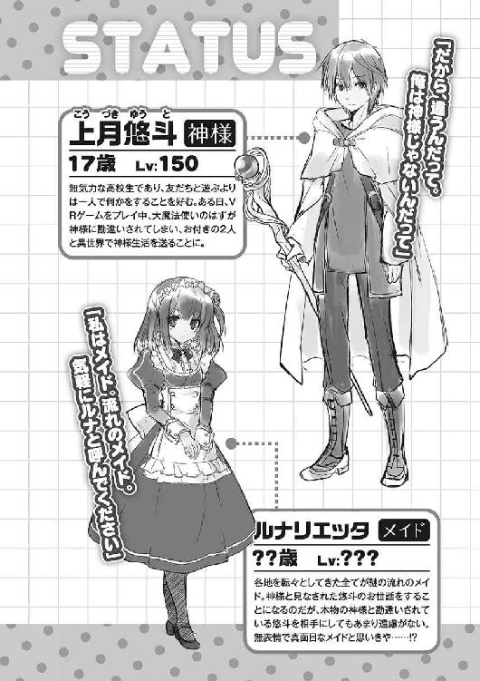
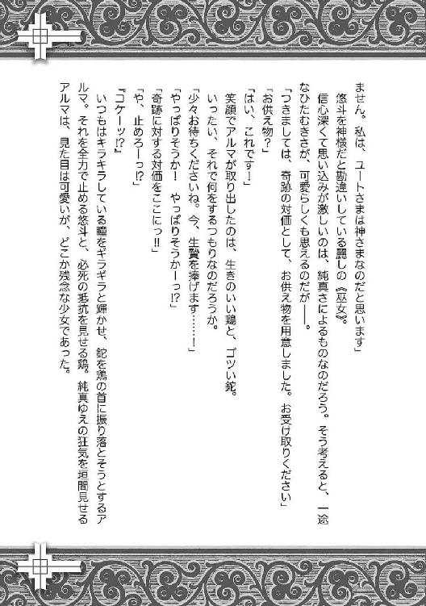

| 神様ライフ【期間限定 無料お試し版】 | |
| 気がつけば毛玉 | |
| (2014) | |

神様ライフ
気がつけば毛玉

角川スニーカー文庫
本作品の全部または一部を無断で複製、転載、配信、送信したり、ホームページ上に転載することを禁止します。また、本作品の内容を無断で改変、改ざん等を行うことも禁止します。
本作品購入時にご承諾いただいた規約により、有償・無償にかかわらず本作品を第三者に譲渡することはできません。
本作品を示すサムネイルなどのイメージ画像は、再ダウンロード時に予告なく変更される場合があります。
本作品は縦書きでレイアウトされています。
また、ご覧になるリーディングシステムにより、表示の差が認められることがあります。

視界が──暗い。
ひどく耳鳴りがする。
いや、誰かがいる。ざわめく声が聞こえる。
「......さま！」
「神......」
頭を揺さぶるように絶え間なく響く声。
さざ波のようなそれに揺られながら、彼は──上月悠斗は、うっすらと目を開けた。
（......何だ？）
ぼやけた視界に映るのは、揺らめく赤と、蠢く人々。
悠斗が何度かまばたきをする間にも、彼らはざわめき、体を揺する。
「おお......降臨......」
「これで......村......」
「雨......水......」
悠斗の周りで、思い思いに言葉を発する『誰か』たち。
彼らの声に引き上げられるように、悠斗はまどろみから目覚めていって──。
「お目覚めになったぞおおおおおお!!」
「おおおおおおおおおおおおおおおん!!」
むせび泣くおっさんどもを見た。
「........................は？」
「ラセラーッ！ ラセラーッ！」
「ラッセ！ ラッセ！ ラッセ！ ラッセ！」
（いや..................は？ 誰、こいつら？ いや、え？ え......？）
松明に照らされた石造りの建物の中。悠斗を囲んで踊り狂う何十人ものおっさんたち。
妙にガタイがよく、そのくせ、目の下にクマを浮かべている中年男性たちの笑顔に、悠斗は気を失いそうだ。いや、むしろ泣きたかった。声を上げて逃げ出したかった。しかし、今、少しでも動いたら、おっさんたちにどうにかされてしまいそうで怖かった。
「ラッセ！ ラッセ！ ラセラー！ ラセラー！」
「おおおおん！ おおおおおん！」
悠斗の気持ちなど関係なしに、おっさんたちは歌い、踊り、涙する。ほの暗い大部屋の中、かがり火で汗を輝かせ、満面の笑みで舞い踊る。
（ひいい......！ 何だ？ 何がどうなって......!?）
サバトじみた狂気の乱舞の中、体を起こした悠斗は、身動きひとつ取れずにいて──。
「みなさん、お静かに」
永遠に続くかと思われた悪魔の宴は、柔らかな声によって終わりを見せた。
あれだけ騒いでいた男たちは、誰かの声に合わせてすんなりと部屋の両脇へ引いた。代わって、大部屋の出入り口からひとりの少女が姿を現す。
「おぉ......」
悠斗は、思わず感嘆の声を漏らした。
しばたかせていた目を見開き、だらしなく口を開き、ただ短い言葉だけをこぼした。
仕方のないことではある。なぜなら、悠斗の正面から歩いてきたのは、彼が今まで見たこともないような美少女で──。
「まだ、決まったわけではありません」
長く、ふわりとした茶髪。濃い茶色の煌めく瞳。１６０センチほどの身長は、背筋を伸ばしているため、実寸よりも高く見える。
「決まるのは、これからです」
巫女服に似た衣装を着ている少女は、見た目だけではなく、声も可愛らしかった。
柔らかそうな、女らしい──いや、女の子らしい体。整った顔立ちに、優しげな声。
非の打ちどころがないとはこのことか。現実世界でも仮想現実でも、悠斗はこのような美少女には出会ったことがなかった。
「アルマさん。どうぞ」
「ええ。ありがとう」
（......え？ メイド？）
アルマと呼ばれた少女の後ろから、またひとり、見目麗しい少女が現れた。
肩にかかる長さの黒髪。冷たく光る赤い瞳。陶磁のように白い肌。長そでのメイド服を着た小柄な少女は、体つきこそ貧相なものの、人形にも似た美しさがあった。
メイド服の少女は、先に悠斗の前に姿を見せていた少女に水瓶を渡し、彼女の脇にそっと控える。その動きを目で追いながら、悠斗はまた、ほうっと息を吐いて──。
「それでは、お答えください。貴方は、水を出せますか？」
「......あ、え？ 俺？」
「はい」
巫女のような少女と、メイド服を着た少女。
ふたりの美少女に見惚れていた悠斗は、突然の問いかけにハッと我に返った。同時に、視界もクリアになっていき──その中心には、悠斗に向けて水瓶を差し出す少女の姿があった。
彼女を見つめながら、悠斗は投げかけられた質問を反芻する。
（水を出せ？ 水なんて、蛇口を捻れば......あ、これはゲームだったな。じゃあ、魔法を使えってことかな......）
魔法使いである自分に聞くということは、そういうことなのだろう。ぼやける頭でそう判断した悠斗は、ゆっくりと立ち上がり水瓶に向けて右手を開き、呪文を唱えた。
「【ウォーター・ボール】」
下級の魔法、手のひらから水球を生み出す【ウォーター・ボール】。
何もない空間から生じた水の塊は、小さな水瓶には収まり切らず、ぼたぼたと音を立てて石畳の床へと落ちた。
「おおおおおおお......！」
何の変哲もない水魔法の発動に、建物の中に集った者たちは一気にざわめきだす。その様子を悠斗が不思議そうに眺めていると、不意に彼の手が引かれた。
「もうひとつ。もうひとつ、お答えください」
「うん？」
「雨は......貴方は、雨を降らせることができますか......？」
巫女のような姿の少女が、わなわなと震えながら悠斗の手を握っていた。神にでもすがるようなその態度。悠斗は、なぜ少女がそのような態度を取るのか理解できなかったが、彼女の言う通りにしなければ話は進みそうになかった。
幸いにして、悠斗のジョブ《マジック・ルーラー》は最高位の魔法使いだ。《ウィッチ》のように、ほうきに乗って空を飛ぶことはできないが、雨を降らせ、雷を落とすぐらいはできる。
「雨か......雨なら......」
雨乞いの儀式などする必要はない。《マジック・ルーラー》にかかれば、天候の操作など、呪文ひとつで十分だ。
「【ヘビー・レイン】」
降雨魔法【ヘビー・レイン】の発動。
大部屋の高窓からわずかに差し込んでいた日光が消えていき、代わりにじっとりとした空気が流れ込んでくる。遠くで雷が鳴り、びゅうびゅうと音を立てて風が吹き始め──その直後、土砂降りの雨が降り出した。
「うあああああああ！」
「やった！ やったぞ！」
「ああ！ 神様！ あああ！」
途端に、悠斗の眼前に集っていた男たちが外へと駆けだしていった。
誰もが溢れる喜びを隠そうともせず、転びそうになりながら外へ、外へと走り出していく。何十人もいた男たちはあっという間にいなくなり、代わりに、外からは大雨の音に負けないほどの歓声が聞こえてくる。
まるで地獄から生還でもしたかのような勢いに、悠斗はすっかり気圧されてしまった。たじろぎ、大部屋の出入り口を凝視して──彼の手を握っている少女も似たような様子で、彼女は丸く目を見開いたまま固まってしまっている。
「アルマさん。雨が降りましたよ」
「雨......雨が、降った......」
しばらくして、少女から先に動き出した。
そばに控えていたメイドに声をかけられた少女は、うわごとのように雨、雨と呟いて、悠斗の手を握ったまま大部屋の外へ出ていこうとする。予想外の力強さに引っ張られる形で、悠斗も彼女に付いていき──そして、その光景を見た。
「雨だぁぁぁあああ！」
「雨だ、水だぁっ！」
「助かったぁ......！」
悠斗がいた建物は、丘の上に建てられているのだろう。なだらかな傾斜を下った先には村が広がっていて、その至る所で人々が空に手を広げ、泣いて喜ぶ姿が見えた。
降雨魔法【ヘビー・レイン】の効果はまだまだ始まったばかり。空には黒雲が広がり、辺り一面に大雨を降らせている。叩きつけるように落ちてくる雨粒は、芝生や木々の葉に当たり、バチバチと音を立てて弾けている。
「なんだ、これ......？」
【ヘビー・レイン】の効果を、悠斗はよく知っている。炎を操る魔物や魔法使いの力を削ぐため、何度も何度も使った魔法だ。発動すればどうなって、どのような光景を生むのかも熟知している。
だが、この光景を彼は知らなかった。
「なんでこんなにリアルなんだ......？」
空に渦巻く雲。村を煙らせる大雨。村人たちの表情、動作。全てがリアルだ。
いや、視覚だけではない。悠斗の五感全てが、ここが現実世界だと告げている。
土と緑、雨の匂い。肌を伝う水の感触。唇から入り込む雨の味。ざあざあと鼓膜を震わせる雨の音。それに、繫いだ手から伝わる温かさ。
何もかもが現実的で──だからこそ、悠斗は混乱してしまう。
「おかしいな......」
ひとつの疑問に首をひねる悠斗は、ここがどこなのか、確証を得ようとして辺りを見回した。彼の視界に映るのは、大雨を降らせる黒雲。歓喜に雄たけびを上げる村人たち。そして、先ほどまでいた石造りの建物に、隣にいる巫女のような少女。
（......ん？ なんでこの子、こんなに感極まった顔をしているんだ？）
少女は茶色い瞳をキラキラと輝かせ、泣き笑いのような表情をしている。
何かを言おうとしては唇を震わせて、涙をこらえるかのように軽くうつむく。
その動作を何度か繰り返した後、とうとう少女は涙をこぼして──。
「神さま！」
「......は？」
神様。少女は確かにそう言った。悠斗を見つめて、『神様』と言った。
思わぬ言葉に硬直する悠斗に、泣き笑いの少女が抱きつく。
「ああ、ありがとうございます、神さま！」
「うおっ!? な、なんだぁ？」
押し倒すような勢いに悠斗はたたらを踏んでしまうが、構わず少女は体をぐいぐいと押しつけて、悠斗を抱きしめてくる。少女の豊かなふくらみと柔らかな体を感じた悠斗は、顔に血が上るのを感じた。
「ちょ、いきなりなんだ？」
「神さま、恵みの雨をありがとうございます！」
「人の話を聞けって！」
抱きしめ返すほど女に慣れているわけでもなく、突き放すほど枯れてもいない。
結果として、悠斗は両手を中途半端にさ迷わせたまま、少女の抱擁を受け続けた。人によっては棚ボタと喜ぶだろうが、悠斗にはそんな余裕はとてもなかった。
「深き慈愛に感謝を......」
「何なんだ、いったい......」
ざあざあと音を立てて降り注ぐ雨。
魔法によって降り始めた雨に打たれながら、悠斗はぽつりと呟いた。
「俺、ゲームをしてたはずなんだけど......」
どことも知らない場所で美少女に抱きしめられながら、悠斗は少し前のことを思い出していた。
‐１‐
中学生になったら、ＶＲゲームができる！
などと、上月悠斗が胸をときめかせていたのは、いつの頃だったか。
少なくとも、高校に上がった頃には、かつての興奮はすっかり冷めてしまっていた。
ＶＲ──仮想現実という未知なる世界への憧れは、慣れと惰性によって、跡形もなく消え去っていた。
「お使いクエストとか、だるいな......」
コンピュータの発達によって創造可能となった仮想現実。分身を用い、その小さな世界に没入する技術。それらを組み合わせることにより、人類は新たな娯楽を手に入れた。
それがＶＲゲームだ。テレビや携帯ゲーム機に映ったキャラクターを操作するのではなく、ゲームのキャラクターとなって、ゲームの世界を体感する。娯楽の革命とまで言われたＶＲゲームは、ファーストタイトルの登場から、瞬く間に発展していった。
ただ、慣れとは怖いもので、ＶＲゲームばかりしていると──やはり、感動や新鮮味が薄れてしまうのだ。
それこそ最初のうちは、
「もう、ＶＲゲーム以外のゲームはいらない」
とまで言われたゲーム業界の風雲児も、今となっては、
「携帯ゲームの方が面白くないか？」
などと言われる始末。
確かに、漫画やゲームのキャラクターのように、常識外れの身体能力で動き回り、剣や銃、魔法や超能力を使って敵を倒すのは面白い。しかし、疲れ知らずの分身とはいえ、体を動かすという操作方法がネックとなり、インドア派の人間に『面倒臭い』と思われるようになった。
悠斗もそうだ。今も《A.W.Online》というタイトルのＶＲゲームの世界に没入してはいるが、あちらこちらを行ったり来たりするクエストのせいで、面倒臭さで胸がいっぱいだった。
「だるい......面倒臭い......」
どこまでも続く草原に延びる、一本の街道。次の目的地は都市や町ではないため、ワープ機能も使えない。《幻獣使い》なら飛竜に乗ってひとっ飛びだろうが、あいにく、悠斗は魔法使い《マジック・ルーラー》だ。
風を起こすことはできても、風に乗ることはできない。魔法使いなら空ぐらい飛べてもいいものだが──《マジック・ルーラー》並みに強力な魔法が使えて、そのうえ空も飛べる。残念ながら、《A.W.Online》にそこまで万能なジョブはない。
「《ウィッチ》にでもなればよかった......」
徒歩の辛さから、ついつい、ほうきに乗って空を飛べるジョブを思い浮かべる悠斗。しかし、《ウィッチ》は女性限定のジョブだ。
「でも、ネカマになるのも嫌だし、ほうきで飛べる以外にいいとこないもんな、あれ」
などと呟きながら、悠斗はただただ、歩き続けた。
◇ ◇ ◇
「孫娘によろしくねぇ」
「はいはい」
人里離れた森の中に一人で住んでいる老婆に背を向けて、悠斗は小屋を後にした。
相手はＮＰＣ。プログラム通りに動く人形なのだから、いちいち返事などしなくともよい。それでも、ついつい受け答えをしてしまうのは、やはりこれがＶＲゲームだからだろう。徒歩の面倒臭さもそうだが、体感するゲームというものは、やはりＶＲではないゲームとは勝手が大きく違う。
「さて、と。手紙は渡したし、ワープで帰るか」
システムメニューもそうだ。『アイテム』や『ステータス』、『ＭＡＰ』『コンフィグ』などの項目が並ぶシステムメニューは、ＶＲゲームでは空中に浮かぶホログラムの板として表示される。直接触って操作する辺りはタッチパネルと同じだが、念じただけで消したり出したりできるのはＶＲだけだ。
「王都には......寄らなくていいな」
今週は大型アップデートがあったので、各国の王都で催し物が開かれていた。今回のクエストで得た報酬で、イベント限定アイテムを買ったり、演劇やサーカスを楽しんだりすることもできるのだが──今の悠斗には、そのための気力が残されていなかった。
「高い報酬に釣られて、何でも引き受けちゃ駄目だな」
お使いクエストの面倒臭さを嚙みしめながら、悠斗はシステムメニューの『ＭＡＰ』をタッチする。すると、Ａ４サイズのホログラムの画像が世界地図へと切り替わった。
《A.W.Online》は、『もしも地球に魔法があったら』というＩＦの世界を舞台としている。なので、大陸や地形は地球のものと同一であり、国や文化にも類似点が多い。ただ、時代設定が中世だったり、ユーラシア大陸の真ん中に魔王城があったりするのが、ＲＰＧらしいと言えばらしい部分である。
「さ、帰るか」
タッチパネルの要領で世界地図を拡大し、拠点としている町をタッチする。すると、今度は地図に替わって町の情報が表示され、画面の左下には『ワープ』の文字が現れる。
これをタッチするだけで、一瞬にして町へと移動することができる。どこにでもワープできるわけではないが、ＶＲゲームには欠かせない便利な機能だ。
「それじゃ、ワープっと......ん？」
ぴんと立てた人差し指で、悠斗がホログラム画面をタッチする──瞬間のことだった。
彼の視界の端に、妙なものが映ったのは。
「何だあれ？ 扉？」
森の木々の間に、宙に浮かぶ扉があった。
豪奢な作りの木製の扉。木肌はつやつやとしていて、ドアノブなどに施された金細工は、木漏れ日を受けてきらりと輝いている。まるで王宮から持ち出してきたような扉だ──しかし、それがなぜ、こんなところに？
ホログラム画面を消し、好奇心から、悠斗は扉に近づいていく。
「んん？ 何でこんなにリアルなんだ？」
見れば見るほど奇妙な扉だ。宙づりにされているわけでもないのに、地面から少しだけ浮いていて──それに、妙にリアルに見える。
何でも再現できる仮想現実、とは言われているが、本当に何でも再現できるわけではない。細部の造形、たとえば人間の顔の産毛だとか、川の水に浮かぶ小さな砂粒だとか──要するに、別に描写しなくていいものは、仮想現実には存在しない。
そのようなものまで細かく再現した、リアリティ溢れる世界で分身を動かそうと思ったら、莫大な予算と時間が必要となる。なので、現在の仮想現実は、現実世界に比べて少しだけリアリティに欠ける造形となっている。
だというのに、この扉はどうだ。造形に関しての妥協も感じなければ、ＶＲ特有の噓くささもない。まるで現実世界から切り取って、ここに貼りつけたかのように存在している。
「......まさか、今週の大型アップデートが関係しているのか？」
悠斗がパッと思いついたのは、これぐらいのものだ。
いや、他に考えようがない。あり得ないクオリティの扉。つい先日の大型アップデート。二つを結びつけて考えれば、どうにか理由をつけられないこともない。
つまり、この扉はアップデートによって追加されたもので、もしかすると、造形描写に力を入れた試作品かもしれない。
──いや、それだけではない。扉ということは、まだその先があるのかもしれない。
たとえば、あの扉の先は小部屋程度の小さな空間になっていて、その中のものは、全て扉と同じようなクオリティでできているのかもしれない。もしくは、あの扉は単に目印として目立たせているだけで、開いた先は未知のエリアに繫がっているのかもしれない。
「もしかして、これが噂の隠し要素ってやつか？」
お使いクエストで疲れ切っていた悠斗の心身が、俄然、やる気でみなぎってきた。
秘かに追加されるアイテム。攻略サイト（@wiki）にも載っていないクエスト。写真に写らない謎のキャラクター。存在のみが噂されるボスモンスター。
《A.W.Online》において、まことしやかに囁かれる噂話。都市伝説のように話だけが伝播していくそれらは、このゲームにおける隠し要素と言われていた。
「これがそうなのか......？」
どくん、どくんと、電子の心臓が脈打つ音が聞こえる。
（もしも、これが隠し要素なら──）
惰性で続けているようなこのゲームに、昔のような感動を覚えることができるのだろうか。それとも、案外、大したことはないのだろうか。
「......よし、開けるぞ！」
期待に胸を高鳴らせながら、悠斗は金色のドアノブに手をかけた。
そして、思い切って、片開きの扉を開け放ち──。
──一瞬の暗転後、悠斗は、現実世界のような、仮想現実のような、奇妙な場所で目を覚ますこととなる。
‐２‐
思いきり走ってみる。
オリンピック選手もかくやというような速さが出た。
足元にあった石を投げてみる。
風切音を発して飛んで行った拳大の石は、はるか先の岩に当たって粉々に砕けた。
【ウォーター・ボール】の魔法を唱えてみる。
悠斗の手のひらから水球が生まれ、それは彼の念じた通りの方向へ飛んで行った。
「うーん......」
確かめれば確かめるほどに、確信が深まっていく。
ここは、ＶＲゲームの世界だと。
その証拠に、現実世界の悠斗には備わっていなかった、いくつもの能力が自在に使える。
常識外れの身体能力。様々な超常現象を引き起こす魔法。それに、念じただけで現れるシステムメニュー。すっかり見慣れてしまったホログラムウインドウを凝視しながら、悠斗はまた、唸り声を上げた。
「ううーん......」
ここは《A.W.Online》の世界だ。そして、ここでの悠斗は、レベル１５０の《マジック・ルーラー》だ。それは間違いのないことで、厳然たる事実として存在している。
だが、悠斗は納得がいかないようで、何度も何度も首をひねっている。
「ＶＲゲームにしては、やたらリアルだよな......」
雨が上がったばかりで、まだ濡れている丘の斜面に寝転がって、悠斗は空を見上げる。
太陽はどこまでも眩しくて、空は青く澄んでいる。雨上がりの風は涼しくて、ぐっしょりと濡れた背中は少しだけ気持ち悪い。
リアルだ。何から何までリアルなのだが──。
『......クケー』
遠くの空では、現実世界にはいるはずもない大怪鳥が飛んでいた。おとぎ話の本から飛び出してきたかのような造形の魔物が、高らかに鳴き声を上げていた。それは明らかに非現実的な光景だった。
「......やっぱり、これは、あれか。異世界ってやつか」
リアルと、アンリアル。現実と、仮想現実。
二つが融合したこの世界は、いわゆる『ゲームそっくりの世界』というものだろうか。悠斗はそのように仮説を立てる。
「いや、まさか......あー、でも......」
少年が異世界に迷い込む、という話は、ゲームやアニメだとよくある話だ。
ファンタジー世界に召喚されて、勇者となる。戦乱の世界に転移して、武将に仕える。科学が発達した世界に転生し、巨大ロボットのパイロットになる。いずれにせよ、こういった作品で欠かせないのは異世界の存在だ。
異世界があるという前提で、物語がつづられる。
異世界を舞台として、物語が展開していく。
それら娯楽作品では、当たり前のように異世界があるものとして語られている。
悠斗がプレイしていた《A.W.Online》も、舞台は剣と魔法のファンタジー世界だ。そう考えれば、彼は日常的に異世界というものに触れていたのだが──いざ異世界らしき場所に来てみると、なかなか素直にそのことを認められない。
現代っ子の悠斗としては、まだここが最新鋭の技術で作られた仮想現実だと言われたほうが、はるかに納得できた。しかし、仮想現実から退出する『ログアウト』や、ＶＲゲームの管理者を呼ぶ『ＧＭコール』は、何度試しても反応しなかった。
リアル過ぎる世界と、あり得ない出来事の連続。
もうそろそろ、腹をくくって答えを出してもいい頃だ。
「ここは、ゲームそっくりの世界。そして、俺はただの高校生じゃなくて、レベル１５０の《マジック・ルーラー》」
悠斗は、この二つを確定事項とした。
そうしなければ、また思考が堂々巡りを始めてしまいそうだ。細かい疑問はつきないものの、あえてそれらを放置して、悠斗は先のことを考えた。
「これからどうするかな」
海外であるのなら日本に帰ることも可能であるが、ここは謎の異世界だ。簡単に行き来できるようなものではなく、帰れるかどうかも分からない。ならば、ここで生きていくのか──そうであるのなら、どうやって生きていくのか。
考えるほどに問題が山積みとなっていき、悠斗は気だるげに芝生の上で寝返りを打った。
「......腹、減ったな」
悠斗が雨を降らせたのは昼のことで、現在の太陽の位置と、システムメニューに表示されている時刻から、今は夕方だということが分かる。彼が朝食を抜くのはいつものことだったが、昼食まで抜くとさすがにこたえた。
夏の高校野球でも流しながら、そうめんでも食べようか。などと考えていた矢先に、悠斗はあの扉に出くわしたのだ。それから、あれよあれよと異世界に転移して、雨を降らせて、ここがどこだか検証して──怒涛の展開に、悠斗は今の今まで空腹感を忘れていた。
だが、一度意識してしまうと辛いもので、悠斗はすきっ腹をさすりながらシステムメニューを開いた。
「何か食い物、持ってたかな」
システムメニューを操作し、悠斗はアイテム欄を開く。装備品、消耗品、貴重品などの項目が並ぶ中、彼は消耗品の項目をタッチして中身を確認した。
「ポーション、マナポーション、万能薬、エリクサー、世界樹の美味しい水......薬と飲みもんばっかじゃねえか！」
どうしようもないほどＲＰＧ的な品ぞろえに、悠斗は思わずツッコミを入れてしまった。
だが、これは仕方のないことではある。仮想現実内では物を食べても腹が膨れないし、いまいち味気ないということで、好き好んで食べ物を持ち歩く者はいなかった。
味覚という機能にこだわり、料理アイテムに効果を持たせているＶＲゲームもあるにはあるが、あいにく《A.W.Online》はそうではない。戦闘中にカレーを食べて体力全快、などという奇妙な光景を生み出さないため、料理アイテムの効果は低く設定されていた。
なので、悠斗が持ち歩いているのも、ごくごく一般的な回復アイテムのみ。ポーションやエリクサーといった、腹には溜まりそうにない薬品だけ。
「水でも飲んでごまかすか......？」
あまりの選択肢のなさに、悠斗が切ないことまで考え始めていたら──。
「お待たせしました」
後ろから、楚々とした声が聞こえてきた。
「ん？ ああ、さっきの」
振り向いた先、悠斗が男たちに囲まれていた建物をバックに、先ほどの少女が立っていた。雨に打たれて濡れてしまった服は着替えたのだろう。少女は巫女服のような衣装ではなく、夏の日差しによく映える薄桃色のワンピースを着ている。
「急にどっかに行くからさ。どうしたのかと思ったよ」
「も、申し訳ありませんでした」
恥ずかしそうに頰を染め、小さくなる少女。悠斗に抱きついていたことと、正気に返った時、声を上げて逃げ出したことを思い出しているのだろう。いかにも清純そうな娘は、火が出るほどに顔を赤くしていた。
「大恩ある神さまを置き去りにしてしまい、申し訳ありません。ですが、雨と泥とに汚れた姿を見せるのも失礼かと思い、身を清め、髪を整えてきました」
「いや、まあ、気にしてないからいいけど......ん？」
「改めまして、私、アルマ＝アニータ＝コルテーゼが感謝の意を」
「ちょ、ちょっと待て」
「は、はい？」
何か不手際があったかと、アルマと名乗った少女は驚いて身を硬くしている。
だが、そうではない。悠斗は彼女の対応を気にしているのではなく──。
「神様って、俺のことか？」
なぜ、自分は神と呼ばれているのか。悠斗はそれが気になり、アルマへと詰め寄った。
「え、それは」
「雨を降らせたからか？」
「はい、それはそうですが」
降雨魔法【ヘビー・レイン】で、村一帯に雨を降らせたから神様扱い。単純な構図だが、その分、分かりやすくはある。しかし、悠斗にはどうにも解せないことがあった。
「いや、こんなスキル、ありふれたものだろ？ 誰にだってできる......」
「できませんよ！ 王都の宮廷魔術師の方でも、天候を操ることはできません」
「......そうなの？」
「はい！」
自信満々に答えるアルマ。現地人がそうだと言うなら、そうなのだろうが──しかし、いきなり神様扱いは大げさすぎる。
悠斗はあくまでただの高校生である。神などという超自然的な存在ではなく、平々凡々な一般市民だ。なぜか魔法が使えるようになってはいるが、根の部分はまったく変わっていない。
だからこそ、神と呼ばれた悠斗は、戸惑いながら少女の言葉を否定する。
「俺、神様じゃなくて人間なんだけど」
「またまた、ご謙遜を。雨乞いの祈禱の中、輝く光とともに現れた貴方さまが、神でないはずがありません」
「あ、そういう登場シーンだったんだ？」
勘違いされても仕方がないことではあった。タイミングがよかったのか、悪かったのか。悠斗は、アルマたちが神に祈っている最中に異世界に転移してきたのだ。
「すると、あれは神殿か」
「はい」
悠斗がサバトの会場だと思っていた石造りの建物は、言われてみると神殿に見えないこともない。改めて見てみると、柱や壁にローマ建築のような模様が見受けられた。
「あんなところのど真ん中に現れたら、そりゃあ誤解もするか」
「誤解？」
「ああ。俺はちょっと複雑な事情があるだけで、他は普通の高校生......あ、いや、魔法使いなんだよ。雨を降らせることができたのも、俺が魔法使いだからで......」
「分かりました」
「おお、分かってくれたか」
アルマはにっこりと笑って、うんうんとうなずいた。
彼女は物腰が丁寧で、受け答えもしっかりしている、いかにも聡明そうな少女だ。悠斗は身の上を説明できる自信はなかったが、アルマはきちんと理解してくれた。一を聞いて十を知る。人間、こうありたいものだと悠斗は感心してしまい──。
「──そういう設定で、お忍びをされるのですね？」
「全然理解してねえじゃねえか！」
ドヤ顔で、かつ理解者面をするアルマに、悠斗は全力でツッコミを入れた。
髪の毛も雰囲気もふんわりした子ではあったが、頭の中までふんわりしていたとは。
悠斗の中の『聡明なアルマ像』は音を立てて崩れ去り、代わりに現れたのは能天気な天然さんの姿だった。
（なんだ、この、言葉が通じるけれど会話ができない状態は......!?）
すっかり訳知り顔になっているアルマに、悠斗は必死になって話しかける。
「だから、違うんだって。俺は魔法使いで、レベルは高いけど、ただの人間で......」
「ご安心ください。私はちゃんと分かっていますから」
「いや、だから、あのな......」
「ささ、こちらへ。お風呂と食事の準備ができております」
「だ、だから......！」
上機嫌なアルマに背中を押され、悠斗は神殿の脇に建っている家に連れていかれる。アルマは悠斗を神と呼び、屈託のない笑顔で彼の腕を引く。
反論も満足にできないまま、悠斗は家の中へと連れ込まれてしまった。
‐３‐
「異世界ってだけでも訳分からんのに、神様ってなんだそりゃ」
アルマに連れられてきた二階建ての一軒家。
その浴室で、風呂に浸かって身体を温めながら、悠斗は大きなため息を吐いた。
「この村で祀られていた神様に間違われたのか？ ......間違われたんだろうなあ」
水不足に陥る辺境の村！ 村人たちの必死の雨乞い！
そして、光とともに降臨する神──！
ここに待ち望んだ大雨まで加わったら、勘違いもするというものだ。
だが、悠斗は神などという大層な存在ではない。なぜか《マジック・ルーラー》としての力を持ってはいるが、言ってしまえばその程度だ。
雨風を起こしたり、爆炎を上げたり、湖を凍らせることぐらいはできるが、死者を蘇生させたり、奇跡で全てを解決したりはできない。神様として扱われても困ってしまう、というのが悠斗の正直な気持ちだった。
「神さま、お湯加減はいかがですか？」
「あー、ちょうどいいよ」
「お背中、お流ししましょうか？」
「いやいやいや！ それはいいって！」
「そうですか......」
外の薪がまで火加減を調整しているアルマが、残念そうな声を漏らした。
（うーん、何というか、純真そうな子だな）
アルマはすっかり悠斗を神だと思い込んでおり、彼をもてなそうとあれこれ気を配っている。そこに悪意や思惑はなく、ただただ神に対する感謝があった。だからこそ、悠斗は彼女を騙すようなことはしたくなかった。
早く誤解を解いてしまおう。そう決めた悠斗は、早々に風呂から上がることにした。
「もう風呂はいいから」
「あっ、はーい。では、着替えを」
「いや、それもいいから！」
放っておいたら、着付けまでされてしまいそうだ。人並みの常識と羞恥心を持ち合わせている悠斗としては、それだけは容赦願いたかった。
「まだ湿ってるけど、贅沢は言ってられないよな」
悠斗が丘の上で待ちぼうけをくっている間に、夏の日差しと涼やかな風を受け、濡れた服はある程度乾いていた。寝転がっていたため、背中はまだじっとりと湿っているが、それでも、何も着ないよりはマシだ。
アルマに着替えを用意してもらうのも厚かましいと思った悠斗は、無地の服を着て、その上から《マジック・ルーラー》の専用装備である純白のローブを羽織った。
そして、濡れた髪をかき上げながら、彼は脱衣所を出て──。
「着替えをお持ちしました」
「うおっ!?」
悠斗が脱衣所の扉を開けると、そこにはひとりの少女がいた。
黒い髪に赤い瞳。身長は１５０センチほどか。長そでのメイド服に身を包んだ小柄な少女が、着替えやタオルを持って脱衣所に立っている。
「ん？ どっかで見たような......」
既視感に目を細めた悠斗は、すぐに少女のことを思い出した。彼がこの世界で目を覚ました神殿。そこでアルマのそばに控えていたメイドこそが、目の前にいる少女だった。
「ああ、神殿で会ったメイドさんか」
「はい、そうです。私は村長宅で働いているメイド、ルナリエッタです」
「はあ、ルナリエッタさん」
「その村長から、今後は貴方様を主として、万事抜かりなく世話をするようにと言いつけられました。以後、よろしくお願いします、ご主人様」
「ご主人様ぁ!?」
神様の次はご主人様。次々と変わっていく立場に、悠斗は目を白黒させる。
事態についていけない悠斗とは対照的に、ルナリエッタは淡々と悠斗に説明を続ける。
「乾いていない外出着では落ち着かないでしょう。ゆったりとくつろげるよう、こちらで部屋着を用意しましたので、どうぞお使いください」
「あ、ああ。ありがとう」
「濡れた服は脱衣所に置いておいてください。乾かしてからお部屋にお持ちしますので。それでは、夕食の準備がありますので、私はこれで」
「うん」
抑揚のない話し方が逆によかったのか、短い会話の中ですっかり悠斗は落ち着いていた。
（ご主人様って呼ぶぐらいだから、てっきり、かしずかれると思ったけど......）
悠斗の心配とは裏腹に、ルナリエッタは特に何をするでもなく去っていった。
少し堅そうな少女ではあったが、今の悠斗にはそれがありがたかった。村人全員がアルマのような態度だったらやりにくそうだが、ルナリエッタのような子もいるのなら、何とかやっていけそうだった。悠斗はほっと体の力を抜いて、脱衣所に入っていった。
「話を聞くのも、事情を説明するのも、ルナリエッタ相手の方がよさそうだな」
などと呟きながら、悠斗は受け取ったタオルで濡れた髪を拭き、柔らかそうな布の服を広げて──。

『そうです、私が神です』
くるりと裏返してみると、そこにもやはり、おかしな刺繡がある。
「......着れるか、こんなもん！」
おちょくられているのか、からかわれているのか、どちらだろうか。
まともな村人に会えたと安心したところで、不意を衝かれて脱力する悠斗。
異世界というものは、一筋縄ではいかないようだ。悠斗は力なくうなだれながら、広げていたＴシャツを丸め、脱衣所のすみに放った。
◇ ◇ ◇
「水不足が祟って粗末なものしか用意できませんでしたが、心づくしの料理をそろえました。どうぞ、ご賞味ください」
「それじゃ、遠慮なく。いただきます」
悠斗が風呂から上がって食卓に着いた頃には、外はすっかり薄暗くなっていた。
壁にかけられたランプには火が入れられて、テーブルに置かれた魔法石は、淡い光を放っている。ゲームでは見慣れた光景だが、現実として味わうと、また違った風情があった。
「うん、美味いな。このキノコのサラダ、いい味出してる」
「ありがとうございます」
テーブルの脇に控えるルナリエッタが、恭しくおじぎをする。
こうしている分には、真面目なメイドに見えるが──あのＴシャツのセンスだけはいかんともしがたい。
「神さま、こちらもどうぞ。この村自慢の料理です」
「ああ、ありがと......って、うまっ!? なんだこれ!?」
「うふふ」
悠斗は、アルマが取り皿に分けてくれた肉料理を口に入れる。嚙んだ途端に、脂と肉汁が湧き出して、ハーブの香りと混ざり合う。味からして鶏肉だということは分かったが、悠斗がいつも食べている唐揚げなどとは別物だ。少し肉は硬いが、それもいいアクセントとなって歯や舌を喜ばせてくれる。自慢するだけのことはある逸品だった。
「パンもうまい......何でもおいしいな、この村の料理」
「お気に召していただいたようで何よりです。さ、こちらもどうぞ」
「かぼちゃのポタージュをお注ぎしますね」
「ああ」
粗末だなど、謙遜もいいところだ。悠斗は、これまで味わったことがないほどの美味に舌鼓を打つ。
（やっぱり、あれか。俺を神だと思っているから、特別豪勢な料理を出してくれたんだろうか？）
それでご馳走が食べられるのは、思わぬ幸運ではあるのだが──それを役得と思うほど、悠斗は神経が図太くなかった。
このような誤解は早めに解いておかなくては、後々、面倒なことになるものだ。担がれるだけ担がれて、実は神様ではなかった、などと判明したら大事になりそうで、そもそも、悠斗自身、神と呼ばれるのはむずがゆい。
歓待の席ではあったが、ここできちんと話をしておこう。
そう決めた悠斗は、一度、食事の手を止めた。
「二人とも、聞いてくれないか？ 少し、話があるんだ」
スプーンを置いて、悠斗はアルマとルナリエッタを見つめる。
「おかわりですか？」
「いや、違うから。台所に行かなくていいから」
いきなり話の腰を折りにかかるアルマ。悠斗も予想はしていたが、すんなりと話を進めるのも難しそうだ。こういった時はあれこれ話をせず。必要最低限の情報交換に努めるべきである。話が脇道に逸れないよう、悠斗は端的に自己紹介を始めた。
「まずは俺の話だ。俺の名前は、上月悠斗。神じゃなくて、高校生......いや、ただの魔法使いだ」
「コウヅキ、ユート......？」
聞き慣れない日本人風の名前に、不思議そうに首を傾げるアルマ。
「あの、それってニックネームですか？」
「本名だよ！」
「えええええ!?」
なぜか、アルマは飛び上がらんほどに驚いた。
「いや、そりゃあ、日本人の名前なんて聞いたことないだろうけどさ。これでも俺の本名なの。上月が名字で、悠斗が名前。二つ合わせて、上月悠斗」
「か、改名されたのですか？」
「してねーよ！ 生まれた時から上月悠斗だよ!!」
「えええええ!?」
悠斗の名前が上月悠斗であることに、そんなに違和感があるのだろうか。アルマは驚きで目を丸くしながら、悠斗に問いかける。
「え、でも、我が家に伝わる石板に刻まれた神さまの名前と違いますよ？」
「そりゃ、別人だからな。俺は人間で、神様じゃない......」
「ええ!? 貴方さまは、『デスゾード』さまではないのですか!?」
「怖っ!? 神様の名前、怖ぁっ!?」
邪神全開なネーミングに、今度は悠斗が驚きの声を上げた。
デスゾード様。あだや疎かに接したら、もれなく祟られそうな神の名前だ。それこそ、天罰がわりにミンチにされそうではある。
「ええと......では、『デスユート』さまということですか？」
「必要か!? どうしても『デス』は必要なのか......!?」
こだわるポイントが致命的にずれていたが、話を先に進めるために、あえて悠斗はツッコミを吞み込んだ。
「とにかく、俺は上月悠斗。人間で、魔法使いで、一般人なんだ。断じて神様じゃない。それだけはしっかりと理解していてくれ」
「はあ......」
釈然としない表情のアルマと、我関せずとばかりに傍観を決め込むルナリエッタ。手ごたえらしい手ごたえを感じられないまま、悠斗は次の話題を振った。
「じゃあ、今度はアルマたちの番だ。お前らがどんな人間で、ここはどこなのか、教えてくれ」
異世界転移から半日経って、ようやく悠斗にも我が身以外を気にする余裕が出てきた。
この村はどこなのか。この少女たちは誰なのか。それを知っておきたい。
特に、現在地は重要な情報だ。この世界に来てからというもの、悠斗のシステムメニューは、一部の機能が使えなくなっている。散々試した『ログアウト』や『ＧＭコール』、ＭＡＰに付随する『現在地検索』、『ワープ』などがそうだ。
ＭＡＰは開けるが、現在地が検索できない。つまり、今の悠斗には、ここがどこかも分からないわけだ。初心者向けの地域ならまだしも、ここが危険地帯として有名な魔王領ならば──村から一歩外に出た途端、わらわらと強力な魔物たちに群がられ、最悪、死んでしまうだろう。
普段は楽観的とも言われる悠斗だが、惨たらしく死ぬのだけは避けたかった。彼は慎重に情報を集めようとする。
「では、私から」
アルマがそっと手を挙げた。
「私はアルマ＝アニータ＝コルテーゼ。サウスリア王国のディルカ村で、神さまを祀る《巫女》をしています」
サウスリア。地球でいうところのイタリアに位置する王国だ。覚えのある国名に、悠斗はわずかに肩の力を抜いた。
「王都はロマリアだっけ？ あの、馬鹿でかいコロッセオがある」
「そうです。村から西南に馬を走らせれば、二日で王都に着きますよ」
王都の名前も、悠斗が知っているものと同じようだ。
（何から何まで《A.W.Online》と同じだな）
悠斗がプレイしていたＶＲゲームの舞台は、『魔法が存在する地球』だった。
となると、現在地から北に行けばドイツのような帝国があり、南に行けば地中海に出ることになる。
「よかった......この辺りは初心者エリアだ」
「はい？」
「ああ、いや、こっちの話だ」
危険地帯である魔王領や南極大陸でなければ、この際、どこでもよかった。今の悠斗は、どうやらレベル１５０の《マジック・ルーラー》のようなので、自分から危ない場所に近づかなければ、死の危険にさらされることもないだろう。
ある程度の安心を得られた悠斗は、ほっと安堵の息を吐いた。
「それにしても、アルマは《巫女》だったか。道理でそれらしい服を着てると思った」
薄桃色の小袖と、桜色の短い袴。悠斗が知る日本の巫女服とはまた違うが、あれが巫女としての正装なのだろう。今はワンピースに着替えているアルマは、実際に着ているように誇らしげに答えた。
「ええ。代々伝わる巫女装束です。神事の際は、あれに身を包むんですよ」
「なるほどな」
巫女だから、巫女装束。ならば、メイド服を着たルナリエッタは──やはり、見たままなのだろう。
「ルナリエッタは《メイド》なんだよな？」
「そうですよ。私は《メイド》。流れのメイド、ルナリエッタです」
「ん？ 流れのメイド？」
「ルナちゃんは村の外から来たメイドさんなんですよ。何でも、気の向くまま、各地を転々としているんですって」
「ああ、それで流れのメイドか」
ひとつ所に留まらず、全国を放浪する生き方。就職するなら転勤がない会社と決めている悠斗にとっては、考えられない話だった。
「今日の朝までは私の家で働いてくれていたのですけど、降臨なされたユートさまが快適に過ごせるよう、こっちの家に移ってきてもらったんです」
「そういうわけです。先はどうなるか分かりませんが、今は貴方様がご主人様です。気軽に『ルナ』と呼んで、こき使ってくださいね」
「やたらとフレンドリーなメイドだな......まあいいや、よろしく、ルナ。アルマもよろしくな」
「はい、ユートさま」
「よろしくお願いします、ご主人様」
神様になったり、ご主人様になったり、悠斗にとっては本当に忙しない一日だった。
ただ、知りたいことは知ることができた。まだ混乱は残っていたが、最低限の情報は得ることができた。
この村のことや、他のことは──また明日、ゆっくりと調べることにしよう。
そう決めた悠斗は、夕食の後、早々に寝室へ引っ込んでいった。
‐４‐
「ディルカ村は人口三百人ほどの小さな村なんですよ」
「へー」
翌朝、悠斗はアルマとルナリエッタにお願いし、村を案内してもらっていた。
急がば回れ。石橋は叩いて渡れ。不可思議な異世界は、こうして身近なところから少しずつ知っていくぐらいでちょうどいい。少なくとも、悠斗はそう考える少年だった。
手始めに、この村について知っておこう。そう思ってのディルカ村観光だ。
「私やルナちゃんみたいに神殿や家の中で働いている人もいますけど、ほとんどの人は狩りや農耕で生計を立てていますね」
「ほー」
確かに、神殿と悠斗が泊まった家がある丘の上から見渡しても、見事に田畑と森しかない。観光名所となり得る要素は欠片も見当たらず、そのせいか、村人以外の姿は全くない。その村人さえ、やろうと思えば数えてしまえるほどに少ない。
いかにも地方の村といった風景だ。悠斗はテレビの海外紀行番組で、こんな村を見た覚えがあった。
「毎日、畑仕事をして、毎日、神さまにお祈りして。私たちはこの村で、平々凡々と暮らしてきたわけです。気候も安定していますし、作物も良質なものが穫れますし、贅沢はできないけれど、とっても豊かな村だったんですよ」
「そう......あの日が来るまでは......」
「変なナレーション入れるの止めろ」
悠斗は、妙にシリアスな顔で茶々を入れるルナリエッタにツッコミを入れた。
やはり、このメイドは真面目そうに見えてそうではない。基本的に無表情ではあるが、言動の端々に茶目っ気やアクを感じさせた。
「いえ、ルナちゃんの言ってることは間違っていないんです」
「あ、そうなの？」
「はい。あの日......と言っても、正確な境目は分からないのですが、だいたい三か月ほど前から、ほとんど雨が降らなくなったのです」
「そうだったのか......あー、ルナ、すまん」
「いいんですよ。分かってもらえれば」
「くっ......！」
小柄なメイドがふんぞり返るように、悠斗を冷たく見下す。
もしかすると、これがやりたくて茶々を入れたのだろうか。どこか確信犯めいたルナリエッタの表情に、悠斗は言いようのない敗北感を覚えていた。
「この三か月、大変だったのですよ。井戸も貯水池もゆっくりと干上がっていきますし、作物や森の木々も枯れていきますし、森の獣も少なくなっていきましたし......たまにパラッと雨が降ったかと思えば、すぐに止んじゃいますし」
「生殺しみたいな状態だな」
「そうですね──いえ、あと十日も雨が降らなかったら、死者が出ていたと思いますよ」
「そんなに大事だったのか!?」
「はい、そうなんです」
三か月、雨が降らなければどうなるのか。現代日本に生まれ育った悠斗には予想もつかなかったが、アルマの言葉は並大抵ではない苦労を感じさせた。
悠斗が視線を巡らせると、村の地面にはひび割れた跡があり、畑で育てている作物には精気が感じられなかった。雨が降ってなお、この有り様ということは──アルマの言うことに誇張はなかったということだ。
「作物に与える水どころか、飲み水さえも満足に用意できなくなってきた。そのような状況では、もう、神にすがるしかなかったんです」
「圧巻でしたね。村の男衆が血走った目で神殿に駆け込んでいく光景は」
「他人事のような口調だな」
「いえいえ、私は私で大変でしたよ。かいがいしく村人の世話をしていたら、すっかり逃げ遅れちゃいまして。危うく干物になるところでした」
しれっとした顔で危なかったと言われても、説得力がまるでない。このルナリエッタというメイドには、村人が全滅してもぴんしゃんしていそうなイメージがあった。
「ルナちゃんだけじゃありません。みんな困り果てて、雨が降ってほしくて、村に伝わる神さまにお祈りをして──そして、ユートさまが降臨なされたのです」
「ああ、そこで俺が登場したのか......かなりギリギリだったんだな」
「はい」
神殿で目を覚まして、言われるがままに雨を降らせた時は、村人たちの狂喜乱舞っぷりにドン引きした悠斗だが、事情を聞いた後だと彼らの喜びようも納得できた。
文字通り、死活問題だったのだ。待望の大雨に、それこそ、喜びを抑えることができないほどに。悠斗は村人たちの様子を見て、『地獄から生還したようだ』と感じたが、まさしくその通りだったのだ。
「おお、神様だ」
「ありがたや、ありがたや」
「慈悲の雨、ありがとうございます」
村人の気持ちが理解できるようになった悠斗は、いちいち、俺は神様じゃない！ などという無粋なことは言わない。自分が誰であれ、村人たちにとっては神様であり、恩人なのだ。彼らの信仰心に水を差すようなことはせず、悠斗は黙って手を振った。
降って湧いたような魔法の力で雨を降らせたので、感謝を一身に受け止めるのはむずがゆい気がしたが、悠斗は本物の神様ではないのだ。神様らしい威厳もなければ、奇跡らしい奇跡を起こすこともできない。
大人しくしていれば、そのうち持て囃されることもなくなるだろう。それまで我慢していればいいと悠斗は考えた。
「デスゾード様！」
「デスゾード様ー！」
──ただ、邪神のような名前で呼ばれるのだけは、勘弁願いたいとも思った。
◇ ◇ ◇
森を切り拓いてできたディルカ村は、そう広くはない。
ぐるりと村を回っても、一時間かかるかどうか。東にある丘から村人にあいさつしながらのんびり歩き、北にある貯水池まで来たところで、二十分しかかからなかった。広いようで狭い田舎を、都会育ちの悠斗は意外に思っていた。
「よかった。川にも貯水池にも、ちゃんと水がありますね」
「そうだな」
村の北に位置する貯水池には、さらに北の森から水が流れ込み、また川となって南へと下っていく。つい先日まではここも干上がっていたのだが、悠斗が降らせた大雨によって、今は豊富に水を蓄えている。
さすがに、まだ魚は泳いでいないが、水さえ流れていれば下流から遡ってくる。魚は内陸の村にとっては貴重なタンパク源。それはディルカ村も例外ではなく、この村には悠斗が味わった肉料理の他に、魚料理も豊富なレパートリーがあった。
「水って大事なんだなあ」
池の水を手ですくいながら、悠斗は柄にもないことをぽつりと呟いた。
「ええ、本当に」
合わせるように、隣に並んだアルマがにこりと微笑む。
可憐な笑顔に思わずドキリとしてしまったが、それを悟られないよう、悠斗はあらぬ方向に顔を向けた──先で、ルナリエッタと目が合った。愛想笑いをするでもなく、無表情に悠斗を見つめるメイドは、静かに口を開く。
「甘酸っぱいですね」
「やかましい！」
ルナリエッタのことを忘れ、甘い空気に浸っていた自分を殴りたい。悠斗は恥ずかしさから、頭の中で唸り声を上げていた。まるで、何の気なく鏡の前でポーズを決めていたら、それを親に見られた時のような気恥ずかしさを彼は感じていた。
「どうかされましたか？」
「いや、何でもない」
きょとんとした顔で悠斗を見つめるアルマ。思い込みが激しいところが玉に瑕だが、彼女は紛れもなく美少女であった。悠斗も木石でできているわけではない。少しぐらい見惚れても、仕方がないというものだ。
「止めろよ！ その、『生まれて一度も笑ったことがない少女が初めて笑った』みたいな笑顔は止めろ！」
それに比べて、このメイドのクセの強さはどうだ。初めて見た時は、悠斗も、真面目そうな子だ、人形のように整った容姿だと思いもしたが、とんでもない。このような食わせ者、悠斗は今まで見たことがなかった。
「ユートさまとルナちゃん、仲良しですね。仲良きことはいいことです。神さまもそうおっしゃってましたよね？」
「いや、俺じゃないし......って、デスゾード様、意外と言動が温いな」
アルマの笑顔に毒気を抜かれた悠斗は、デスゾードなる神様にツッコミを入れながら、気持ちと話題を切り替えていった。
「まあ、俺とこいつが仲良しかそうじゃないかはさておいて......どうだ？ もう少し雨が必要だとか、そういうことはないか？」
悠斗は、初めは村を見て回るだけのつもりだったが、切ない事情を聞いたからには、村のことが気がかりになっていた。三か月も日照り続きで雨が降らなかったのなら、もう少し雨を降らせた方がいいのではなかろうか。そう思って、悠斗はアルマに申し出てみたのだが、
「いえ、当分の間は、これで何とかなると思います」
どうやら、余計な心配だったようだ。
「貯水池に水がこれだけ溜まっていたら、夏野菜を収穫する分には足りるでしょう。今朝井戸を見てみたら、ちゃんと水が湧き出ていましたから、しばらくは水不足に悩まされることもないと思います」
「そっか。そりゃよかった」
「それに、雨が降った、飲み水が湧いたという知らせを聞いたら、冒険者のみなさんも再び村に来るはずです。しばらくしたら、村は以前の活気を取り戻すと思いますよ」
「冒険者？ 何で冒険者が村に来るんだ？」
「村の近くに魔物の狩り場があるからです。そこで魔物を狩って、レベルを上げたり、素材を集めたりするのです。それで、冒険者の方たちが村の宿屋で寝泊まりをして......」
「村にお金を落としてくれるわけです」
「なるほどな」
オチのタイミングを狙っていたのだろう。指でカネのマークを作ったルナリエッタは、どこか満足そうだった。ただ、話自体に間違いはないのか、アルマは苦笑いをするだけで、特に否定の言葉を述べたりはしない。
村の仕事には農耕や狩り以外を仕事にしている人がいる、という話があったが、それがアルマのような《巫女》だったり、宿屋の店主なのだ。ルナリエッタの言動に苦笑はしたが、アルマは彼女に追従するようにうなずいていた。
「それじゃ、飲み水は切らすわけにはいかんよな。雨が必要だったら、いつでも言ってくれ。すぐに降らせるから」
「神さまのお手を煩わせるのは、極力避けたいのですが......その時が来たら、お願いしますね」
悠斗は、今後の方針が決まるまではディルカ村に滞在するつもりだ。一宿一飯の恩義というわけではないが、村にはなるべく貢献しようと決めていた。
「でも、昨日は大雨でしたからね。先にも言いましたが、当分は大丈夫だと思いますよ」
「ああ」
「ただ......」
他に何か気になることでもあるのだろうか。アルマは貯水池のそばに生えた木の葉っぱをつまみ、怪訝そうな顔をしている。
「どうしたんだ？」
「いえ、畑の作物もそうだったのですが......何だか、植物に元気がないんです」
「元気がない？」
「はい、これを見てください」
そう言ってアルマが見せた葉っぱは、なるほど確かに元気がなかった。
先端は茶色く枯れかけて、残った葉の部分も緑がくすんでいる。
渇水の影響と言えばそれまでだが、それにしては妙に精気が感じられない。夏の太陽の下でも、どこか死んだように見えてしまう。悠斗は植物のことには詳しくなかったが、水不足が原因ではないことは分かった。それほど、森の木々には違和感があった。
「水が足りない期間が長すぎて、植物が弱ってしまったのでしょうか？」
もしそうなら、水だけでは足りないはずだ。肥料や栄養剤が必要となり、病気にかかっているのなら薬を与えるべきだ。複雑さを増していく問題に、悠斗は少しばかり嫌な予感を覚え始めていた。
非情に面倒臭そうではある。お使いクエストとはまた違った苦労が待ち構えている。こういった、自分が報われない苦労は避けて通るのが、悠斗という少年なのだが──これも乗りかかった船である。
「......なんとかしてみるか」
村に貢献しようと決めた矢先の話でもある。
悠斗は、予期せず身に着けた『能力』を活用することにした。
‐５‐
今の悠斗ができること。
今の悠斗が身に着けている能力。
レベル１５０の《マジック・ルーラー》の力。
そこに、冒険で集めたアイテムを組み合わせれば、できないことは割とない！
──と、悠斗は思っていたのだが。
「うあああっ!? トマトが！ トマトが爆発したーっ!?」
精気が感じられない。つまり、生きる力を失いかけているのならば、ポーションが効くはずだ。生命力を活性化し、傷を治す力を持つ薬品なのだから、このようなケースにはうってつけだろう。
そのような安易な発想から、一株のトマトにポーションをふりかけた結果がこれだ。
「目がっ！ トマト汁が目にぃぃぃ！」
「ああっ、ゆ、ユートさまーっ!?」
初めは、誰もが成功したと思った。トマトの葉が生き生きとし始めて、これはいけると思ったのだ。だが、いくらか元気になり過ぎたようで──実が膨らんだかと思ったら、次々とトマトが爆裂していった。
「うぐぐ......！ と、途中まではうまくいってたのに......！」
フレッシュトマトジュースをぶちまけられて、全身をトマトの果肉と果汁でどろどろにしながら、悠斗は悔しさから地面を叩いた。
「ポーションの効果が強過ぎたのでは？ 水で薄めてみるのはどうでしょう」
メイドに言われるまでもなく、悠斗もそうしようと思っていた。
男たるもの、一度の失敗で挫けてはならない。改善策を見出せたのなら、すぐさま実行に移すべきだ。幸いにして、今回の失敗の理由は明らかだった。
人間様用のお薬は、トマトには強過ぎたのだ。高校でも、園芸部の部員たちが液体肥料を希釈して使っていたのを、悠斗は見たことがある。強過ぎる成分は植物に悪影響を及ぼすのだ。ポーションも、こうして水で薄めてやれば、ちょうどいい具合に──。
「ぐああああああああっ!?」
「ゆ、ユートさまーっ!?」
十分の一に薄めたというのに、逆に爆発の威力が上がった。悠斗の視界は一瞬で赤く染まり、彼の体を衝撃が突き抜けていった──。
トマトの爆風に吞み込まれた人間なんて、悠斗ぐらいのものだろう。
全身を赤く染めたまま、悠斗は呆然と空を見上げていた。
「どうやら薬は駄目みたいだな。代わりに、回復魔法を試してみよう」
アルマが持ってきたタオルで顔を拭いて仕切り直しだ。
頭以外はまだトマトにまみれているが、風呂に入るにはまだ早い。どうせなら、何かしらの成果を残してから、ゆっくりとお湯に浸かりたいと悠斗は思った。
「ユートさま、頑張ってください！」
「ああ、ネバーギブアップだ。でも、トマトを実験台にするのは止めにしよう。貴重な食料がもったいないからな」
「おやおや」
ルナリエッタの嘲りはあえて無視して、悠斗は畑に生えた別の植物に手を伸ばした。
ひまわり。今が盛りの花だというのに、他の草花同様、やはり精気がない。ぐったりとうなだれて、夏の太陽とも称される大輪の花をすぼめてしまっている。これなら効果が目に見えて分かる。それに、実がついてないから、大きくなってもトマトみたいに弾けることはない。うってつけの実験台を見つけ、悠斗は意気軒高とひまわりに手を伸ばした。
「よし、これでいこう。【ヒール】」
魔法の発動とともに、悠斗の右手から生じた癒しの光がひまわりを包む。
回復魔法【ヒール】の光を浴びて、ひまわりはぐんぐんと力強さを取り戻していく。
茎を伸ばし、閉じかけていた花を咲かせ、太陽に向けて大きく葉を広げる。悠斗の背丈ほどあるひまわりは、今や、太陽のごとき大輪の花を咲かせ──。
そして、悠斗の顔面に向けて種を発射した。
「何でだよっ!?」
「ユートさまーっ!?」
ショットガンか、クレイモア地雷か。散弾のように噴射されたひまわりの種は、悠斗の顔に多大なるダメージを与えて地面に落ちた。
「うぐぐ......こ、このひまわり野郎がぁ......！」
「だ、大丈夫ですかーっ!?」
高いステータスを誇る《マジック・ルーラー》でよかった。レベル上げをしていて、本当によかった。悠斗は地面をのたうち回りながら、しみじみとそう思っていた。
「斬新な収穫方法ですね、ご主人様」
「何とでも言え......！」
今回ばかりは悠斗が甘かった。ひまわりには実がなくても、種があるではないか。そのことに思い至らなかったのが彼の敗因だ。
「アルマ。実も種もついてない花か草はないか」
「ええと、ええと......でしたら、これを！」
そう言って、アルマが指し示したのは、畑の脇に生えた小さな野の花だった。
可愛らしいピンクの花を咲かせたそれは、いかにも人畜無害そうな見た目をしている。
これならば、多少、元気になり過ぎたところで害を及ぼすことはない。そう考えた悠斗は、特に悩むこともなく、しおれかけたそれに【ヒール】をかけて──。
『ギシャアアアアアアアアッ!!』
「だから何でだよぉっ!?」
すくすく育った野の花は、子犬サイズのビオラ〇テのような怪物と化して、悠斗に襲いかかってきた。
なぜだ。なぜ、こうなってしまうのか。
波乱に満ちた草花再生計画は、まだ始まったばかりである。
◇ ◇ ◇
「ふと思ったのですが」
「今度は何だ？」
結局、手ごたえを感じられないまま、悠斗は風呂に入ってトマトを洗い流した。
その湯上がりでのことだ。ルナリエッタが、ぽつりと呟いたのは。
「植物用の栄養剤は、人間には効きませんよね。同じように、人間用の薬や回復魔法は、植物には効かないのでは？」
「......あ」
無表情メイドの、突然のひらめき。
それを機に、悠斗は第二ラウンドに突入することとなった。
「えーと、ポチョの実を水に浸して、色が変わったら実を取り出して」
神殿脇の家のリビング。普段は皿やコップを置くテーブルの上に、悠斗は乳鉢やビーカーなどの調合器具を並べていた。
「で、次はどうするんだっけ？」
同じく、テーブルに置いた辞書をめくり、悠斗は『緑の霊薬』の製造方法を確認する。
日常的にアイテムを作製している《アルケミスト》ならまだしも、薬品の調合方法など、いちいち覚えているわけがない。このような時は、素直に@wikiに頼るに限る。
「ああ、この色水の方を使うんだったな。ええと、これにシードスパイスを入れて......」
悠斗がアイテム欄の貴重品の画面から取り出した、『@wiki』というタイトルのぶ厚い辞書。@wiki。つまりは攻略サイトのことだが、この辞書には攻略サイトと同じく、ユーザーが書き込んだ様々な情報が載っている。
クエストのこと、モンスターのこと、ジョブのこと、装備品のこと。初心者向けのＱ＆Ａコーナーまで備えたそれは、悠斗のような面倒臭がり屋には重宝するものだった。
仮想現実からログアウトして、パソコンを起動して、攻略サイトにアクセスして──という手間を省くため、こうして辞書の形でゲームの中でも攻略情報を閲覧できるようになっている。ゲームの中の@wikiは、攻略サイトの書き込みに連動して情報量を増やしていく、それは便利な辞書だった。
ただ、やはりというか何というか、@wikiは悠斗が異世界に転移した時間で更新が止まっており、新たな情報は何も書き込まれていなかった。今、彼が持っている@wikiは、もはやリアルタイムで更新されていく魔法の辞書ではない。
それでも便利なことには変わりはない。これまで書き込まれたことだけでも、莫大な情報となるのだ。悠斗が持つ@wikiは、この異世界にあるどんな百科事典よりも優秀であろう。その証拠に、こうしてアイテム調合にも役立っている。
「よし、あとはこれを振るだけだな」
アイテム欄、素材の画面から取り出した各種素材を混ぜ合わせ、最後にふたをしたビーカーを何度か振る。@wikiの情報が正しいならば、これで緑の霊薬は完成するはずだ。同じく@wkiに載っていた、『枯れかけた神木を救う』というクエストで使われた薬品なので、植物にとってはこれ以上ない栄養剤になるだろう。
「よし、完成だ」
ビーカーの中の液体が、エメラルドのような色に変わったら出来上がりだ。
これぞ、弱った草木に効くとされる緑の霊薬。神木を蘇らせるほどなので、効き目が強過ぎるかもしれないが、今度はれっきとした植物用の薬品だ。正しく効果が出るはずだと、悠斗は自分に言い聞かせた。
「でも、試さずに村人に渡すのは気が引けるな。この観葉植物にかけてみるか」
先ほどのことを思い出して躊躇した悠斗は、リビングの窓際に置いてあった鉢植えに、緑の霊薬をちょっとだけ垂らして──。
悠斗のそばに控えていたルナリエッタが、いつの間にか全身甲冑で身を固めていた。
アルマはアルマで、不安そうな目をしておろおろしている。あまりの信用のなさに、悠斗は苛立ちよりも虚しさを感じてしまう。
だが、今度こそうまくいくはずなのだ。悠斗は攻略サイトの情報を──@wikiを、信じていた。
「くっ！」
しおれた観葉植物に、緑の霊薬を一滴。神木をも蘇らせる霊薬は、鉢植えの土に吸い込まれ、消えていく。悠斗、アルマ、ルナリエッタの三名は声も出さず、その様子をじっと見つめている。
（頼む、ビ〇ランテよ。もう生まれてくるな！）
ちょっとだけピントがずれたことを願いながら、悠斗は細めていた目を開いた。
「......成功、か？」
「そのようですね」
霊薬を与えられた観葉植物は、見る見るうちに元気になっていった。しかも、トマトやひまわりのように爆発することもなければ、野の花のように怪物化することもない。
大きく広げた葉を、日差しに輝かせているその姿は、健康そのものだった。
「おお、やったぞ！」
「おめでとうございます、ユートさま！」
思わずガッツポーズをとる悠斗。
ここまでが長かったが、植物相手に悪戦苦闘した甲斐があったというものだ。苦労した分、達成感もひとしおで、悠斗は喜びのあまり再び拳を握った。
「よし、これで何とかなるだろう。アルマ、まずは裏の畑で試してから村の畑や森に撒いてくれ。足りなくなったらまた作るから、戻ってこい」
「はい、行ってきます！ ありがとうございました、ユートさま！」
喜色満面で駆けていくアルマを見送って、悠斗は大きく息を吐いた。
【ヒール】、ポーションに続き、緑の霊薬でもダメだったなら、彼にはもう打つ手がなかった。元々、悠斗は農業や園芸に詳しいわけでもないのだ。『不思議な力』が通じなければ、対処しようがないというのが正直なところだった。
だからといって、困っている村人たちを見捨てるのも寝覚めが悪い。それに、歓待を受けた身としては、ここで恩を返さないわけにもいかなかった。
アルマとはまた違った理由で悩んでいた悠斗は、緑の霊薬が効いたことを、村人同様に喜び、安堵していた。
「お見事でした、ご主人様。これで村の植物が枯れてしまうことはないでしょう」
「はいはい、ありがとうよ」
フルヘルムを取り外しながら、ルナリエッタが悠斗に賛美の言葉を贈ってくる。
彼女の言動には、色々とツッコみたいところがある悠斗だったが、疲れがそれを上回った。緑の霊薬のストックを作ったら、ゆっくりと休むことにしよう。そう決めた悠斗は、また、システムメニューのアイテム欄を開いた。
強張っていた顔をゆるめ、ほっと一息つく悠斗。だが、その一方で、ルナリエッタの表情は硬いままだった。
「しかし、おかしいですね」
「ん？ 何がだ？」
まだ何かあるのだろうか。それとも、また茶化されるのだろうか。
不審に思った悠斗がルナリエッタに視線を送ると、小さなメイドは、窓の外、森の方を見つめて呟いた。
「私は流れのメイドですから、過去に様々な地域を訪れました。東の山岳地帯。北の氷雪樹林。南の赤色砂漠。西の大荒野。そして、このサウスリア王国も含む地中海沿岸。そこで水不足に出くわすこともあったのですが、雨が降った後に植物が枯れていく、というのは今までに見たことがない光景でしたね」
ルナリエッタの知識と経験は、今のディルカ村の状況が、どこか妙だと告げていた。正常のようで、そうではない。異常のようで、原因が分からない。まるでパズルの最後のピースが、空いたところとは違う形をしているかのような違和感に、ルナリエッタは小さく首を傾げた。
対照的に、悠斗の表情は明るい。異世界に来て、初めての仕事をやり遂げたのだ。魔法一つで片がつくような問題ではなく、頭を使い、試行錯誤を重ねた。その結果、胸を満たした達成感に、彼は細かいことまで気が回らなくなっていた。
「それだけ長い間、水が足りてなかったってことだろ」
「雨が降れば、一晩で荒れ地に雑草が生い茂るというのが、夏という季節なのですが」
ルナリエッタはまだ納得していないようだったが、疲れていた悠斗にとって、そのような些細な疑問はどうでもいいことだった。

‐１‐
悠斗がゲームのような世界に来てから、早くも一週間が経った。
渇水にあえいでいたディルカ村の住民たちは、待望の雨が降ったことにより、狩りに農耕にと元気に働くようになった。心配されていた植物の衰弱も、霊薬が効果を覿面に発揮して、瑞々しさを取り戻していった。
望まれた通りに雨を降らし、植物を蘇らせた。アルマもこれ以上のことは望んでおらず、これでようやく、『神様』もお役御免だろう。悠斗は、そう考えていたのだが──。
「腰痛を治してくだされ」
「畑を荒らす害獣が出まして......」
「私、気になる人がいるんですけど......この恋、うまくいくでしょうか？」
予想に反して、彼の周囲は神を求める人々でにぎわっていた。
「いったい、どうなってんだよ......」
悠斗が滞在している神殿脇の家には、多くの村人たちが押しかけていた。
「ありがたや、ありがたや」
などと言って、悠斗の頭を撫でまわすおばあちゃんなどまだいい方だ。
「歯が痛いんです」
などと治療をせがむ少年や、
「明日は一日、晴れるでしょうか？」
と、占いを求めてくる狩人。
「嫁と姑の仲が悪くて......」
悩み相談を打ち明ける農夫や、
「デスゾード様、お肉とお野菜ならどちらがお好きですか？ まー、お肉！ やっぱり、私もそうだと思っていたんですよ！ だから、お供え物に鶏を持ってきたんですけど」
どうにも、世間話をしに来ただけのようなおばさん。
朝から晩まで代わる代わる村人たちが訪れて、神様だと見なしている悠斗に対し、願ったり祈ったりしてくる。そのたびに悠斗は、回復魔法でおじいちゃんの腰痛を治したり、愚痴や悩みを聞いたり、助言をしたりと大忙しだ。とてもじゃないが、ひとりひとりに『俺は神じゃない』と説明する気力など湧いてこない。
そもそも、ここ三日ほどは、そのような余裕がないほど忙しかった。
「疲れた......もうやだ......ゆっくり休みたい......」
村人たちの訪問を受け続けた日の夜のこと。悠斗はリビングにあるソファーに突っ伏して、誰に言うでもなく愚痴をこぼしていた。
「働かざる者、食うべからずですよ、ご主人様」
「そうは言ってもな......報酬があるわけでもなし」
「お供え物があるではないですか。ここ数日の食事は、全てご主人様へのお供え物で賄っているのですよ」
「ああ、あれが診察費代わりだったのか」
確かに、村人たちから肉や野菜、卵を供えられはした。それらを使った料理は、非常に美味しかった。だが、何か釈然としない悠斗だった。
「すみません、ユートさま。もしかして、お供え物が足りませんでしたか......？」
「おもむろに鉈と鶏を取り出すのは止めろ」
申し訳なさそうな顔をして、悠斗に生贄を捧げようとするアルマ。加工された鶏肉しか見たことがない悠斗としては、スプラッタな解体ショーは遠慮願いたかった。
「果物の方がよかったでしょうか？」
「いや、そういうことじゃなくてだな......」
報酬について言及してはみたものの、そもそも報酬の多寡が問題なわけではない。タダ働き以上に悠斗がいやなのは、終わりの見えないオーバーワークだ。
毎日、毎日、朝から晩まで働きずくめ。自分の時間は全く取れず、得た報酬を使うヒマもない。将来は、福利厚生が調った会社に入ろうと決めていた悠斗としては、休みがないことが何よりつらい。
働きたくないわけではない。就職したくないわけでもない。ただ、悠斗は、極端なのが嫌いなだけだ。給料は少なくてもいいから、定時に帰れて、土日は休める。そんな生き方をしたいだけだった。
仕事に身を捧げ、立身出世、年収一千万を志すのではなく、自分の時間がしっかりと確保でき、貧しくても充実した毎日を送る。いわゆる『プア充』を夢見る若者としては、今の状況はいただけない。
村人たちの怪我や病気を治したりするのは構わないが、もう少し人数を減らしてほしい。どうにかならないものだろうかと、悠斗はアルマに聞いてみた。
「なあ、アルマ。俺に会いに来る村人たちを、せめて半分ぐらいに減らせないか？」
「そうですね......私からも言ってはいるのですが、あと数日は難しいと思います」
「数日？ 数日経ったらどうなるんだ？」
「冒険者の方たちがやってくると思いますので、村のみんなも、そちらに頼るようになると思います」
冒険者。それは、見果てぬ夢のため──大部分は生活のために、あえて苦境に飛び込んでいく者たち。何でも屋としての側面を持つ彼らは、お使い、郵便、護衛や魔物退治など、何でもこなす。
勤め人とは違い、彼らに基本給はない。ボーナスもなければ、残業代も出ない。冒険者の収入は、すべて日払い、成功報酬。迷宮で財宝を得たり、魔物から得られる素材を換金したりすることで、財を貯えることもできるが、基本的に生活費は雇われ仕事──クエストで稼ぐのが一般的だ。
困っている者、手が足りない者などどこにでもいる。それは人口の多い大都市だけではなく、ディルカ村のような小さな村も例外ではない。むしろ不便な村だからこそ、報酬のためなら何でも請け負う冒険者は需要があった。
悠斗も、つい先日まではそのような生活を送っていた。クエストを受け、迷宮に潜り、魔物と戦い、金を貯えて──もっとも、それはゲームの中での話ではあったが、『冒険者』という馴染みのある名前を聞いて、悠斗はアルマの言わんとすることをすんなりと理解した。
「ああ、そうなのか」
「はい。元々、神は祈るものであって、安易に頼るものではありませんから。みんなもそのことは知っているはずですが、ユートさまが降臨なされたので、少し浮かれているのだと思います」
「お祭り騒ぎみたいなものか......」
今の悠斗は、地方を訪れた有名人のようなものなのだ。村人たちは、『神様』を一目見たくて集まっているだけで、その熱狂は長続きするものではない。
それに、願い事の多くは神様でなくとも叶えられることであり、本来、それらはクエストという形で冒険者に依頼されている。冒険者が村に来るようになれば、村人たちもそちらに頼るだろう。それならば、大人しく人の波が引いていくのを待つべきだ。
（いや、でも、やっぱり面倒臭いぞ）
わずか数日、されど数日。あと何日もの間、医者や何でも屋の真似事をするなど、考えただけでも面倒臭そうだ。それに、悠斗はにぎやかな場所はあまり好きではないため、人が多いだけでどうにも落ち着かない。
当分は村で世話になることを考えているが、しばらくの間、姿を隠した方がいいのかもしれない。乞われるがままに何でも叶えた結果、村人が自分に頼り切ってしまうのもまずいだろう。悠斗はそのように考えた。
（明日明後日は、村の外でもぶらぶらするかな）
とは言っても、山登りなど悠斗の趣味ではないし、ピクニックだなんてガラでもない。町中ならばいくらでもヒマが潰せるだろうが、あいにく、ここは地方の村である。空気がうまくて景色がいいと言っても、そればかりでは時間も潰せない。
ならば、どうするのか。森の木陰で昼寝でもするのか。
（......ん？ 待てよ。確か森には、魔物の狩り場があるってアルマが言ってたな。それを目当てに冒険者は村に来るとか......うん、よさそうだな、そこ）
このファンタジーな世界においては、悠斗は高レベルの魔法使いだ。【ヒール】や【ヘビー・レイン】などの魔法が使え、１５０というレベルに相応しい身体能力も身に着いていた。
しかし、それがどこまで通用するのかは、まだ悠斗自身にも分からない。この世界の魔物の強さがゲームのものと同じであるならば、そんじょそこらの魔物には後れを取らないはずだが──念のため、どこかで検証しておくべきだろう。
「なあ、魔物の狩り場があるって聞いたけど、それって俺でも入れるのか？」
「え？ ああ、はい。一応、子どもが間違えて迷い込まないように、所々に柵を立てていますけれど、基本的には誰にでも開放していますよ」
「ってことは、そんなに強い魔物はいないのか？」
「はい。狩り場には草や獣、虫型の魔物がいますけれど、高くてレベル45といったところですね。変異種やヌシ、大型の魔物でも50程度です。狩り場の奥深くまで行かなければ、駆け出しの冒険者でも大丈夫なぐらいです」
変異種やヌシ。つまり、ユニークモンスターやボスモンスターでも、レベル50。低レベルの冒険者には脅威の存在だが、今の悠斗にとっては雑魚でしかない。本人は試したくはなかったが、全力で殴られたところであざのひとつもできはしない。
レベル１５０の悠斗と、レベル50以下のモンスター。彼は《マジック・ルーラー》、いわゆる魔法職なので、肉体の頑強さでは戦士職に敵わない。それでも１００ものレベル差と、それに伴うステータスの差は絶対的なものだ。
やろうと思えば、下級魔法のみで狩り場の森のボスモンスターを倒せてしまえるが──ここはゲームのような世界であって、ゲームそのものではない。悠斗の魔法がどれほどのものか。魔物はどの程度の強さなのか。そして、それらはゲームのものとどれだけ違うのか。慎重に、ひとつひとつ試していくべきだ。
「あの、ユートさま。狩り場の森に行かれるおつもりですか？」
「ん？ ああ、そのつもりだ。すまんが、案内してくれるか？」
「申し訳ありません。お供したいのは山々なのですが、明日は診療所のお手伝いに行くと約束してしまいましたので......」
「診療所？ この村にそんな建物あったっけ？」
「民家を改築しただけの小さな診療所なんですよ。ここ数か月は村の人しか利用者はいませんでしたけど、冒険者の方が来るようになったらまた忙しくなりますからね。今のうちに病室の掃除をしたり、足りていない薬を作ったりしなくてはならないのです」
「そうなのか」
そういうことなら、無理に連れていけとは言えなかった。個人の都合で村の予定を崩すわけにはいかない。しかし、悠斗には土地勘がなく、狩り場の場所も分からない。さて、どうしたものかと彼が考え始めた時、アルマはパッと笑ってこう答えた。
「ルナちゃんがいますよ。私の代わりに、ルナちゃんに案内してもらってください」
「え、ルナぁ？」
「素敵な反応、ありがとうございます」
ルナリエッタは、仕事にそつはないが変わり者だ。ついでにイタズラが好きな少女であるため、二人きりというシチュエーションはなるべく避けたい悠斗だった。
「お願いしますね、ルナちゃん」
「かしこまりました。敏腕メイド、ルナリエッタに万事お任せください」
「不安だ......」
とはいえ、村の地理に疎い身としては、案内役がいるのは心強くもある。
（狩り場の森まで案内してもらって、そこでルナには帰ってもらおう）
そう決めた悠斗は、結局、敏腕メイドとやらに付いてきてもらうことにした。
‐２‐
村人たちの朝は早い。
夜明け前に目を覚まし、日が昇る頃にはすっかり朝食の準備を調えている。
燃料の無駄遣いになるからと、夜の十時には眠ってしまうからだ。どこの家庭も、必然的に早寝早起きとなっている。
それは、悠斗が滞在している家でも変わりがない。同居している少女たちに朝の六時には起こされて、十分後には朝食の席に着いている。
「あー......目覚めの一杯が妙にうまい」
「ふふっ、それはよかったです」
狩り場の森に出かける日の朝も、悠斗は早くに起きて、ミルクをたっぷりと入れたお茶を飲んでいた。ディルカ村では小規模ながらも酪農をしているため、毎朝、食事の席には何かしらの乳製品が並ぶ。これがまた濃厚で美味しくて、特に温かなミルクティーは絶品だった。
夜更かしなど当たり前の生活を送っていた悠斗にとって、早寝早起きの生活リズムはまだ慣れそうになかった。しかし、朝一番にこんなに美味しいミルクティーが飲めるなら、何とかベッドから這い出せるというものだ。
「それで、ユートさま。狩り場の森には、いつ出発される予定ですか？」
「朝飯を食べて、ちょっと落ち着いたら出ようと思う。のんびりしてたら村の人たちが来て、出るに出られなくなりそうだ」
「そうですね。私もそう思います」
苦笑しながら、そっとサラダが入った皿を差し出すアルマ。今日の朝食は、パンとサラダとオムレツだ。食材が限られる地方の村だからか、毎日、そんなに変化のないメニューだが、味は申し分ない。
この世界に来る前の悠斗は、朝は食欲がほとんど湧いてこなかったが、これなら毎朝でも大歓迎だった。オムレツをのせたパンを頰張りながら、彼は確かな充足感を覚えていた。
「さてと。そろそろ出かけるか」
食事を終え、歯を磨き、ついでに身だしなみをチェックして。
最後に、薄手のローブを羽織った悠斗は、リビングにいたルナリエッタに声をかけた。
「おーい。もう行くぞー」
「かしこまりました」
弁当を作っていたのだろう。台所からバスケットを持ってきたルナリエッタは、悠斗の前まで来て、ぐっと両手を突き出した。
「べ、別にあんたのために作ったわけじゃないんだからねっ！」
「じゃあ、誰のだよ、それ!?」
頰を染めて、すねたような表情で顔を背けるルナリエッタ。
このメイドは、何かをやらかす時だけ小器用に声色と表情を変える。このように器用な真似ができるなら、普段からもっと愛想よくしてほしいと悠斗は思った。
「ユートさまとルナちゃんは仲良しですね」
リビングから出てきたアルマは、にこにこしながらそのようなことを言うが──いちいちそれを否定してもどうにもならない。これから魔物が住まう森に行こうというのに、出発前から疲れてしまってもしょうがない。ここは大人の対応で、さらりと流すべきだ。
「ちょ、ちょっと！ 勘違いしないでよねっ！ 何で私が、こんな奴となんか......！」
「もう止めろよ、そのわざとらしいツンデレぇ！」
常日頃の鉄仮面はどこへやら、ルナリエッタは焦り、顔を真っ赤にして、アルマに食いかかる。ツッコミはしないと決めたばかりなのに、作為的なツンデレに、ついつい、悠斗は声を張り上げてしまった。
家から一歩も出ていないのに、もう部屋に戻ってベッドに倒れ込みたいほどの疲労感が湧き上がってくる。仮にも主と定めた人間を、このような気持ちにさせるとは──もしかすると、ルナリエッタは流れのメイドではなく、粗相をして流されたメイドなのではあるまいか。そんな憶測が妙に現実味を帯びるほど、この小柄な少女は変なメイドだった。
「それでは、行ってらっしゃいませ」
「ああ、行ってくる」
挫けそうな心に活を入れて、悠斗はルナリエッタを連れて玄関を出た。
見送りに出てきたアルマに軽く手を上げて、悠斗は丘を下っていく。緩やかな斜面から見下ろすディルカ村には、まだ七時だというのに、農作業に精を出す村人たちの姿があった。
「おや、デスゾード様。お出かけですか」
「あ？ ああ、ちょっと狩り場の森まで......」
「後で野菜を届けますので、晩にでも召し上がってくださいね」
「あ、はい。どうもです」
ご近所さんから声をかけられる。元の世界ではほとんどなかったことだ。
近所づき合いの少ない悠斗でも、お向かいさんの顔ぐらいは知っていた。だが、三軒隣ともなると家族構成すらろくに知らず、ましてや、町内ですれ違ったところで声をかけることはなかった。それが日常だったから、急に声がかかると体が驚いてしまう。
村人たちがこんなにも親しげなのは、ここが田舎だからだろうか。それとも、悠斗を神様だと思っているからだろうか。
「はああぁ......！」
「ああ、なんまんだぶなんまんだぶ」
悠斗の姿を見た老婆が、すぐさまお経を唱える辺り、どうにも後者臭い。
（ってか、何だよ、なんまんだぶって。仮にもイタリアのような国なら、もっとそれらしいことを言えよ）
あまりのツッコミどころの多さに、悠斗は軽くため息を吐いた。滞在すると決めたからには、この村にも村人たちにも慣れていくしかない。精神的な健康のためにも、悠斗は早く細かいことが気にならない人間になりたかった。
「で、狩り場はどっちにあるんだ？」
声をかけられたり、拝まれたりするうちに、悠斗たちはいつの間にか村の中央広場まで来ていた。建物が壁となってできた円形の広場には、中央に井戸があり、東西南北に踏み固められた道が続いている。
東には神殿のある丘しかないため、それ以外の方角に狩り場があるのだろうが、北には貯水池しかない。丘から見える範囲では、西には草原しかなかったので、残るは南の森だけだった。
「こちらです」
だが、ルナが指し示したのは、北の貯水池に続く道だった。
「あれ？ 南の森じゃないのか？」
「南はただの森ですね。まれに魔物も現れますが、普段は鹿や猪ぐらいしか出ません。北の森が冒険者のための狩り場なら、南の森は猟師のための狩り場ですね」
「そうなのか」
悠斗が異世界に来た日、彼が怪鳥のような魔物を見たのは北の森の方角だった。だとすると、狩り場は貯水池からさらに北に行ったところにあるのだろうか。あまりの近さに、悠斗は少しばかり驚いていた。
「そんなに近かったら、魔物が村に入ってくるんじゃないか？」
「魔物は基本的に生息域から移動しません。同じ理由で迷宮から出てくる魔物もいませんし、強い魔物がわざわざ魔素の薄い場所に移住することもありません」
「魔素？ 何だそりゃ」
「ご存じないのですか？」
「ああ、聞いたことがあるような、ないような......」
「この世の万物に宿っているものです。魔物を倒した時、紫色の粒子になりますよね？ そして、それを吸収することによって、レベルを上げることができますよね？ 簡単な説明ではありますが、あれが最も分かりやすい形の魔素です」
「ああ、経験値のことか！」
悠斗がプレイしていた《A.W.Online》では、倒された魔物は紫色の霧となって、近くにいるプレイヤーに吸収されていった。そして、それが一定量蓄積された時、プレイヤーはレベルアップを果たすことができた。
要するに、魔素とは経験値だということだ。
強い魔物ほど魔素を溜め込んでいて、弱い魔物は倒してもわずかにしか魔素を放出しない。《A.W.Online》の世界観設定として、その辺りの仕組みは説明されていたのだが──正直、悠斗はあまり覚えていなかった。
ＶＲだろうが何だろうが、システムと操作方法さえ理解していれば、たいていのゲームは遊ぶことができる。世界観など把握せずとも、ゲームは楽しめるのだ。
悠斗もそうだ。それなりに面白かったのでだらだらと続けていたが、彼にとっての《A.W.Online》は単なるヒマつぶしに過ぎなかった。細かい設定を網羅するほど入れ込んではなかったし、交流掲示板に書かれた考察などにも興味はなかった。
なので、魔素という言葉を聞いたことはあっても、それが何なのか、彼はいまいち理解していなかった。ただ、それは悠斗に限った話ではなく、多くのプレイヤーは魔素のことを経験値と呼んでいたので、仕方がないことではあるのだが──。
「魔素は大地から噴き上がり、大気を漂い、大地に還っていく。その循環の中で、時に形を変えて魔物となってしまう魔素ですが、一方で、動植物を活性化させる効果も持ちます。それが俗に言うレベルアップなのですが......本当にご存じなかったのですか？」
「あー、まあ、ちょっとした事情があってな。この世界の常識とか、よく分からないこともあるんだ」
本当は『ちょっとした』では済ませられないことなのだが、自分でも胡散臭い事情だと考えている悠斗は、あえてその辺りをごまかした。
「そうですか」
人様の事情には興味がないのか、バスケットを両手で提げたルナリエッタは、涼しい顔をしたまま、先導するように道の先を歩く。
時々ふざけるのはいただけないが、こういった無味乾燥さが、べたべたとした人間関係が嫌いな悠斗にとってはありがたくて──。
「箱入りのボンボンだったのですね」
「ちげーよ！ 人聞きの悪いことを言うなっ！」
前言撤回。やはりこいつはポンコツメイドだと、悠斗は痛む頭を右手で押さえた。
主を主と思わぬ態度。いつか懲らしめてやらねばなるまいて。などと、悠斗が暗い感情を胸に秘めたまま、歩き続けること十分。
貯水池を越え、道端に建てられた案内看板をいくつか越えた辺りで、アルマの言っていた柵が見えてきた。
「ここか？」
「はい。ここから先が魔物の生息域。多くの魔物が待ち受ける『ディルカの森』です」
立ち並ぶ木々。森の奥からかすかに聞こえる唸り声。木の板を組み合わせた簡易的な関所と、その両脇から横へと延びる木製の柵。
駆け出しの冒険者も訪れるという魔物の巣。この森に住む魔物たちに、悠斗の魔法はどこまで通用するのだろうか。
まだ見ぬ魔物の姿を思い、悠斗はごくりと唾を吞んだ。
‐３‐
魔物の森と言っても、見た目は柵の外とほとんど変わらない。
関所の内側に入ったからといって、即座に魔物が襲いかかってくるわけでもない。
だが、やはり空気が違う。
森に潜む魔物の気配だろうか。何かがいるという感覚が、悠斗の肌を通して伝わってくる。この濃密な存在感は、ＶＲゲームでは味わえないものだ。もしかすると、それは悠斗の緊張が生んだ錯覚かもしれないが──いや、そうではない。
いる。それもすぐ近くに。隠しきれない獰猛な息づかいが、悠斗の耳にも届いている。
（どこだ......？ どこから来る？）
それに、どのような魔物が出てくるのか。
油断なく辺りを見回しながら、悠斗が杖の持ち位置を変えた瞬間のことだ。
猪のような魔物が、彼の真正面の茂みから飛び出してきたのは。
『フゴオオオッ！』
「ぐっ!?」
疑心暗鬼から、魔物は死角から来るとばかり思い込んでいた悠斗は、防御する間もなく魔物の突撃を受けてしまった。
「かはっ......！」
みぞおちを突き上げられるような形で、悠斗は後方へと弾き飛ばされた。肺から空気が押し出されたことと、一瞬でぐるりと半回転した視界に混乱し、彼の頭は真っ白になってしまう。
（どうした......どうした、俺!?）
今の悠斗はレベル１５０の《マジック・ルーラー》だ。雑魚モンスターの攻撃を受けて、無様に転がるような存在ではない。落ち着いて対処すれば、怪我ひとつなく勝てるはずだ。
なのに、なぜ、体が震えているのか。
（大丈夫。あの魔物は、俺に害を及ぼさない。及ぼせないんだ。それだけ絶対的なステータスの開きがあるんだ。今の攻撃だって、痛みは全然なかったじゃないか）
それは理解できている。だが、体が言うことを聞かない。
『フゴッ、フゴッ！』
（現実と仮想現実は、こんなにも違うのか!?）
迫力が──魔物の生々しさがまるで違う。あの血走った目に、心が凍りついてしまう。
『フゴオオオオオッ！』
「くっ......！」
悠斗はただ杖を前に突き出すことしかできなかった。
そんな彼に、猪型の魔物、ボアは容赦なく次の突撃をしかけてきて──。
「少々騒がしいですよ」
『ぴぎいいいっ!?』
ルナリエッタにほうきで叩かれて、あっさりと死んでしまった。
──────。
（............あ、あっけねえ......）
先ほどまでドラゴンのように恐ろしく見えていたボアは、今や白目をむいて、まぬけな姿で横たわっている。それどころか、ルナリエッタにほうきで掃かれると、あっさり魔素の煙となって散っていく。
（......な、何でこんなのにあんなにビビっていたんだ？）
無駄に緊張していた自分が恥ずかしくなってきて、悠斗は顔が熱くなるのを感じていた。
攻撃を受けたところを触ってみても、まったく痛くない。高性能な防具でもある服には、当たり前のように穴ひとつ開いていない。いくら怖く見えても、やはり雑魚は雑魚ということなのか。落ち着いて迎え撃てば、杖で殴っただけで倒せただろう。
「ご主人様、お怪我はありませんでしたか？」
「あ、ああ。大丈夫だ。ダメージもない」
ルナリエッタが差し出した手を握り、悠斗は立ち上がった。
まだ体は強張ったままだったが、ふらつくほどではない。得物である杖を軽く支えにして、悠斗はようやく一息ついた。
「ふー、焦った。魔物って迫力あるんだな」
「これまで魔物と戦った経験がないのですか？」
「あるにはあるんだけど......いや、初めてだな、これが」
ＶＲゲームでは飽きるほど戦っていた。などと言っても、この世界の人には伝わらない。
それに、分かってはいたことだが、仮想現実と現実世界は同じではないのだ。分身ではなく、自分の体で味わうリアルな戦闘は一味も二味も違うものだった。なので、悠斗にとっては、先ほどの戦闘が初めての戦いということになるのだろう。
「やはり箱入りのボンボン」
「違うからな？」
自分の情けなさをごまかすつもりはなかったが、この点だけは、しっかりと否定しておく悠斗だった。
◇ ◇ ◇
「しかし、ルナって戦えたんだな。しかも結構強いし」
「《メイド》ですから」
「理由になってないぞ」
初めての対魔物戦を終えた悠斗は、歩きながらルナリエッタと話をしていた。
「レベルはどれぐらいなんだ？ あの様子だと、50は軽く超えているみたいだけど」
「秘密です。《メイド》は謎多き存在ですので」
「まあ、言いたくないなら別にいいけど」
「理解のある主で助かります」
元々、悠斗は狩り場まで案内してもらうだけのつもりだった。
だが、しれっと狩り場の中までついてくるということは、少なくともルナリエッタは、魔物相手に戦えるということなのだろう。先ほどもボアをほうき一本で倒していたし、特に気負った様子もなかった。小柄な見た目に反して、実は相当な実力者なのかもしれない。
考えてみれば、強くなければ全国放浪などできないはずだ。ディルカの森のような魔物の巣を避けて通ったとしても、悪漢や盗賊が出るだろうし、高い身体能力が必要になる場面もあるだろう。それらを切り抜けて、今、この場にいるということは──やはり、それなりのレベルと経験があるということなのだ。
ルナリエッタという少女は、戦う《メイド》。
そう考えておいて、間違いはない。
「しかし、ルナは何でもできるな。家事が上手なことは知ってたけど、戦闘までこなせるなんてな」
「《メイド》ですので」
「万能だな、《メイド》」
正直なところ、悠斗はとても安心していた。一人で魔物の森をうろつくことに、ほんの少しの抵抗感があった彼だが、魔物との戦いに明るい者がいるのなら話は別だ。ルナリエッタに色々と教えてもらえれば、この世界での戦いに慣れるのも早いだろう。
「なあ、ちょっと聞きたいんだけど」
「はい、何でしょうか」
魔物の森にいてなお、表情を崩さないルナリエッタ。頼もしい限りである。
「俺は魔物との戦いも、この森にも不慣れでさ。だから色々教えてもらいたいんだ」
「かしこまりました。このルナリエッタ先生に何でもお聞きください」
「......うん、そういうのはいいんだ。いちいちポーズをとらないでいい。この森で気をつけておかなくちゃいけないことだけ教えてくれ」
エプロンのポケットから取り出した眼鏡をつけて、右手でくいっと持ち上げるルナリエッタ。まさか、これがしたいがために、いつも眼鏡を持ち歩いているのだろうか。
無駄なことに努力を惜しまない少女である。悠斗は、早くもルナリエッタに頼ってしまったことを後悔していた。
「この森で気をつけること、ですか。そうですね、二、三ありますが......」
厳格な女教師のような眼鏡をつけて、ぴんと人差し指を立てるルナリエッタ先生。彼女は、立てた指を動かして、ある一点を指差した。
「まず大事なのは、ブリード・ビーの巣を蹴飛ばさないことでしょうか」
「......へ？」
ルナリエッタが指差したのは、悠斗の足元。今まさに、悠斗の足がぶつかろうとしている朽ちた切り株。横腹に大きな穴が開いたそれは、《A.W.Online》にも存在していた、とある魔物の巣であり──。
『ギィィィィィィィィィィィ！』
「う、うおっ!?」
つま先に衝撃。同時に、ソフトボールほどの大きさがあるミツバチが巣穴から這い出して、群れをなして襲いかかってきた。
『ジジジジジジジジ！』
「ちょ、待てって！」
『ブフーッ！ ブフーッ！』
「って、うおおっ!?」
悠斗が後退したところで、鋭い牙を持ったボアが横から飛び出してきた。
『シャアアアア！』
「マジかっ!?」
ボアの突進を避けたと思えば、今度は人食い植物とのご対面だ。木の幹につるを巻き付けた巨大な花は、蛇の顔にも似た花弁で悠斗に嚙みつこうとする。
「く、くそっ！ こういう時は......」
魔物たちの勢いに押され、悠斗の思考はうまくまとまらない。
自分より弱いと分かっていても、このリアルさはやはり恐怖だ。生物特有の生々しさや、野生動物にも似た獣臭さ。妖しく鼻腔をくすぐる花の匂いや、群れなすブリード・ビーの重厚な羽音。ＶＲゲームでは味わったことのないリアルな感覚が、悠斗の判断能力を鈍らせる。
「これだ！ 【フレイム・スロワー】！」
焦った悠斗が迷った末に発動させたのは、よりにもよって火炎放射器だった。杖から放射された超高熱の炎は、虫や獣を焼き、妖花を焼き払ったのだが──ついでに、森の木々をも炎に包み、広い範囲を炎上させた。
「ひいいいいっ!? や、やばい！」
慌てて【ヘビー・レイン】を発動し、消火活動に努める悠斗。仮想現実で培った戦闘経験など、何の役にも立たなかった。火が燃え移ることを考えもせず、虫や草系の魔物に有効だからと火炎魔法を放ってしまった。
「やっちまったなあ......」
降り注ぐ豪雨の中、燻って煙を上げている広葉樹を見つめながら、悠斗は大きくため息を吐いた。
（仮想現実と同じノリで魔法を使ったら、とんでもないことになりそうだ）
地割れを起こす魔法や、竜巻を発生させる魔法。もしもそのような魔法を発動したら、この程度の被害では済まないだろう。轟雷を降らせる魔法も物騒で、猛吹雪を引き起こす魔法も危ない。
特に、極太の破壊光線を発射したり、隕石を落としたりする魔法。あれらは封印しておくべきだ。もしも使えば、取り返しのつかない事態になること請け合いだ。考えるだに怖ろしい大魔法の威力に、悠斗はぞっと背筋を震わせた。
「入り口の看板に、『火気厳禁』とありましたのに」
「申し訳ない......」
どこからか取り出した傘を差しているルナリエッタが、悠斗を暗に非難する。だが、それも当然だろう。もしも悠斗が山火事を起こしかけたと知ったら、アルマや村人たちは卒倒するかもしれない。
今回はやり過ぎだった。明らかに悠斗が悪かった。ルナに言われるまでもなく、彼はそのことを痛感していた。
「見たところ、ご主人様は強力な魔法が使えるようですが、魔物を倒すのは必要最低限の力で十分なのですよ」
「そうだろうな」
「過剰な力で魔物を倒せば、継戦能力の低下を招きますし、周囲に無用の被害を与えてしまいます」
「おっしゃる通りです......」
小一時間ほど大雨を降らせ、下草や木肌を焼いた炎を完全に消火した悠斗は、ルナリエッタ先生のお説教を受けていた。淡々と語られる戦いのコツは、当たり前のようで、しかし、悠斗ができていないことだった。
体を小さくして、甘んじて説教を受け止める。そんな悠斗に、ルナリエッタは怒るでもなく叱るでもなく、要点のみを淡々と教える。
「必要なだけの力で、素早く急所を突く。たとえば、先ほどの猪型の魔物でしたら、脳がある頭部か、柔らかい腹部を突けば一撃です」
「なるほどなあ」
そういえばと、悠斗は魔物の弱点のことを思い出していた。
スケルトンは腰骨が弱い。オウルは羽が脆い。多くの魔物には弱点があり、そこを突くことで戦いを有利に進めることができる。二次災害を防ぐためにも、魔物との戦いに慣れるためにも、しばらくは杖で弱点を叩くという方法で戦おう。悠斗がそう決めた時のことだった。
「おや、ちょうどいいですね。ご主人様、猪型の魔物が来ましたよ。さっそく、試してみてください」
「よし、分かった」
話が終わったところで現れるとは、タイミングのいい魔物だ。せめてもの報いに、苦しませることなく終わらせてやろう。悠斗はそう決めて、勢いよく振り向いたのだが──。
「さあ、かかってこ......い......？」
『ふごふご』
そこには、ボアとは似ても似つかない、愛らしい魔物がいた。
『ふご』
「う、あ......!?」
うり坊のような丸くてころころとした魔物は、熱心に悠斗の靴の匂いを嗅いで、くしくしと彼の脚に体をこすりつけてくる。
「さあ、今です。叩いて」
「ううっ！」
悠斗の耳元で悪魔がささやく。
魔物を殺せと、メイドが言う。
「相手は無防備です。さあ」
「でき、ません......」
「ボディです。ボディを狙うんですよ、ご主人様」
「できません......俺にはできません、せんせぇ......！」
『ぷー？』
つぶらな瞳で悠斗を見上げる小さな魔物。
こんなに可愛らしい生き物を殺すだなんて、どうしてできようものか。
どうしようもなくなった悠斗は、最後の最後まで──ベビー・ボアが去っていくまで、身動きひとつ取れずにいた。
‐４‐
「魔物を倒すのって難しいんだなあ」
太陽が中天に差しかかる頃、悠斗は狩り場の入り口まで戻ってきて、ルナリエッタが用意していた昼食を食べていた。
「優しさと思いやりを捨て去るのです。そうすれば心は動かず、処理するように魔物を倒せるようになります」
「お前は俺を戦闘マシーンにでもするつもりか」
トマトとオムレツを挟んだサンドイッチをつまみながら、悠斗は午前中の戦いのことを思い出していた。ボアの奇襲から始まり、ブリード・ビーの巣を蹴飛ばし、森を焦がして、ベビー・ボアに籠絡され──散々な戦果であった。
その後も戦闘は続けたが、ある程度パターン化しているＶＲゲームの魔物と違って、リアルな魔物は何をしてくるのか予測がつかなかった。飛んだり跳ねたり、逃げたり乱入してきたり。そのたびに焦った悠斗は凡ミスを犯し、勝てる戦いを逃してしまった。
しかし、おかげで色々と分かったこともある。
ひとつは、レベルとステータスのこと。どうやらレベル１５０の《マジック・ルーラー》のステータスはゲームと相違ないようで、魔物に殴られようが突かれようが、悠斗にはダメージらしいダメージは少しもなかった。
レベル差、ステータスの差というものは、この世界においても絶対的なもの。それが分かっただけでも、この森に出向いた甲斐があるというものだ。
それに、習得していたスキル──魔法は、ほとんどが使えるということも確認できた。さすがに、威力が高過ぎる魔法は試せなかったが、攻撃魔法、防御魔法、補助魔法、回復魔法、そのどれもが問題なく発動できた。
《マジック・ルーラー》は攻撃重視のジョブなので、支援や回復は不得手なのだが──しかし、いざという時になれば自力で怪我を治し、毒や麻痺を消すことができるのは、間違いなく強みと言えた。
また、武器や防具の効果が発揮されていることも確認できた。たとえば、今、悠斗が着ている『白露の衣』というローブは、着ているだけで毒や麻痺を防ぐ効果を持つ。おかげで、ブリード・ビーの集団に刺された時も、悠斗は毒に冒されることはなかった。このローブを着ている限りは、たとえ毒霧を浴びたとしても倒れるようなことはないだろう。
レベルのこと。ステータスのこと。スキルのこと。アイテムのこと。以上のことをまとめると、悠斗はちょっとやそっとじゃ死なないほどの、非常に高い能力を持っていることが分かる。
それも当然の話ではある。１５０はレベルの限界値であり、《マジック・ルーラー》は魔法使い職の最上位ジョブのひとつだ。ステータスだけを取り上げて考えてみても、今の悠斗は超人に等しい力を持っている。
それに加えて、強力な大魔法の数々だ。隕石を落とし、熱光線で魔物の群れを薙ぎ払い、ほとばしる雷光を広範囲に放射する。やろうと思えば狩り場の森ごと周囲一体の魔物を全滅させられる。それだけの力を、今の悠斗は持っている。
（なのに、何ですんなり勝てないんだろうな）
おそらく、ＶＲゲームでの魔物の動きに慣れ過ぎていて、そのイメージに引っ張られているのだ。ＶＲゲームでは魔物は積極的にプレイヤーに襲いかかるが、この世界の魔物はそうではない。個体によって動きが違い、闘争本能にも差異がある。種類が同じだからといって、全て同じ魔物だと考えてはいけない。
「しかし、ディルカ村の人たちはすごいな。こんな魔物の森の近くに住んでて。いくら住み処から出てこないって言っても、時々は迷い込んでくるんだろ？ その時はどうしているんだ？」
「余裕で倒していますよ。アルマさんのように、ここで鍛えてレベル50まで上げた人はたくさんいますので。そうでなくとも、この地域は空気中の魔素の濃度が高いですからね。村の空気を吸って、村や森で穫れた作物を食べていたら、ある程度は自然とレベルが上がっていくのです」
「それはまた便利な土地だな」
「もっと魔素が濃い地域なら、長く生活をしているだけでレベル50になるそうです。ただ、それほど魔素が濃い場所なら、当然ここよりもレベルの高い魔物が生じますので、かえって生活しにくいようですよ」
「なるほどな」
レベルを上げるために必要な魔素は、大気中に漂っているとルナリエッタは言った。
《A.W.Online》では、魔物を倒すことでしかレベルを上げることができなかった。だが、この世界では経験値とも呼べる魔素が空気に含まれ、万物に宿っているのだ。遅々たる速度だろうが、生きているだけでレベルが上がるというのも納得できる話であった。
「さて、飯も食ったし、後半戦に移るとするか」
昼食を食べ終わった悠斗は、ひざに落ちたパンくずをはたいて落とし、立ち上がった。
「はい、頑張ってくださいませ。今度こそ、あの赤ちゃん猪にボディブローを叩き込みましょうね」
「勘弁してくださいよ、先生......」
関所に立てかけていた杖を握り、悠斗は狩り場の中へと戻っていく。
勝利らしい勝利はつかめていないが、狩り場の空気にはすっかり馴染んでしまったようで、もう緊張感で体が硬くなるようなことはない。魔物に対する過剰な恐怖心も浮かんでこない。
これなら、うまく魔物を倒せるだろう。
『シギイィ！』
「はっ！」
『ゴアアッ！』
「【エア・カッター】！」
人食い植物の花弁を杖で殴り飛ばし、返す刀でオークに魔法を放つ。
杖に砕かれ、真空の刃に両断された魔物たちは、醜い死骸をさらすことなく魔素の粒子となって散っていく。アルマが鶏の首を落とそうとしただけで、意識がふっと遠くなってしまうような悠斗にとっては、グロテスクな表現がないのはありがたかった。
「お見事です、ご主人様」
「ああ、ありがとう」
ルナリエッタの賛辞の言葉も、今は素直に受け止められる。
「やっぱ、慣れだな、慣れ。慣れたらどうってことないわ」
「それはよろしゅうございました」
「ああ、本当によかった」
最大の難関は操作になれるまでの序盤だった、などというゲームもあるほどだ。
自転車や車の運転、料理も然り。慣れるまでが難しいのであって、一度慣れてしまえばどうということはない。そもそも、今の悠斗には高い能力が備わっているのだ。魔王領を徘徊する強大な魔物ならまだしも、レベル50程度の雑魚に手こずるはずもない。
「もう、この森の魔物は余裕で倒せるな」
「左様ですか。では、あちらの魔物はいかがでしょうか」
「うおっ!? やたらでかいな......ワイルド・ボアか？」
背の高い木が乱立する森の中。
悠斗の視線の先には、ボアを一回りも二回りも大きくしたような魔物がいた。
「いや、でも、ワイルド・ボアにしては色が違うな。姿もだいぶ違うし......ユニークモンスターか？」
「かもしれませんね」
燃えるような赤い毛皮と、潰れた右目。牛のような大きさの猪は、ボアとは比較にならないほどの威容を誇っている。その威圧感は先ほどまで戦っていた魔物の比ではなく、悠斗は思わずたじろいでしまう。
「来ます」
『ブフゥウゥゥウウッ！』
細い木をへし折りながら、大猪が地響きを上げて迫り来る。
速い。それに大きい。近づくほどますます巨大に見える大猪は、まさしく猪突猛進、立ちはだかる障害物を全て破壊して、一直線に悠斗に向かって突進してくる。
「見れば見るほどでかいなっ！」
初めは杖を向けていた悠斗も、あまりの巨体に圧倒され、慌てて回避に移った。
「【マジック・チェーン】！」
地上はまずい。そう判断した悠斗は、大猪の突進に合わせて、【マジック・チェーン】を前方上空に向けて発射した。命中したものに絡みつく魔法の鎖は、がっちりと木の枝に結びつき、悠斗が念じるがままに縮んでいく。
ぐんと体を引っ張られ、空中に跳び上がる悠斗の体。直後、真下を大猪が通過して、その先にあった大木に激突した。
「【エア・カッター】！」
大木の幹にヒビを入れて停止した大猪に、鎖にぶら下がったまま、悠斗は空気の刃を発射する。ボアが相手なら、これで終わるのだが──。
『ゴアアアアッ！』
「おおっ、すごいな！」
なんと、大猪は振り返りざまに牙を振るい、【エア・カッター】を弾き飛ばした。その代償に右の牙は折れてしまったのだが、本体にダメージはなさそうだ。大木にぶつかったばかりだというのに、怯んだ様子も見せていない。
「なら、もう少し強めの魔法でいくぞ」
【マジック・チェーン】から手を放し、軽い音を立てて着地した悠斗は、右手に持っていた杖を地面に突き刺して、両手を前に突き出した。
「こいつで痺れろ。【エレクトリック・ボルト】！」
『ブファァァッ!?』
両手と杖からほとばしる電流。それは一瞬にして大猪へと伝わり、弾けるような雷鳴を轟かせた。そこからわずかに遅れ、ぐらりと傾く大猪の体。
『ゴ、ア......』
ずしんと腹に響く音を立て、大猪は横倒れになった。
決着だ。これ以上ないほど鮮やかに、悠斗は巨大な魔物を葬り去った。これほどの魔物を難なく倒すことができたのだ。これで『慣らし運転』は終了と考えていいだろう。まだ日は高かったが、悠斗は魔物退治を切り上げて、村に戻ることにした。
（さて、そうと決まれば、ルナに声をかけて......ん？）
若干の違和感。不審に思った悠斗が振り返ると、彼が倒したと思っていた大猪は消えずにそこに残っていた。魔物ならば、紫色の煙となって消えていくはず。そうならないということは、あの大猪はまだ生きているのだろうか。
それにしてはぴくりとも動かず、完全に息絶えているように見えるのだが──。
「ご主人様。どうやらこれは、魔物ではなく、ただの猪のようですね」
「はあっ!?」
怖がることなく近づいていき、大猪の体をほうきでつついていたルナリエッタが、驚くべき事実を口にした。
どうやら、悠斗が魔物と思っていた大猪は、ただの生き物だったようだ。ボアより巨大で、ボアより強かったのだが、それでもこの大猪は魔物ではないらしい。
「この世界の猪ってすごいんだな......猟師さん、こんなのを毎日狩ってるのか」
「いえ、これは特別ですね。おそらく、長い時間をかけてレベルを上げたのでしょうね。よほどの老猪だと思いますよ」
「ああ、レベル！ そうか、猪だって生き物だもんな」
「ええ。生まれた時からレベルが固定されている魔物と違って、生き物はレベルを上げられますから。もしかすると、この世にはレベル１５０の猪も存在しているかもしれません」
「そういうのには会いたくないな......はは」
悠斗が一撃で倒せる猪でこれだ。レベルを最大まで上げた野生動物は──おそらく、悪魔のごとき風貌となるのだろう。考えただけでも怖ろしい姿に、悠斗は冷や汗をかいた。
「しかし、こいつは猪だったか。ちょうどいい。村に持って帰ろう。食ったことないけど、猪肉って豚肉みたいでうまいんだろう？」
「ええ、美味しいですよ。昨日のシチューは美味しかったでしょう？」
「は？ あ、あれって猪肉のシチューだったのか!?」
「はい」
「うおお......人生初の猪肉を、気づかずに食べたとか......何か損した気分だ」
猪肉はどのような味がするのだろう。クセや臭みがあると聞いたが、それは本当だろうか。まだ味わったことのない猪肉を想い、少しだけ興奮していた悠斗は、無情な真実を知ってがくりとうなだれた。
「まあ、いい。じゃあ、帰るか。こんなにでかかったら、アルマも村の人も喜ぶぞ」
「この時季は肉に脂がのっていないうえに、老猪の肉は硬いので、すごく微妙な顔をされると思いますよ」
「マジかっ!?」
それでも、これほど大きければ記念にはなるだろう。
そう考えた悠斗は、魔法で軽くした大猪を引きずって村へと帰っていった。
◇ ◇ ◇
「あ、あの真っ赤な毛は!?」
「赤じゃあぁ......！ 赤ヨロイじゃぁあ......！」
「魔物殺しの大猪......！ ひ、人も喰らうと言われた巨獣が、狩られた」
「信じられねえ......！ おらぁ、信じられねえだ......!!」
望外の獲物を引きずって、意気揚々と村に帰った悠斗を出迎えたのは、驚愕と畏怖に顔を歪めた村人たちだった。
「奇跡が......奇跡が再び、起きた......！」
猪の巨体に驚いたかと思うと、地にひざを突き、悠斗を拝み始める村人たち。
彼らの信仰心がぐんぐんと上昇していくのが目に見えて分かる。そして、その分、参拝者が増加するのも容易に予想できる。悠斗はそれがいやで、ほとぼりを冷ましに森へ行っていたのだが──いったい、どこでどう間違えてしまったのか。
「ありがたや、ありがたや」
老人たちにたかられて、頭を撫でまわされる悠斗。
彼が神様だという勘違いは、ますます、悪化の一途を辿っていた──。
‐１‐
「私の後に続いて。はい、『お兄ちゃん、朝だよ、起きてぇ』」
「お、お兄ちゃん、朝だよ、起きて......」
「発音がまだまだです。もっと甘ったるく。もっと男に媚びて」
「お兄ちゃん、朝だよ、起きてぇ」
「素晴らしい。アルマさんは筋がいいですよ」
「ありがとう......で、でも、本当にこれでユートさまは喜んでくださるの？」
「当然です。アルマさんが起こして差し上げれば、ご主人様は至福の目覚めを迎えられるでしょう」
「そうなんだ。じゃあ、私、頑張ってみるね！」
「朝っぱらから何をやってるんだ、お前ら......」
「ひゃっ!?」
悠斗が目を覚ますと、彼のベッドの脇でアルマたちが騒いでいた。
巫女さんに妹属性を付与しようと企むルナリエッタと、メイドの口八丁にまんまと騙されるアルマ。お兄ちゃん、お兄ちゃんと連呼する珍獣たちの姿に、さすがの悠斗も頭が痛くなった。
「ユ、ユートさま!? 起きていらしたのですか!?」
「起きてたよ......ってか、気づけよ」
びくりと震え、驚いた顔で振り返るアルマ。相変わらず、思い込んだら視界が狭くなる少女であった。
「ご主人様。そこは寝たふりをするのが男の甲斐性というものですよ」
「お前はお前で変なことを吹き込むな」
小柄なメイドの頭にチョップを入れて、悠斗はベッドを下りた。同時に、システムメニューを開いて時刻を確認する。朝の五時五十分──とんでもない起床時間である。
それでも、十日も早寝早起きを続けていたら、いやでも慣れるというものだ。悠斗に眠気はすでになく、意識もはっきりとしている。質の良い睡眠のおかげだろうか。ここ数日は、朝から妙に調子がよかった。
（やっぱり、人間、ちゃんと寝なくちゃ駄目だな）
悠斗は、毎日のように夜更かしをして、午前二時、三時までＶＲゲームをしていた以前の生活を思い出す。
（ちょっと前までは、睡眠時間なんて三時間あればいいとか考えていたけど──今にして思えば、昼間だるくて仕方がなかったのは、必要以上に睡眠時間を削っていたからだな）
午後十時から午前二時までの四時間が、最も質の良い睡眠ができる黄金の時間帯だという話がある。同じ一時間でも、昼と夜とでは睡眠の効果が違うという話もある。
早寝早起きは悠斗が思っていた以上に健康的で、理に適ったことなのだ。ここ数日の調子のよさから、悠斗はそのことを実感していた。
「ま、ちょうどいいや。起きるか」
あたふたとしているアルマと、しれっとした顔のルナリエッタ。ふたりの少女を放置して、悠斗はカーテンを引き、窓を開け放つ。
「う、ん......あー、今日もいい天気だ」
さらに言えば、空気もうまい。大気汚染とは無縁なディルカ村では、水も空気も澄んでいる。日本に比べて湿度も低いのか、それとも森の中の村だからか、八月だというのにそこまで暑くもない。
軽井沢などの避暑地とは、このような場所なのだろうか。そう考えると、何の変哲もない村が、少し贅沢な環境に見えてくる。
「じゃあ、着替えるから、お前ら出てけ」
大きく背を伸ばし、深呼吸をした悠斗は、まだ部屋にいたアルマたちを追い払うように手を振った。
「では、着替えをどうぞ」
「......だから、何なんだ、この刺繡は」
「素敵でしょう？」
ルナリエッタが差し出したシャツは、表に『ごっどぶれす・ゆー』、裏に『神様仏様』と刺繡されていた。彼女のセンスは悠斗には理解しがたいものであり、そもそも、本気か冗談かもよく分からなかった。
「無地のシャツでいいよ、無地ので」
「これが若者の没個性化ですか」
「やかましい」
悠斗が軽く頭をはたくと、ルナリエッタは渋々といった様子で代わりのシャツを取り出した。模様も何もない灰色の服。今度は、悠斗も素直に受け取る。
「お、お着替えをお手伝いします！」
「お前はちょっと落ち着け」
ルナリエッタの隣で慌てていたアルマにもチョップを入れて、悠斗はふたりを部屋から追い出した。
「まったく、朝起きるのも一苦労だな」
悠斗は麻の寝間着を脱ぎながら窓の外を見た。
異世界に来てから十日目の朝。今日も快晴、村には爽やかな風が吹いていた。
◇ ◇ ◇
「よし、これで治ったはず」
「ありがとうごぜえます、デスゾード様」
神殿脇の家の一階。応接間にて、悠斗は村人の腰痛を治していた。
「何だか、腰だけでなく、体が軽くなったようですじゃ」
「そりゃあ、全回復の【アルティマ・ヒール】をかけたので」
「あるてま......？ ジジにはよく分かりませんのう。神の奇跡ですかな？」
「いや、だから違いますって。【アルティマ・ヒール】ってのはただの魔法で......」
「はあ」
よく分かってなさそうな顔をしている老人。彼の説得は無理だと判断した悠斗は、お大事にとだけ告げて、ゆるゆると手を振った。
「お疲れさまでした」
「おお。ありがと」
入れ替わりに応接間に入ってきたアルマが、冷たいお茶をテーブルの上に置いた。緑茶とも紅茶ともまた違った香りを持つお茶は、冷やして飲むとハーブティーのようにも感じられる。
「しかし、一昨日からやたらと腰痛持ちの奴が来るな。農作業ってそんなに大変なのか？」
アイスティーを飲んで一息ついた悠斗は、ふと気になったことをアルマに尋ねた。悠斗の向かいに座っているアルマは、少し困ったように微笑んで彼の疑問に答える。
「いえ、みなさん、予期せぬ喜びに羽目を外してしまいまして......少し、無茶をし過ぎたようです」
「ああ、そういうことか」
確かに、三日前の夜は激しかった。あの熱狂は凄まじかった。大猪を囲んで一晩中踊り狂っていれば、腰を痛めるというものだ。
「でも、それにしては人が来ないな。神様神様騒いでたから、もっと来客があるかと覚悟してたんだけど」
あれだけ大騒ぎをしたのだから、さぞかし村人の信仰心は上がったことだろう。ならば、神を訪ねてくる客はさらに増えていくはずだ。悠斗はそう考えていたのだが──予想に反して、悠斗に会いに来たのは腰痛持ちの中年や老人ばかりだった。
来てほしいわけではないが、訪問客が減った理由は気になった。あれだけ押しかけていた村人たちが来なくなるとは、何かあったのだろうか。
「ああ、それはですね、昨日から村に冒険者の方たちが来ているからですよ」
「冒険者？」
「はい。おかげさまで飲み水の心配もなくなりましたので。狩り場目当ての冒険者の方が来て、ちょっとした困りごとは全てそちらに回されたのです」
「ああ、そういえばそんなこと言ってたな」
一昨日、昨日と、腰を痛めた患者を治すのが忙しくて、悠斗は家から出なかった。そのため気がつかなかったのだが、冒険者が村に戻ってきていたのだ。
「それに、ユートさまに負担をかけるのは心苦しかったので、私から村のみんなに言い含めておいたのです。滅多なことでもない限り、神さまに頼ってはいけませんよ、って」
「おお、そうなのか。いや、すまんな。助かる」
「いえ、そんな......」
悠斗が礼を言うと、アルマは照れて体をもじもじとさせた。その様子が可愛らしく、自然と悠斗は笑顔になってしまう。
思い込みが激しすぎるきらいはあるが、何だかんだでアルマはいい子だ。優しくて、気が利いて、思いやりもある。悠斗が何をしてほしいのか、悠斗が何を嫌がっているのか、それをちゃんと分かってくれている。
「わ、私頑張りますね！ せっかくユートさまが村に滞在なされているのですから、冒険者の方にも神の威光を広めてみせますね！」
「全然分かってねえじゃねえか」
「ええっ!?」
ほめた途端にこれだ。悠斗のためを思って行動したかと思いきや、次の瞬間には布教に出かけようとする。
（......でも、アルマは《巫女》だもんな。これぐらいの信仰心がなけりゃ、神に仕える《巫女》じゃないよな）
そういった意味では、アルマは誰よりも《巫女》らしい少女だが──仕えるべき対象を間違えているのが致命的だった。
そこを含めてのアルマらしさなのだろう。一途だが、どこかずれている少女に苦笑して、悠斗はアイスティーを飲み干した。
「村の外への布教は止めてもらうとして......しかし、冒険者か。ちょっと気になるな」
この世界に来てから十日も経つというのに、悠斗はルナリエッタとアルマ、村人以外の人物に会ったことがない。旅をしていたというルナリエッタはともかく、村人から得られる情報は限定的で、今の悠斗はほとんど村以外のことが分かっていない。
「会いに行かれますか？」
「そうだな。そうするか」
冒険者から話を聞けば、この奇妙な世界のことがもっとよく分かるだろう。
興味を引かれた悠斗は、グラスをテーブルに置き、立ち上がった。
「みんな、狩り場の森にいるのか？」
「いえ、もうすぐお昼ですから。宿屋に戻っている方も多いと思いますよ」
「宿屋？ 村に宿屋なんてあったのか」
「はい。宿屋と酒場を兼ねた建物が中央広場にあります。せっかくですので、お昼はそちらで召し上がりますか？」
「おお、それはいいな。そうしよう！」
村のことでさえ、まだ分からないことがある。いくらゲームとそっくりだからといって、知ったつもりで行動すれば、危険な目に遭うかもしれない。
ディルカ村の人々から神と崇められ、それに近しい力を持ってはいるが、悠斗は万能ではないのだ。状態異常にもなり、ダメージも受けるはず。強力なユニークモンスターに遭遇したら、最悪、あっさりと死んでしまうだろう。
慎重過ぎるかもしれないが、事は我が身のことだ。
今の悠斗にとって、情報は何よりも大事なものだった。
‐２‐
大きな井戸のあるディルカ村中央広場。東西南北へ続く道の交差点にもなっている広場には、背の高い建物がぐるりと外周に立ち並び、円形を成している。
「それっぽいのがいるな。あれが冒険者か？」
丘から下る道の途中、悠斗は目についた見慣れない者を指差してアルマに尋ねる。
「はい、そうですよ」
「あー、やっぱりそうか。それらしい恰好をしてるもんな」
悠斗の視線の先、広場の井戸の周りには、上半身をさらけ出した男たちがいた。汗を流しているのだろう、井戸から汲んだ水を頭からかぶっている彼らの周りには、剣や胸当てが落ちている。
大きな声で笑う筋骨隆々とした大男。少し離れた場所で弓を磨く瘦身の男。駆け出しなのだろう、遠目で見ても初々しさがうかがえるバンダナを巻いた少年。これで冒険者でなければ何だというほど、分かりやすい外見だ。
しかし、冒険者にしては気になることもあった。広場にいるのは《ファイター》や《アーチャー》、《スカウト》ばかりで、悠斗のような魔法使いが見当たらない。肉体労働とは無縁のジョブなので、汗をかくこともなく、部屋に戻っているということも考えられるが──。
「あっ、もしかして、あれが宿屋か？」
「はい、そうですよ」
広場にたむろしている冒険者たちを目で追っていると、そのうちの何人かが南西にある建物に入っていくのが見えた。さらに、その建物からは別の冒険者が出てきて、北の狩り場へと向かっていく。
あれが宿屋だったのだ。先日、悠斗が狩り場の森に行った時には、誰も出入りしていなかったから気がつかなかった。それどころか、村で一番大きな建物だったので、悠斗はあれは村長の家なのだと勝手に思い込んでいた。
「あれ、村長の家だと勘違いしてたよ」
「ふふ、村長の家は......おじいちゃんの家はあちらですよ、ユートさま」
「マジか」
アルマが示した先、広場の北西にある平屋。宿屋どころか他の建物にも劣る大きさの家には、なるほど、確かに村長がいる。悠斗らに気がついた初老の男性が、弱々しく微笑み、手を振っている。
「......村長、存在感ないな」
「はい？ 何か？」
「いや、何でもない」
思い返してみると、悠斗には、村長と言葉を交わした覚えがほとんどなかった。
神の世話は、巫女であるアルマに任せているということか。それとも、この村では村長より巫女の方が立場が上なのか。
深く考えると切なくなってしまいそうなので、悠斗は村長宅から視線を外した。
「って、アルマって村長んとこの子どもだったんだな」
「あれ？ 言ってませんでしたか？」
「いや、初耳だ」
「そうでしたか。ええとですね、ディルカ村では村長の家の女が神事を取り仕切り、男が村のことを取りまとめるのです。うちは両親がいませんから、今はおじいちゃんが村長、私が巫女をしています」
（うっ......）
さらりと飛び出てきたのは、アルマの家の切ない事情だった。
両親がいないということは、何かあったのだろうか。気になった悠斗は、ちらりと横目でアルマを見たが──。
「今はユートさまのお世話をするために丘の上の家に住んでいますが、前は私もルナちゃんもあの家に住んでいたのですよー」
どうやら、特に本人は気に留めていないようだ。あっけらかんと笑い、自分の家について語るアルマの横顔に陰はなかった。
これ以上藪をつついて、蛇が出てきてしまったらたまらない。悠斗は、アルマをうながして中央広場の中を移動した。
「さて、入ってみるか」
改めて見てみると、宿屋らしい建物である。正面に観音開きの扉を備えた、レンガ造りの宿泊施設。大きさは体育館と同じぐらいだろうか。三階まである宿屋は、遠くから見るよりずっと大きく感じられる。
「いらっしゃいませー！」
中から見ると、宿屋は外観以上に広さを感じさせた。
二階まで吹き抜けになっている玄関ホールは、そのままそっくり酒場となっており、いくつものテーブルとイスが置かれている。一階の奥には厨房があり、その真上が客室という構造なのだろう。二階の奥から現れた冒険者たちは、ホールの脇にある階段から下りてきた。
「あら、デスゾード様！ まあまあ、ようこそいらっしゃいました。お席にどうぞ」
「アルマちゃん、お務めご苦労様」
悠斗とアルマを迎えてくれた中年女性たちは、酒場のウェイトレスだろうか。揃いのエプロンを着た三人の女性は、悠斗らを手近な席へと案内した後、厨房へと戻っていった。
「酒場っていうから、もっと小さいと思ってた」
「冒険者の方も大勢来ますからね。昔はもっと小さかったそうですが、私が生まれた頃に増築したと聞きました」
「へー」
テーブル、カウンター合わせて、席は百近くある。そのほとんどは埋まっており、見回している間にも冒険者たちが酒場に入ってくる。その盛況ぶりは、百でも席が足りないのではないかと悠斗に思わせた。
「はい、デスゾード様。お茶をお持ちしましたよ」
「ピッツァもありますよ。はい、アルマちゃんもどうぞ」
「あ、すみません」
厨房に入っていったウェイトレスたちが、お茶と昼食をお盆にのせて戻ってきた。
「おいくらですか？」
「いいんだよぉ、お金なんて。神様と巫女様からお金を取ったら、バチが当たるよ」
「そうだよ。これは私たちの感謝の気持ち」
「いえ、でも......」
「今、フレーニさんもあいさつに来ますからね」
「そうそう、フレーニさん、ものすごく感謝していましたよ。こうやってまた酒場を開けるのも、デスゾード様のおかげじゃないですかー」
「奥さんも嬉しがってたよね」
「私たちもそうですよ。村では他に働き口などありませんものね」
女が三人寄れば姦しいというが、彼女らのおしゃべりは姦しいで済むようなものではない。相槌を打つヒマもなく吐き出される言葉の塊に、悠斗とアルマは目を回してしまう。
「こらこら。騒がしいぞ」
悠斗とアルマが、どうしたものかと困っていたところで、救世主が現れた。
コック帽を被った背の高い男性と、犬のような耳と尻尾がある薄い茶髪の女の子。コックコートがよく似合うふたりは、にこやかな顔をして近づいてくる。
「ようこそ、『三匹の子犬亭』に。私はカロス＝フレーニ。この村営酒場でコック長を務めているものです」
「私はペティ＝フレーニ。見ての通りの犬獣人です」
そう言って、恭しくおじぎをするカロスとペティ。カロスはどこから見ても人間であるが、尻尾を振っているペティは、どうやらそうではないようだ。
人種も《A.W.Online》と同じであるならば、この世界には犬や猫、羊やうさぎなどの特徴を持った亜人種がいることになる。これまで悠斗は人間しか見たことがなかったが、ペティはまさしく亜人種であり、獣の特徴をその身に備えていた。
（おお......やっぱり、この世界には獣人もいるのか）
物珍しさから、ついペティを見つめてしまう悠斗。
幼さが残る顔立ちと小さな体は、可愛いというよりも愛くるしいという言葉が似合う。これが大型犬の犬獣人ならば、背は悠斗よりも高く、体つきもがっしりとしているのだが、ペティにはそのようなところはまるでない。中型犬のように均整のとれた体型でもないため、小型犬の犬獣人なのだろう。
しかし、父親であろうカロスは人間だ。ならば、母親が犬獣人なのか。
せっかくなので、ペティの母親にもあいさつをしようと思った悠斗は、きょろきょろと辺りを見回した。
「ええと、カロスさん。奥さんはどちらに？」
「はい？ 妻はここにいますが」
「ん？ ペティちゃんは娘さんですよね？」
嚙み合わない会話によって、一瞬の空白が生まれ──カロスが困ったように笑いながら、こう答えた。
「えっと......ペティは私の妻ですが」
「えええええええええっ!?」
予想だにしていなかった発言に、悠斗は絶叫に近い大声を上げた。
（この小さな女の子が妻ぁっ!? カロスさん、見た感じでは四十代っぽいが......本当は十代だとか？）
それにしては黒髪に白髪が目立つ。額や頰には深いしわも刻まれているため、若く見ても二十代では無理がある。反対に、ペティの方はどう見ても十代にしか見えない。しかも、前半だ。無理して若作りしているようには見えず、ましてや一児の母には絶対に見えない。それなのに、この少女がカロスの妻だということは──。
（......犯罪か？）
「犯罪ではありませんよ」
「っ!?」
心を読まれた。そう錯覚するほどのタイミングで、カロスが悠斗に話しかけてきた。
「ペティはこう見えてれっきとした成人女性で、十歳の子どもがいる母親です。見た目からよく娘と間違えられますが、ペティは私の妻なのです」
「す、すみません。俺、勘違いしちゃって」
「はは、慣れていますから」
「いや、もう、本当にすみません」
苦笑するフレーニ夫妻とウェイトレスたち。
慣れているとはいっても、妻を娘と間違えたらさすがに失礼だ。悠斗は冷や汗を垂らしながら、フレーニ夫妻に謝罪を続けた。
‐３‐
昼時のピークを迎えた三匹の子犬亭は、多くの利用客でにぎわっていた。
悠斗とアルマのように昼食をとりにきた者。畑仕事に一息入れて、冷たいレモネードを飲みに来た青年。酒場の壁、コルクの掲示板に貼られた依頼書を見つめる少年。昼間から酒をあおる中年に、すみの席でパイプの煙をくゆらせる老人。
村人たちの憩いの場であり、冒険者たちの拠点でもある三匹の子犬亭には、多種多様な利用形態があった。
「おっ、このピザ、うまいな」
「ユートさま、ラビオリもおすすめですよ」
「ラビオリっていうのか、これ。ミニ餃子みたいな見た目だな」
「ギョーザ、とは何でしょうか......？」
三匹の子犬亭には情報収集のためにやってきた悠斗だったが、予想外の美味に夢中になっていた。当初の目的も忘れ、悠斗はあれもうまい、これもうまいと口とフォークを動かし続けていた。
まるで子どものような様子を見て、優しく微笑むアルマ。幸せそうに料理を取り分ける彼女の姿を見て、ウェイトレスたちはくすりと忍び笑いを漏らした。
「あっ、ユートさま。ほっぺたにソースがついています」
「ん？ どこだ？」
「右の頰です。今、お拭きしますね」
「いや、いいって、いいって」
気恥ずかしさから申し出を拒否する悠斗だったが、アルマはお構いなしにハンカチを取り出した。彼女は言い出したら聞かない少女である。それを理解していた悠斗は、早々に抵抗を諦め、されるがままとなった。
「いやあ、いいねえ。兄ちゃん、うらやましいねえ」
ふたりの仲睦まじい様子を見て、近くの席で酒を飲んでいた中年男が笑い声を上げた。
冒険者なのだろう、革の部分鎧を身に着けている男は、ビールが入った樽ジョッキをテーブルに置き、大きな声で悠斗たちにからみ始める。
「兄ちゃん、お前、あれだろ？ カミサマってやつだろ？ うまいこと立ち回ったなあ、ええ？ 仕立てのいいローブを着て、ちょっとばかし雨を降らせただけで、カミサマ扱いか！ 俺も魔法使いになればよかったぜ」
「──そうですか」
自分は神様なんか信じちゃいない。そのようなニュアンスの言葉に、巫女であるアルマの瞳に剣吞な光が宿る。彼女の笑顔に何か恐ろしいものを感じた悠斗は、慌てて酔っ払いのフォローに回った。
「い、いや、俺もそう思うよ。俺と同じことをしていたら、今頃おっさんが神様だ」
「だよなあ？ がーははは！」
「あ、あはは！」
悠斗は空笑いを上げながら、アルマを三匹の子犬亭の二階へと引っ張っていく。
「ユートさま！ 放してください！ 私は少し、あの方とお話があります！」
「だから放せないんだよ！ いいから落ち着け！」
よほど腹にすえかねたのか、アルマは運ばれている間もじたばたと手足を動かし、中年男のもとへ向かおうとする。信仰心の篤さも考えものだなと呆れながら、悠斗は二階の廊下にあったベンチにアルマを座らせた。
「私たちの祈りに応じてくださったユートさまのことを、うまく立ち回っただなんて！ あのような言い方、あんまりだと思います！」
「祈りに応じたわけでも、狙ってやったわけでもないんだけどな......」
ぷんすかと可愛らしく怒るアルマに苦笑して、悠斗はさて、どうしたものかと考えた。
神が降臨したなど、常識人にとっては眉唾ものの話だろう。悠斗の姿を見た者ならば余計にそう感じるはずで、そもそも、このような小村に神がいるわけがない。アルマでさえ、悠斗が実際に水を出してみせるまで疑いを捨てなかったのだ。先ほどの男が、悠斗を『小器用な魔法使い』として見たのは無理からぬ話であった。
しかし、一方で、奇跡を目の当たりにした村の人々にとっては、悠斗は紛れもなく神であった。雨を降らせ、草木を蘇らせ、悪魔のごとき大猪を倒した。常人にはなしえない偉業はまさしく神のものであり、信仰を得るに十分過ぎる行動だった。
どちらの立場、考えも理解できるだけに、悠斗は頭を悩ませた。
「あのな、改めて言うけど、俺は魔法使いなんだよ」
「またまた、ご冗談を。王都の魔法使いがユートさまの十分の一も頼りになれば、わざわざお手を煩わせることもありませんでした」
「んな、大げさな」
頑なに悠斗を神だと言い張るアルマ。彼女は宮廷魔術師よりも悠斗が頼りになると言うが、それは誇張し過ぎだと悠斗は思った。
「王都に行ったら、レベル１５０の《マジック・ルーラー》とか《エスト・ウィッチ》とか......《ポープ》とか《ダークネス・ホロウ》とか、色んな魔法使いがいるだろう？」
そうだ。このような片田舎ではなく、様々な人材が集う都会ならば、最上位職の魔法使いなど掃いて捨てるほどいる。【ヘビー・レイン】を習得した者も、緑の霊薬を作れる者も、少しばかりタフな大猪を倒せる者もいくらでもいるはずだ。
少なくとも、《A.W.Online》ではそうだった。レベル１５０の最上位職などありふれた存在であったし、降雨魔法などさほど珍しいスキルではなかった。自分にできて、他人にできないことなどない。卑屈でも何でもなく、悠斗はそう考えていたのだが──。
「レベル１５０？ ユートさまはレベル１５０なのですか？」
「ん？ ああ、そうだけど......」
「素晴らしいです！」
どうやら、彼が考えている以上に、ゲームと異世界とは違いがあるようだ。
先ほどまで怒りに震えていたアルマは、悠斗のレベルを聞いただけで驚愕し、すぐにキラキラと瞳を輝かせ始めた。
「え？ １５０って......驚くほど高いのか？」
「はい。レベル１５０は神の領域と言われています。過去、何人もの英雄が１５０を目指しましたが、達成できた者はひとりもいません。それどころか、１００を超えた人間はここしばらく現れていないそうです」
「はあっ!?」
《A.W.Online》では、レベル１００までは初心者、レベル１５０からが中級者とされていた。つまり、レベル１００などひよっこで、レベル１５０となって初めて一人前と認められるということなのだが──この世界では、スタート地点からして異なるようだ。
「え、じゃあ、王都の魔法使いって、どれぐらいのレベルなの？」
「今の宮廷魔術師の長が、レベル71と聞きましたから......それより高い方は、この国にはいないと思います」
「そんなに低いのか......!?」
71と言えば、初心者もいいところのレベルだ。ステータス的にも貧弱であり、覚えられるスキルは中級のものばかり。なのに、それがこの国では最も高いレベルなのだとアルマは言う。自分の半分以下のレベルが最強だと言われ、悠斗はにわかには信じられない思いがした。
「え......いや、レベル上げはしないのか？」
「しますが......命を落とせば、それまでですからね。私もそうですが、『第一の壁』であるレベル50まで上げて、あとはそのまま生きていくというのが一般的です」
「マジか......ジョブチェンジもしないのか......」
この世界の人々の多くが、初期職、もしくは一次職のまま生涯を終えるという事実に、悠斗は愕然としてしまった。
この世界にはレベルがある。ステータスがあり、スキルがある。ならば、職業とも呼ばれるジョブもあり、当然、ジョブチェンジもあるだろう。
始まりのジョブ《ビギナー》。最初は誰しも《ビギナー》であり、そこから様々なジョブへと変わっていく。戦士《ファイター》。魔法使い《ウィザード》。弓使い《アーチャー》。斥候《スカウト》。
他にも種類はあるが、《ビギナー》から変わることができるジョブは、全て一次職と呼ばれている。一次職になれば、スキルが覚えられるようになり、ステータスにもジョブに応じたプラス補正がかかるようになる。そして、一次職となりレベルを50まで上げることで、とある試練を受けられるようになるのだ。
条件を達成することで、上位職へ変わり、レベルキャップを外すことができる試練。この試練に打ち勝たなければ、より強力な二次職となれず、レベルも50より上げられない。
《ビギナー》や一次職のままでいるメリットはなく、レベル50以下ではできないことの方が多い。なので、レベルが50になれば、試練に挑んで二次職となるのが当たり前なのだが──それはあくまでゲームの話である。
この世界にはこの世界の常識がある。
それは、危険な試練には挑まず、レベル50、一次職のままでいるという生き方だ。
（......まあ、自分の命が関わってるもんな。そう考えれば、無理にレベルを上げて、ジョブチェンジしたくない気持ちも分かる）
上位職にジョブチェンジする。レベルキャップを外す。そしてレベルを上げて、強力なスキルを覚える。できなかったことができるようになり、ステータスは目に見えて上昇していく。
だが、この世界では、そのどれもに死の危険がつきまとう。レベルを１上げるために、どれだけ魔物と戦わなくてはならないか。ジョブチェンジのため、どれほど困難な試練を受けなければならないか。
ＶＲゲームの中で何度も死んだ覚えがある悠斗は、この世界の人々がなぜ１５０までレベルを上げないのか──いや、上げられないのかが、すんなりと理解できた。
「あの、ユートさま？ お望みならば、私、ジョブチェンジの試練を受けてきますが......」
「ああ、すまんすまん。そんな気で言ったんじゃないんだ」
「そ、そうですかっ」
不安そうな顔から、パッと明るい笑顔に戻ったアルマ。やはり試練は危険なものなのだろう。あからさまに安堵した表情から、悠斗はこの世界でのジョブチェンジの難しさを悟った。
（だとすると、この世界の人はほとんどレベル50止まりってことか......そういえば、ルナもそんなこと言ってたっけ）
先日、魔物の狩り場で聞いた話を思い出しながら、悠斗はシステムメニューを呼び出した。そして、タッチパネル形式のホログラムを操作して、彼はコンフィグ画面にあるひとつの機能を起動させる。
（ああ、マジだ。みんなレベル50止まりで、51より上がいない......）
傍から見ているアルマには、悠斗が何をしているのか分からなかった。緑色に光る板を出したかと思えば、すぐにしまう。そこに何の意味があるのだろうか。彼は何をしたのだろうか。アルマにはまったく分からなかったが、変化は彼女にこそ現れていた。
『アルマ＝アニータ＝コルテーゼ。《巫女》。15歳。レベル50』
不思議そうに頰に手を当てるアルマの頭上に、簡潔なメッセージが浮かんでいた。それぞれが名前、ジョブ、歳、レベルを表している言葉は、悠斗以外には見えていないのだろう。そばを通りかかった冒険者は、特に驚くこともなく去っていった。
「アルマ。お前、15歳だったんだな。俺と同じで、17歳かと思ってた」
「はい、私は15歳ですが......あれ？ 私、ユートさまに歳を教えていましたか？」
「いや、さっき、光る板を出していただろ？ あれで人の名前やレベルを見えるようにしたんだ」
「ええっ!? す、すごいですユートさま！ そんなことができるだなんて......神の御業は偉大ですね！」
「いや、そうじゃなくてな......」
そう、悠斗がしたことは、神や奇跡とは関係のないことだ。
コンフィグ画面にある『情報表示』。この機能を使っただけなのだ。
普段はオフにしている情報表示をオンにする。そうすることで、悠斗の視界には今まで見えなかったものが映るようになる。
『バルバ・アルバティア。《ファイター》。36歳。レベル50』
『ローランド＝フレックス。《アーチャー》。21歳。レベル46』
『ロレッタ・ドラーツィオ。《スカウト》。19歳。レベル49』
二階から見下ろした三匹の子犬亭には、様々な情報が溢れていた。
ひとりひとりの頭上にメッセージが貼りついて、人の動きに合わせてホールを行き交っている。誰にも気づかれず、しかし、確かにそこに存在し、悠斗の目に映っている。
先ほどまでは見えなかった光景。悠斗以外の者には見えていない情報。これこそが情報表示の効果であり、システムメニューに備わった機能のひとつである。
ボタンひとつで、他者の情報を視界に表示する『情報表示』。この機能をオンにしたまま、悠斗は三匹の子犬亭を見回した。
（うーん......やっぱりレベル50か、それ以下ばっかりだな。アルマの言ってたことは本当のことだったんだな......）
疑っていたわけではないが、自分の目で見るまではとても信じられなかった。
自分以外にレベル１５０の者がいないなど──それどころか、レベル１００を超えた人間すら滅多にいないなど、到底、信じられることではなかった。
だが、視界に映ったことが真実だ。少なくとも、ここにレベル１５０の冒険者はいない。
「..................だからか」
この世界におけるレベルの平均値を知り、悠斗はようやく全てを理解した。
なぜ、自分は神として崇められているのか。
なぜ、誰も【ヘビー・レイン】を使わなかったのか。
なぜ、『あの程度』の大猪を倒せる者がいなかったのか。
レベルだ。悠斗とこの世界の人間とでは、あまりにレベルが違い過ぎるのだ。
レベル１５０の《マジック・ルーラー》。この世界の誰もが到達したことがない境地。天を裂き、地を割る魔法の支配者。宮廷魔術師でさえ比較にならない大魔法使い。
「そりゃ、神にもなるわな......」
言うなれば、少年野球のチームにプロ野球選手が紛れ込んだようなものだ。悠斗とそれ以外とでは、あまりに力の差があり過ぎる。それこそ、悠斗が何気なく使った魔法を『神の奇跡』と勘違いしてしまうほどに──。
「ユートさま？ どうかなさいましたか？」
「いや、何でも」
大きなため息を吐いた悠斗は、階段に腰を下ろして、また大きく息を吐き出した。
レベル１５０の《マジック・ルーラー》だと教えてしまった。
この世界の人間にはできないことをしてしまった。
大人しくしていれば、いずれ誤解は解けるだろうと考えていた悠斗にとって、これは大きな誤算であった。今さらどうあがいたところで、自分がしたことは消すことができないのだ。アルマや村人たちにとって、悠斗は神。それは揺るがぬ信仰となっていた。
（面倒臭いことになりそうだな......）
先のことを思い、悠斗は両手で頭を抱えた。
今は沈静化しているが、神である以上はまたトラブルに巻き込まれそうだ。
不作、凶作、天災、人災。起こり得る問題を想像し、悠斗は顔を青ざめさせた。
（俺にだって、できないことはあるんだぞ）
とはいえ、村人は悠斗を神だと思っているのだ。
悠斗の能力とは関係なしに、彼らは問題を抱えてやってくる。
近い未来で──いや、すぐそこから。
「かみさまっ！」
「な、何だっ!?」
階段に座ったままうなだれていた悠斗は、背中に軽い衝撃を感じた。
誰かがぶつかってきたのだ。反射的に振り返った悠斗は、闖入者の姿を見た。
「かみさま、助けてっ！」
「子ども......か？」
『クーティア＝フレーニ。《ビギナー》。10歳。レベル24』
悠斗の視界に映るのは、涙をぽろぽろと流す犬獣人の少女と、彼女についてのメッセージ。そして、耳に響くのは、助けてという悲痛な言葉。
「助けて！ スーちゃん、さがしてぇ......！」
「ま、待てって。落ち着け......落ち着けって、な？」
泣きながら、悠斗のローブを強く握るクーティア。彼女の泣き声に引かれ、集まってくる人々。そして、その中心で困り果てた顔をする悠斗。
問題は、いつか起きるものではない。
今、この瞬間、この場で確かに起きていた。
‐４‐
「すみません、うちの娘が失礼をしまして」
三匹の子犬亭の一階、厨房に隣接された住居部分で、悠斗はフレーニ夫妻に頭を下げられていた。
「いや、別にいいんですけど......何かあったんですか？」
悠斗は、ペティの背中に隠れてぐすぐすと鼻をすすっているクーティアを見ながら、疑問の声を上げた。
「いや、それが私どもにも......クーティア？」
カロスが何度か聞いてみるも、うまく言葉にならないのか、クーティアは嗚咽を漏らすばかり。たとえ両親でも、事情を聞けなければどうしようもない。
互いに顔を見合わせて、またクーティアに視線を向ける悠斗とフレーニ夫妻。しかし、小さな犬獣人は何も答えず、ペティの服に顔をうずめるだけで──。
「クーちゃん、何があったのかな？」
そこに、アルマの柔らかな声がかかった。
「スーちゃんがどうかしたの？ いつもいっしょにいるのに」
彼女はクーティアのそばにしゃがみ込み、目線を合わせて優しく問いかけた。
決して答えを強いるでもない問いかけに、少しだけ落ち着いたのか、クーティアはつっかえながらも話を始めた。
「うぅ、スーちゃんが、スーちゃんがね、逃げちゃったの。おさんぽしてたら、急にどこかに行っちゃって。追いかけたんだけど、ちっとももどってくれなくて......ううっ、ううう......」
また、ぼろぼろと涙をこぼし始めたクーティアを、ペティが優しく抱きしめた。クーティアは母親にすがりついて、くぐもった声を上げて泣いている。
「どうやら、スフレが......我が家で飼っている犬が、迷子になったようですね」
眉間にしわを寄せて、渋い顔をするカロス。何か懸念があるのだろう。彼は腕を組んだまま、口に手を当てて考え込んだ。
「かみさま、スーちゃんさがして！ かみさま！」
「こら、クーティア！」
ペティの胸から顔を上げたクーティアが、悲鳴のような声を上げた。慌てたペティがクーティアを黙らせようとしたが、犬獣人の少女は暴れるように身をよじらせる。
「スーちゃんさがして！ おねがいぃ......！」
「私が探してあげるから......ね？」
ペティがなだめようとしたが、クーティアはまるで言うことを聞かない。
ただ悠斗だけを見つめ、彼に懇願を続ける──。
「私からもお願いします、デスゾード様」
「あなたっ!?」
クーティアの願いに重ねるように、カロスが悠斗に頭を下げた。
「犬獣人は、犬と意思の疎通ができます。特に、うちのクーティアはその力が強く、スフレがこの子の言うことを無視して逃げ出すなど考えられません。そこには、きっと理由があったはずで......私は、何か嫌な予感がするのです」
硬い表情をしたカロスは、姿勢を正し、今度は深々と頭を下げた。
「巫女であるアルマさんから、むやみやたらと神に頼るなと注意は受けています。『神は祈るものであり、願うものではない』という村の教えも理解しています。ですが、どうかこれだけは......私たちの願いを叶えてください」
彼の真摯な態度に倣うように、ペティとクーティアも頭を下げた。
アルマは何も言わず、ただ黙って悠斗を見ている。
遠くからは喧騒が聞こえ、二階からは荒々しい足音が響いてくる。
だが、この部屋にあるのは重苦しいほどの静寂で、誰も、何も言わないまま、時だけがただ過ぎていき──。
「......やっぱり、こうなるんだよなー」
場違いなため息が、部屋に響いた。
「かみさま......？」
不安そうに悠斗を見つめるクーティア。断られるとでも思ったのだろうか。その体は細かく震え、ペティの服をつかむ手には力が入っている。
そんなクーティアを安心させるかのように、悠斗はぐしぐしと彼女の頭を撫でまわし、歯を見せて大きく笑った。
「まあ、任せとけ」
きょとんとした顔で、悠斗を見上げるクーティア。
同じように呆けた顔で、悠斗を見つめるフレーニ夫妻。
不思議な空気が漂う部屋の中で、アルマだけは優しく微笑んでいた。
◇ ◇ ◇
「スフレがいなくなったのは、森にちょっと入ったところ......この辺りか？」
「はい、そのようですね」
フレーニ一家の依頼を受けた悠斗は、アルマを連れて南の森へとやってきていた。
北の森に比べると明るく、風通しもいい南の森は、遠くまで見渡すことができた。しかし、どうにも起伏が多く、山あり谷ありの地形では、探し物をするのも難しそうだ。それが小動物、子犬となれば余計にそうだろう。クーティアがスフレを見失ったのも、無理のない話であった。
しかし、悠斗にはひとつの策があった。特に気負う様子もなく、彼は辺りを見回していた。
「じゃあ、探すか。アルマ、ちょっと離れてろ」
地面に杖を突き刺して、悠斗は両手を広げた。そして、ある大魔法を発動しようとして──その前に、頭を下げるアルマに気がついた。
「どうしたんだ？」
まだ悠斗は何もしていない。それなのに、なぜ、アルマは頭を下げているのだろうか。
不審に思う悠斗の前で、アルマはゆっくりと顔を上げた。
「いえ、嬉しいのです。ユートさまがクーちゃんの願いを聞いてくださったことが。心からの祈りに応えてくださったことが。私には、それが嬉しかったのです」
喜びと感謝の気持ちで咲く花のように、アルマは柔和な笑顔を見せた。
「俺だって鬼畜じゃないんだ。あんなにわんわん泣かれたら、そりゃあ断るわけにはいかんだろ」
「そうですか」
微笑んだまま見つめてくるアルマの視線がどうにも気恥ずかしくて、悠斗はわざとぶっきらぼうな言動をしてみせる。
「今の俺は村で世話になってるんだ。頼られっぱなしだと困るけど、こういう時ぐらいは働かなくちゃな。そう思ってただけだって」
「ええ、分かっております」
そう言うアルマの表情は、まだ笑顔のままで──とうとう耐え切れなくなった悠斗は、そっぽを向いて呟いた。
「恩返しみたいなもんだから、変に感謝することはないんだからな」
「いえ、私、今日のことをずっと覚えています。ユートさまが降臨なされてからのことを、ずっとずっと覚えています」
「また、大げさなことを......」
オーバーなアルマの言葉に軽く笑い、悠斗は改めて、地面に刺した杖に向かい──。
「石碑を建てます！ ユートさまのお話を、子々孫々言い伝えていきます！」
「大げさなことをするなっ！」
振り向きざま、思いきりアルマにツッコミを入れた。
「はあ、ちょっと黙っててくれ。これから使う魔法は、少しだけ操作が難しいからな。集中しなくちゃいけないんだ」
「はい！ ......あっ」
返事をしてから、慌てて口に手を当てるアルマ。
両手で口を押さえ、ぴょんぴょんと飛び跳ねる少女を視界から外し、悠斗は今度こそ杖を前に両手を広げた。
「あれで応援のつもりか......まあ、いい。行くぞ！ 【長距離ＭＭ】！」
呪文の発動とともに、悠斗の体から輝く魔法陣が生じた。複雑な幾何学模様が描かれた円陣は、ふわりと木々の上へと浮かび上がり、驚くほどの速さで広がっていった。
「生体反応走査」
アルマが驚きで固まっているなか、淡々とした悠斗の声が響く。
「目標、子犬。名前は『スフレ』」
悠斗の目の前に、周囲一帯を映した地図が現れる。システムメニューのＭＡＰ画面にも似たホログラムには、目標の生体反応が光点で示される。
「いたぞ......ここだな」
赤く点滅する光点は、悠斗の現在地からそれほど離れてはいなかった。それを確認した悠斗は、急いで杖を引き抜いて、棒のように立ち尽くすアルマに声をかけた。
「アルマ！ 行くぞ！」
「え？ こ、これで終わりですか？」
「そうだよ。ほら、急げ！」
本来ならば、ここから「発射！」のトリガーワードを唱えることで、目標に向かってマジック・ミサイルが飛んでいくのだが、目的は保護であって討伐ではない。誘導攻撃魔法【長距離ＭＭ】は、あくまで対象の位置を知るために発動したのだ。スフレの居場所さえわかれば、長々と魔法陣を展開している必要などなかった。
「こういう時、斥候職がいれば便利なんだけどな......」
「ゆ、ユートさまーっ!? なにかーっ!?」
「いや、何も」
木々の間を駆け抜けながら、ユートはぽつりと呟いた。
そうだ。敵の位置を探り、隠れた罠を見つけ出す。斥候に長けたジョブであったのならば、無駄に魔力消費の多い【長距離ＭＭ】など使う必要もなかった。最上位の斥候職さえここにいれば、【サテライト・アイ】や【アラウンド・サーチ】などの斥候スキルを駆使して、あっという間に迷子のスフレを見つけ出したはずだ。
「《マジック・ルーラー》なんて言っても、やっぱできないことばっかだな」
改めて、自分は神様などというガラではないと悠斗は思う。
なぜか強大な力は身についていたが、決して全知全能の神なんて便利な存在ではない。
「でも、やれることならやっとくか」
そうひとりごちて、悠斗はスフレの反応があった場所へと駆けて行った。
◇ ◇ ◇
悠斗が謎の脱走を起こした子犬を救助してから、丸一日が経過した。
前日は、クーティアとスフレの涙の再会があり、もらい泣きした冒険者たちが始めた宴会があり、お礼を兼ねての晩さん会があり──と、慌ただしく過ぎていったのだが、その反動なのか、今日は実にヒマな一日であった。
「ありがとうございますじゃ」
「はいよ、お大事にー」
老婆のしわくちゃな両手で頭を撫でまわされたが、もうすっかり慣れたもので、動じることなく悠斗は手を振った。
「平和だな、今日は」
「ええ、本当に」
最近では、すっかり診療所代わりになっている応接間で、悠斗とアルマはのんびりと窓の外をながめていた。
「もう腰痛持ちのやつは来ないのかな」
「そうかもしれませんね」
悠斗はぼんやりと。アルマはにこにこと。それぞれに違う表情をしながらも、二人はまったりとした空気をかもし出し、そろってアイスティーを飲んではほっと息を吐いた。
「熟年夫婦ですか」
台所からお茶のおかわりを持ってきたルナリエッタが、無表情に悠斗たちを見つめながら呆れたような声を出した。
「いや、しょうがないだろ。昨日は大変だったんだ」
「聞いております。私を家に置き去りにして、おいしいものを食べて来られたのですよね」
「家政婦が何を言ってんだ......」
ルナリエッタが淹れたお茶に口をつけながら、悠斗は気だるそうにツッコミを入れた。
悠斗が言う通り、昨日は本当に大変だった。自分のレベルと立ち位置を知り、村人の誤解を解くことは不可能だと悟り、そのうえ、スフレ捜索の依頼があったのだ。肉体的な疲労はまだしも、悠斗の気疲れは相当なものだった。
「あー......昼寝でもしようかな」
あまりの倦怠感に、悠斗がそのようなことを口にした時だ。
カラン、カラーンと、来客を告げるベルが鳴ったのは。
「お仕事ですよ、ご主人様」
出鼻をくじかれた悠斗は、わずかに眉を寄せながら、大きく背伸びをした。
「よしっ。腰ぐらいだったら、さっさと治し」
「かみさまっ！」
「ぐほっ!?」
膝を叩いて立ち上がりかけたところで、悠斗の腹に何者かが激突した。ボアの突進にも似た一撃を受け、悠斗は数日前のようにごほごほとせき込む。
「だ、誰だよ......って、クーティアか」
「かみさま！」
『わんわん！』
「ああ、スフレもいるのな」
小さなわんこたちの頭をくしゃくしゃと撫でてから、悠斗はクーティアに問いかけた。
「それで、何か用か？ それとも、アルマと遊びに来たのか？」
「んーん。かみさまに、おれいをしに来たの」
「お礼？ お礼なら昨日、いやってほどされたぞ」
昨夜の大宴会で、悠斗は過剰なほどのもてなしを受けた。これ以上感謝されたら、パンクしてしまいそうだ。悠斗は、気にするなと言おうとしたが──。
「はい、スーちゃん」
その前に、クーティアに持ち上げられたスフレに、ぺろりと鼻頭をなめられた。
「んなっ!?」
「クーも！」
続いて、頰にクーティアのキスを受ける。
予想外の出来事に固まる悠斗の前で、スフレを胸に抱いたクーティアが、大きく体を折っておじぎをした。
「かみさま。本当に、ありがとうございました！」
それだけ言って、クーティアはスフレとともに、走って応接間を出ていった。
「......きゃー」
遠ざかっていく歓声と鳴き声。頰を押さえて呆然としていた悠斗だが、しばらくして、ふっと微笑みを浮かべた。
（しょうがない子だな）
窓の外、丘を下っていくクーティアの背中を見つめながら、悠斗は満更でもなさそうに微笑んでいて──。
「ご主人様はロリコン、っと」
「そうなのですかっ!?」
「違うっ！」
衣食住の恩返しだと思い、自分にできることなら何でもやろう。そう決めて働いた結果、悠斗は小さな友人を得て──同時に、あらぬ汚名を受けるところだった。
‐１‐
子犬捜しの一件から、クーティアはちょくちょくと悠斗に会いに来るようになった。
愛犬を助けられたことへの感謝があるのだろう。見慣れない神様への物珍しさもあるのだろう。だが、それ以上に、クーティアは悠斗に親しみを覚えていた。
要するに、懐いたということだ。小さな犬獣人の少女は、毎日のように悠斗の家に訪れては、無垢な笑顔で悠斗を遊びに連れ出していた。
「スーちゃん、おいで！」
『わんっ！』
今日もクーティアは、愛犬のスフレとともに神殿のある丘を登っていた。
くせのあるベビーブロンドの髪と、ぴんと立ち上がった犬耳を揺らしながら、クーティアはなだらかな丘を駆け上がっていく。母親譲りの青い瞳を輝かせながら、汗にまみれるのもかまわず走っていく。
その背中を、白い毛玉のような子犬が追いかける。淡い金色の犬獣人と、真っ白なイタリアン・スピッツ。毛の色や種族は違えど、愛くるしさとふさふさとした尻尾がそっくりなひとりと一匹は、まるで姉妹のように仲良く丘の上の家を目指した。
「おや、クーティアさん。それにスフレさんも。今日もお早いですね」
「わんっ！」
『わうっ！』
ベルを鳴らすのもそこそこに、クーティアは悠斗宅の玄関扉を開けた。
すると、ちょうどそこにはルナリエッタが立っており、小柄なメイドは──それでも、クーティアよりは背の高いメイドは、小さな訪問客を出迎えた。
「ご主人様でしたら、二階の自室にいますよ」
「ありがと、ルナお姉ちゃん」
ルナリエッタのような風変わりなメイドにも、屈託のない笑顔を向けるクーティア。
人懐っこいことで有名な犬獣人だが、クーティアは特にその傾向が強いようだ。イタズラ心を起こしたルナリエッタが、両頰をむにむにとつまんできたところで、逆に尻尾を振って喜ぶわんこ。
構ってもらえることが何より嬉しいのだろう。クーティアだけではなく、スフレも構ってほしいとばかりに飛び跳ねて、ルナリエッタに自分をアピールしていた。
「......さ、ご主人様が待っていますよ」
「わんっ！」
わんこたちの頭を思うがままに撫でた後、ルナリエッタはようやくクーティアとスフレを解放した。
「やはり、わんこはいいですね」
元気に階段を登っていくクーティアたちを見つめながら、ルナリエッタはぽつりと呟いた。意外なことではあるが、彼女は可愛らしいものが好きなのだ。だからこそ、クーティアたちに無体なことはせず、逆に彼女なりに可愛がっている──のだが。
「ああ、あの尻尾。思いきりにぎにぎしたい」
そこに邪まな願望が交ざるのは、やはりルナリエッタといったところか。
さすが、悠斗にベビー・ボアを撲殺しろと唆したメイドである。そのサディスティックな企みは、子犬や幼子にも容赦がなかった。
◇ ◇ ◇
朝食を終えた悠斗は、自分の部屋でのんびりと『@wiki』を読んでいた。
念じただけで、白紙のページに知りたいことが浮かび上がってくる便利な本。
《A.W.Online》のことなら何でも載った魔法の百科事典を広げ、悠斗はサウスリア王国についての情報を閲覧していた。
「サウスリア王国の王都はロマリア。貿易と観光、それにコロッセオでの闘技大会で繁栄している都市か......なるほどなあ」
王都の遠望図が載ったページを見つめながら、悠斗は《A.W.Online》の中で訪れたロマリアのことを思い出していた。
照り付ける太陽。大通りに並ぶ石造りの建物。乾いた大地に舞う砂塵。
王都の中央にそびえる円形闘技場では、ひっきりなしに剣戟の音が響き、大地を揺るがす歓声が轟いていた。
賞金を狙って──それ以上に栄誉を求めて、多くのプレイヤーがコロッセオに集まっていた。最強は自分であると証明するために、腕自慢の荒くれたちは競って闘技大会に参加した。
ネットゲームをプレイする者の多くは、ランキングというものが大好きだ。彼らはより上位のランキングを目指し、現実世界での時間を犠牲にしてまで高みに昇ろうとする。
誰にも負けたくない。誰よりも強くありたい。
現実世界では潜在意識に隠れている闘争本能や対抗心は、ネット上では不思議とむき出しになる。ロマリアでは、誰もが血気盛んに叫びだす。そして、荒ぶる心をコロッセオで思う存分に解き放つのだ。
「闘技大会か。懐かしいなあ」
悠斗はかつての熱狂を思い出し──自分の発言の意味に気がついて、薄く笑った。
「って、まだ二週間しか経ってないのに。だいぶ前のことに感じるなあ」
それだけ、異世界に来てからの日々が濃かったということだ。
神と誤解され、思いがけず村を救い、なりゆきから数々の困り事を解決していった。その過程で多くの人々と出会い、この不思議な世界のことを知っていった。
日常とは、変わり映えのしないものである。毎日が同じことの繰り返しであり、そこにはドラマや事件など存在しない。そう割り切っていただけに、悠斗にとって、今の生活は非常に密度が高いものだった。
それこそ、二週間が二か月にも、半年にも感じられるほどに──。
「かみさまっ！」
「ん？ おお、クーティアか」
勢いよく扉が開いて、悠斗の部屋の中にわんこたちが転がり込んできた。
弾むような足取りで悠斗に近づいたクーティアとスフレは、そのままの勢いで彼に飛びつき、いっしょになってベッドに倒れ込んだ。
『わふっ』
「わんわんっ！」
「こら、お前ら。ベッドで暴れるなって」
仰向けに倒れた悠斗の頰をなめるスフレと、悠斗に抱きつき、嬉しそうに身をよじるクーティア。小さなわんこたちは尻尾を振って耳を倒し、全身で喜びを表現している。
「何だ、今日も遊びに来たのか？」
「わんっ！」
『わんっ！』
声を重ねて返事をするクーティアとスフレ。彼女らの元気のいい返答に自然と微笑みながら、悠斗はむくりと上体を起こした。
「よし、じゃあ、ボール遊びでもするか」
「やった！」
ぴょんと跳ねて喜ぶクーティアの頭を撫でながら、悠斗はサイドボードに置いていた革張りのボールをつかみ上げ、投げ出されていた@wikiをアイテム欄にしまった。
「早く！ 早くあそぼっ！」
『わんわんっ！』
「そう急かすなって」
クーティアに腕を引かれた悠斗は、転びそうになりながら自分の部屋を出ていく。
「遊ぶのはいいけど、昼までだからな。午後は村長のとこに行かなくちゃいけないんだ」
「わんっ！」
「ちゃんと分かってんだろうな？」
わざとらしく眉を寄せる悠斗も、直後には満更でもなさそうな顔をして、クーティアの手を握り直した。
そして、悠斗とわんこたちはボール遊びをするために、神殿前の広場に向かっていった。
◇ ◇ ◇
「ふー。今日も疲れたな」
クーティアやスフレと遊び、午後には村長宅での茶会に参加し、帰り道で村人たちのちょっとした困り事を解決していった悠斗は、食事や風呂を済ませた後、自室のベッドに倒れ込んだ。
「まだまだ村は本調子じゃないみたいだな。水不足で体調を崩した人も多いみたいだし......ポーションでも量産して配った方がいいかな」
窓の外に広がる星空を眺めながら、悠斗はディルカ村のことを考えていた。
主街道からは外れた小さな村。魔物の狩り場がなければ、誰も寄りつかないような辺鄙な土地。ここでは何もかもが足りておらず、そのくせ冒険者たちが押し寄せるため、トラブルの種は尽きない。
「いや、でも、積極的に助けて回ったら村の人のためにならないよな。アルマもそう言ってたし、実際、その通りだと思うし......」
病み上がりとも言えるディルカ村と、そこに住まう人々のために、自分は何ができるのか。村で世話になっている悠斗としては、村の問題は無視できないものだった。
「適当に村を歩いて、目についたことだけ解決するとか......うん、それぐらいがちょうどいいのかもしれないな」
ベッドの上でごろごろとしながら、悠斗は今後の方針について考えた。
神ではないが、自分にできることはする。どこまで手を貸すのか線引きが難しそうではあったが、村に貢献すること自体は悠斗の中では決定事項だった。
「まあ、村で過ごしていれば、自然と立ち位置も決まるだろ」
人生、何事もなるようになる。そう考えた悠斗は、机の上に置かれているランプの灯りを消した。そして、ベッドで横になり、タオルケットを体にかけて静かに目を閉じる。
「じゃあ、寝るか。明日も忙しくなるぞ、きっと」
虫の音が響く夏の夜。
悠斗は明日に備え、ゆっくりと体を休めることにした──。
「って、そうじゃねえだろっ!?」
少しの間を置いて、悠斗は勢いよく体を起こした。
「何で村のことばっかり考えてんだよ!? 今、考えなくちゃいけないのは、俺のこれからのことだろ!?」
どこかピントがずれている。眠る直前になって、ようやくそのことに気がついた悠斗は、自分で自分にツッコミを入れていた。
「危ねえ......村に永住する流れに入りかけてた......元の世界に戻るための手段を探すとか、他の選択肢が全部消えてた......」
自分の思考の偏りに気がついて、愕然とする悠斗。そうさせた村の居心地のよさに、彼は恐怖すら感じてしまう。
「何をするにしても、まずはよく考えてからだ！ 明日は一日、今後について考えるぞ！」
暗い部屋の中で、悠斗は大きな声を上げた。
異世界に迷い込んだ少年の未来は、いったい、どうなってしまうのか。
それを決めるための一日が、訪れようとしていた。
‐２‐
「かみさま、たいへん、たいへーん！」
「おお、どうした？」
翌朝、悠斗が朝食をとっていると、リビングにクーティアが飛び込んできた。
息せき切って現れたクーティアは、汗をぽたぽたと落としながら事情を話した。
「アデーニおばちゃんが、かいだんで転んじゃって......うでが折れてたの！」
「骨折したのか!? それは大事だな」
咀嚼していたパンをミルクで飲み下し、悠斗は壁にかけていたローブを羽織って玄関へと向かった。
「ユートさま。申し訳ありませんが、お願いします」
「ああ、任せろ」
「ご主人様、お達者で」
「挨拶が違うぞ、駄メイド」
交わす言葉もそこそこに、悠斗はクーティアを背負って走り出した。
丘を駆け下り、畑と畑の間を通り抜け、中央広場に差しかかる。狩りに出かけようとしていた冒険者たちに怪訝そうな目で見られながら、悠斗は背中のクーティアに声をかける。
「それで、腕を折ったおばちゃんはどこにいるんだ？」
「あっち！」
「あそこか」
クーティアが指差した先では、悠斗の姿に気がついた村人が手を振っていた。
その後ろには、確かに、腕があらぬ方向へ曲がった女性がいる。彼女が問題の『アデーニおばちゃん』なのだろう。広場を南に抜けた悠斗は、慌てて女性のもとへ駆け寄った。
「ああ、デスゾード様！ ご足労、ありがとうございます！」
「いや、大したことじゃないので。それで、折ったのは腕だけですか？」
「は、はい！ 階段から落ちた際に、咄嗟に腕を突き出したようで......」
悠斗を出迎える中年男性と、苦痛で顔を歪め、脂汗を垂らしている中年女性。
ふたりは夫婦なのだろう。アデーニの夫は滑稽なほどにうろたえて、悠斗とアデーニとに視線を往復させている。
（うお、グロい......！）
アデーニの右腕は、前腕に関節が増えたかのように折れ曲がり、だらりと力なく垂れている。そのうえ手首も折れているのか、反るように開かれた手のひらはぴくりとも動かない。そこにあざや内出血が加わって、生理的な嫌悪感を催すようなビジュアルとなってしまっている。
（こ、これ、【ヒール】じゃ治りそうにないよな......念のため、【アルティマ・ヒール】をかけとくか）
怪我や出血、虫やなめくじなど、生々しさを感じさせるものに耐性がない悠斗は、頭をくらくらとさせながらも患部を見据え、強力な回復魔法を発動させる。
「おお......！」
単体の体力を全快させる【アルティマ・ヒール】。悠斗が使える中では最も効果が高い回復魔法は、白銀色の光によってアデーニの患部を癒していく。
「ああ、温かい......いい気持ちです......」
曲がっていた腕や手首が元の形に戻っていき、それに合わせてあざが消えていく。苦しそうにしていたアデーニの表情も和らぎ、彼女は硬くしていた体の力を抜いていった。
「よし、これでいいかな」
やがて【アルティマ・ヒール】の光も消える頃、折れていた腕は何事もなかったかのように治っていた。
「おお......神の奇跡だ......！」
「ありがとうございます、デスゾード様」
感動に涙を流す夫と、深々と頭を下げるアデーニ。
お礼に歓待をするという誘いに断りを入れて、悠斗はクーティアを背負ったまま、少し照れくさそうにその場を後にした。
◇ ◇ ◇
「慣れないよな、人に感謝されるってのも」
「くぅ？」
人気もまばらな三匹の子犬亭。
主な利用客である冒険者たちは狩り場の森へ出かけ、村人たちも畑仕事に精を出している。酒場にいるのは、茶飲み話をする老人たちと、掲示板の前で相談をする二人組の冒険者のみ。
がらんとしたホールの片隅で、悠斗はひざの上に乗せたスフレを撫でながら、クーティアを相手にとりとめのない話をしていた。
「どーにも照れくさいっていうか......」
「ありがとう、って言われたら、はずかしいの？」
「そうだな......うん、そういうことだな」
頰杖をついて、悠斗は自分の羞恥心について考える。
思えば、彼はこれまでの人生で、人に感謝された経験がなかった。
軽いあいさつのような「ありがとう」はいくつもあったが、心の底からの感謝は見たことさえなかった。
高度にオートメーション化された社会では、人と人が接する必要はなくなる。ＶＲ技術の発達は、生身の人間が顔を合わす機会を奪う。その結果、先進国の人間からは、コミュニケーション能力が失われる──。
という説が日本にはあったのだが、悠斗はそれを与太話だと笑っていた。
しかし、ディルカ村で生活しているうちに、コミュニケーション能力──いや、コミュニケーションの質について考えるようになった。
悠斗が知っているコミュニケーションとは、合理的に、冷静に、筋道を立てて説明をすることだ。べたべたとした関係はうっとうしくて、情に訴えるような懇願や謝罪は蛇蝎のように嫌われていた。
ある意味では機械のような明瞭なやり取りを、多くの者が好んでいた。お涙ちょうだいが通じるような世の中ではなくなっていたのだ。
しかし、この村では人と人との関係において、情に重きが置かれている。
喜び、怒り、哀しみ、楽しみ。全ての感情を隠すことなく表に出して、決してそれを恥じることがない。全力で喜び、声が嗄れるまで嘆き、怒りを炎のごとく噴き上げる。ディルカ村の人々は、合理ではなく情でコミュニケーションをとっていた。
コミュニケーションの合理と情。どちらがいいというわけではない。ただ、合理的な社会で育ってきた悠斗にとって、情のコミュニケーションはなかなか馴染めないものだった。
「こう、何というかな......全力で『ありがとー！』って言われると、逆にこっちが恥ずかしくなるっていうか」
「わう？ んー......よく分かんない！」
「だろうなあ」
あっけらかんと笑うクーティア。
この子が日本に来たのならば、きっと人間関係の薄さに驚くはずだ。
（それとも、友だち百人ぐらい簡単にできるかもな）
やはり、問題は自分のコミュニケーション能力なのかもしれない。などと苦笑しながら、悠斗はクーティアの頭をわしわしと撫でた。
「さて、じゃあ帰るかな」
「え？ クー、もうちょっとおはなししたい......」
「うっ」
悠斗が腰を上げたところで、クーティアがつぶらな目を潤ませて悠斗を見つめてきた。
『くーん......』
床に下ろされたスフレも同調し、切なそうな声を上げている。
「だめ......？」
「いや、でも、なあ......」
しょんぼりと気を落としたわんこたちの目に、悠斗は思わずたじろいでしまう。
「ほら、俺、朝飯の途中だったろ？ だから、小腹がすいてきてさ」
「それなら、ぜひ、こちらで召し上がっていってください」
「わっ!?」
悠斗が振り返ると、そこにはカロスとペティ、フレーニ夫妻が立っていた。
「はい、まずはカプレーゼと、干しだらのスープでーす」
「えっ、えっ？」
フレーニ夫妻は悠斗が答える前に、サラダやスープの皿をテーブルの上に並べていく。
有無を言わせぬ勢いに、悠斗は何も言えず、圧倒されてしまう。
「い、いや、悪いですよ。今、手持ちもないですし」
それでも、ここで言わなければなし崩しになってしまうと判断した悠斗は、割り込むように静止の声を上げた。しかし、フレーニ夫妻はにっこりと笑って、パンが入ったかごまでテーブルに置いた。
「先ほど、アデーニさんを助けてくださったでしょう？」
「アデーニさんには、私たちもお世話になっているのです。だから、これは遠回しなアデーニさんへのお礼。そう考えて、遠慮なさらないでくださいね。ふふっ」
そのような事情があるのならば、辞退は逆に失礼になるだろう。そう考えた悠斗は、中途半端に浮かせていた腰を下ろして、両手を合わせた。
「そういうことなら、遠慮なく。ここで食事をしていきます」
「やったー！」
両手を上げて、喜びを全身で表すクーティア。
さっそく、厨房に戻っていくフレーニ夫妻。
彼らの姿を見つめながら、やはりディルカ村の人間は情で動いているのだなと、悠斗は実感していた。
◇ ◇ ◇
三匹の子犬亭でのブランチをとった悠斗は、満足げに腹をさすりながら、家への道を歩いていた。
「ふう。ちょっと食べすぎたかな」
緩やかな丘の斜面を登りながら、悠斗は先ほどのことを思い出した。
カロスが作ったピッツァやパスタ、ペティが焼いたケーキやクッキー。それらをクーティアが次々と運んできては、おまけとばかりにお茶やジュースを置いていく。
山のように積み上がった料理は到底食べ切れるものではなく、悠斗は食が細いわけではないが、さすがに半分近くを残してしまった。
「まだ残ってるけど......これも、晩に食い切れるかな？」
料理や菓子の残りが入ったかごを見ながら、苦笑いをする悠斗。ずしりと手に食い込むほどの重さは、内容量の多さを物語っていた。
「しかし、【アルティマ・ヒール】を使っただけでこれか......開業医にでもなれば、十分食っていけそうだな」
悠斗はかごを持ち上げて、依頼と報酬について考える。
今の悠斗は、切り傷やすり傷はもちろんのこと、腰痛や骨折まで回復魔法で治せるのだ。内臓疾患や神経病などは試したことがないので分からなかったが、どうやら外傷ならばどのようなものでも治療できるようだ。
回復魔法さえ使えるのならば、この世界で食うに困ることはないだろう。
神様は大げさだが、開業医ならばおかしなことは何もない。神様ではなく開業医になれば、冒険者に白い目で見られることもなく、心穏やかに日々を過ごせるようになる。
「おお、それはよさそうだな」
いっそのこと、村の診療所で働いてみるか──。
「って、いやいやいやいや！」
瞬間、悠斗は正気に返った。
開業医となって、ディルカ村で働く未来。それもありだと考えていたところで、彼は電撃的に昨夜のことを思い出した。
「だから、何で村に永住する流れに入ってるんだよ！」
これからのことについてじっくり考えよう。
昨夜、そう決めていたはずなのに、悠斗はそのことを今の今まですっかり忘れていた。
いや、将来のことを考えていたことには違いはないのだが、問題は、『村に残る』以外の選択肢がひとつも浮かんでこなかったことだ。
「居心地のよさが、逆に怖ろしい......何か、洗脳されている気分だ......」
フレーニ一家から渡されたかごを見つめてげんなりとしながら、悠斗はよろよろとおぼつかない足取りで家へと帰っていった。
‐３‐
（これから先のことか......）
ディルカ村には、気持ちのよい風が吹く。
八月の暑さを和らげてくれるそよ風を、そこかしこで感じられる。
神殿のある丘の上、木陰に入って寝ころぶ悠斗は、爽やかな風を受けながらも、重い唸り声を上げていた。
（さっぱり思いつかんな）
彼が考えているのは、将来のこと。これからどうするのか。どうやって生きていくのか。今後の身の振り方と、その指針だ。
どうしてか異世界へと転移して、わけも分からぬうちに神に祀り上げられて、そのままずるずると村で生活をしている。流されてばかりの生き方に、自分でもそれはどうなのかと悠斗は思った。
だからこそ、悠斗はこれからのことを自分で決めようとしていたのだが──これがなかなか、思いつかない。
（開き直って、神様になるってのもな......）
今の悠斗は、神と呼ばれるに相応しい力を持っている。やろうと思えば単身で一国を征服し、力で玉座を奪い取ることさえ可能だろう。
もちろん、この村で正真正銘の神となることもできる。レベル50の村人たちからしてみれば、レベル１５０の《マジック・ルーラー》はまさしく神だ。超絶的な魔法を見せつければ、村人以外にも信者が集まるかもしれない。
しかし、悠斗にはそのような気はさらさらない。自分が凡人であることは理解していたし、神と呼ばれるほど《マジック・ルーラー》は万能ではないことを知っていた。むしろ、攻撃特化型のジョブなど、できないことの方が多い。それなのに、神となってしまえば、どこかで必ずボロが出る。悠斗はそう考えていた。
（そもそも、俺、人間だしな）
それも、小市民だ。悠斗にとっては、ディルカ村の神輿は少し座り心地が悪かった。
（やっぱ、神様ってのはないな）
これからどうするのか、ひとつは決まった。
神には、ならない。
力があろうがなかろうが、悠斗は神になるつもりは欠片もない。
それは、今後とも変わらないことだと悠斗は思った。
（じゃあ、何になるかっていうと......冒険者ってのも面倒臭そうだしな）
毎日のように依頼をこなして、日銭を稼いではまた依頼を探す。依頼がなくなれば次の町へ行き、そこでまた依頼を探す。風来坊や根無し草のような生き方は、見た目はかっこよくとも苦労が多いだろう。
依頼主とのトラブルなども容易に想像できる。ギルドに入れば、人間関係に心を配らなくてはならない。それらを承知したうえで冒険者になるつもりは、悠斗にはなかった。
（元の世界に戻るか......？ ......どうやって？）
悠斗はこの世界に、来ようと思って来たわけではない。意図せぬ形で転移して、放り出されるようにディルカ村へと現れたのだ。
異世界転移のきっかけとなった扉をくぐれば、元の世界に帰れるかもしれない。しかし、そこに確証はなく、そもそも、扉がどこにあるのかも分からない。
優れた能力はあるのだから、それを活かして全国各地を旅して回り、扉の情報を集めるのもいいのだろうが──。
（というか、どうしても帰りたいってほど愛着があるわけでもなし）
悠斗本人にその気がなく、熱意もまた、感じられなかった。
苦労して扉を探し出し、戻ったところで何になるのだろうか。愛する恋人が迎えてくれるわけでもなし、泣いて喜んでくれる親友がいるわけでもなし。両親は心配しているだろうが、それが原動力になるほど上月家は家族仲がいいわけではなかった。
そう考えると、悠斗は希薄な人間関係の中にいたということになる。表面上の付きあいだけで、つかず離れずの位置を保つ。そうすることで、人付きあいによるトラブルを減らすことはできたが、反面、本当に大事な人はひとりもできなかった。
ただ、それは悠斗に限っての話ではない。彼と同年代の若者たちも、少なからずそうやって生きている者がいた。悠斗と同じ立場になれば、彼らもまた、悠斗と同じように思うのかもしれない。
（まあ、いきなり異世界に来たんだ。帰る時もいきなりだろ）
帰る機会があるとするのならば、それは異世界に来た時と同じく、突然、現れるはずだ。
異世界へ行く方法など、探しても見つかるものではない。あるかどうかは分からないが、転機は放っておいても向こうからやってくる。
なら、無駄にじたばたせずに、この世界で暮らしていこう。悠斗はそう思った。
（......って考えると、今の生活がベストなんだよな）
ほどほどに仕事がある。ゆったりとした自分の時間がある。金を貯めることはできないが、毎日の衣食住が保障されている。神様と呼ばれるのだけは勘弁願いたかったが、今の生活が、プア充志向の悠斗にとっては最善と思えた。
（......やっぱり居心地、いいんだよなあ）
丘の上から視線を巡らせる。
悠斗の目には、自然と調和した素朴な村が映った。
特徴らしい特徴はなく、豪華絢爛とは無縁の農村だ。娯楽らしい娯楽もなく、夜通し遊べるような盛り場もない。なのに、悠斗はこの村に居心地のよさを感じていた。
「よし。とりあえずは、この村で生きていこうか」
神になるつもりはない。だけど、この村にはいたい。少なくとも、転機が訪れるまではディルカ村にいたい。
悠斗は揺れていた心を定め、家の中へと戻っていった。
◇ ◇ ◇
「アルマ。大事な話があるんだ」
「──はい」
今後の方針を決めた悠斗は、まず、そのことをアルマに伝えようとした。
アルマは、悠斗を神として見なしているからこそ、神殿脇の一軒家に住まわせて、そこで彼の世話をしているのだ。しかし、悠斗は神として祀られるつもりはなかった。今まで、そのことを曖昧にしたまま恩恵だけを受けていたが、それではいけない。
そう判断した悠斗は、家の応接間でアルマと二人きりになり、真面目な気持ちでアルマと向かい合ったのだが──。
「アルマ。俺、これからどうするのか決めたよ」
「その言葉を、お待ちしておりました」
アルマは驚くでもなく、聞き返すのでもなく、ただ柔らかく微笑んだ。
待っていたのだ。彼女はずっと待っていた。言葉の通りに、悠斗が切り出してくるのを待っていた。アルマの静かな微笑みは、その証であった。
「っ！ 驚いたな......全部お見通しだったか」
「はい。そうでなくては、《巫女》は務まりません」
そうだ。アルマはただの少女ではない。神を奉り、時には神通力をその身に宿す、ディルカ村の《巫女》。
神と通じる少女の前では、余計な言葉や、持って回った言い方など必要ない。全てを受け入れる優しげなアルマの瞳に見つめられ、悠斗はいよいよ腹をくくった。
「そうか......じゃあ、単刀直入に言うけれど、」
「はい」
「俺はな......」
悠斗が核心部分に触れようとした、その瞬間だった。
「──晩ご飯は、お魚がよろしいのですね？」
「は？」
世界が、凍った。
時が止まり、応接間の空気は停滞した。
その中で、唯一軽やかに動くアルマは、したり顔で悠斗に耳打ちをする。
「それも、塩焼きがいい。そうですよね？」
「っっっっちげぇぇぇぇえええっよっ！」
「えええええええっ!?」
案の定、アルマは特大のボケをぶちかました。
身の振り方を伝えようとしてきた相手に向かって、夕食のメニューを言い当てようとする巫女さん。例のごとく理解者面で、我が意を得たりとばかりに微笑むアルマに、悠斗は負けじと渾身のツッコミを入れて、荒々しく息を吐き出した。
「どうかされたのですか？」
「わん？」
あまりの大声に、リビングにいたルナリエッタとクーティアが応接間にやってきた。
彼女らに向かい、アルマは弱々しく話しかける。
「ユートさまとツーカーで通じ合ったと思ったら、気のせいでした......」
「どの辺りで俺が魚の塩焼きが食いたいだなんて確信したんだよ......」
途中まではお互いに通じ合えたと思っていたが、それはただの幻想だった。神通力だのツーカーだのは、しょせん、儚い幻に過ぎなかった。コミュニケーションとは、かくも難しいものである。
「変にシリアスになって、損した気分だ......」
悠斗は額を手で押さえながら、それでも話しておくべきだと考えて、再度、アルマと向き合った。
「アルマ。あのな、何度か言ってたことなんだけどな」
「は、はい」
悠斗の真剣な表情を見て、アルマは姿勢を正した。
それを確認してから、悠斗はとつとつと話し始めた。
「俺、これからもこの村にいたいんだけど......でも、神様になるつもりはないんだ。みんなは神様だって言うけど、俺は見ての通り、ただの人間だからな。この村で祀られるつもりはないし、自分を神だなんて言うつもりもない。それだけはちゃんと言っておきたくて」
神と崇める対象が、自分は神ではない、神になるつもりはないと断言した。
神に仕える巫女として、アルマはそれを否定するのだろうか。
少し不安に思った悠斗だが、予想に反して、アルマは優しく微笑んでいた。
「ユートさまがそうしたいのであれば、私は反対いたしません。ただ、私たちがユートさまを神さまだと思うのは許していただけませんか？ 村の危機を救ったのは、紛れもなくユートさまですので。私もそうですが、みんな、本当に救われたのです」
その通りだ。悠斗がただの人間だとしても、村の人々が受けた恩は変わらない。
悠斗は村を救った。そして、村に貢献した。それは紛れもない事実だった。
「わんっ！」
アルマのそばにいたクーティアも、笑顔で彼女に同意した。
「なので、村の人のお礼やお供え物に、遠慮なさらないでくださいね。それらは全て、ユートさまへの感謝の気持ちです。この家の生活でも、不満があれば何でも言ってください」
「え？ ってことは、これからもこの家にいてもいいのか？」
「はい。ユートさまのお世話をするのも、感謝の気持ちによるものです。それに、たとえ神さまでなくとも、ユートさまと私、ルナちゃんは、もう同じ家で暮らしている家族です。どうか遠慮なさらず、この家でお過ごしください」
「......そっか」
受け入れてもらった喜びに、悠斗はそっと微笑んだ。
これで、この村で暮らしていける。いつか転機が訪れるまでは、この村で生きていける。
異世界での自分の居場所を見つけ出した悠斗は、心のどこかで安らぎを感じていた──。
「デスゾード様っ！ 事件ですじゃぁぁぁっ！」
「やっぱり、元の世界に帰りたくなってきた」
これからはディルカ村で生きていこう。
そう決めた瞬間に、トラブルの発生だ。早くも悠斗は後悔に頭を抱えていた。
‐４‐
応接間に飛び込んできた村人に案内されて、悠斗は村の南へとやってきていた。
見た方が早い、現地に行った方が説明しやすいと言われ、悠斗はここまで来たのだが──確かに、何が起きたのかは一目瞭然だった。
「草が、枯れている......？」
悠斗の後についてきたアルマが、手で口元を押さえ、険しい顔をしていた。
「草だけではありませんね。木も立ち枯れを起こしかけています」
ルナリエッタが細い枝に手をかけると、力をこめた途端にぼそりと鈍い音を立てて枝が折れた。葉の茶色く変色している部分も、すり潰すと簡単に粉になった。
夏の盛りの時季に、草木が一斉に枯れ始めている。あまりの異常事態に、村人たちはうろたえて、不安そうに悠斗を見るばかり。
「前に作った栄養剤は？ あれは効かなかったのか？」
「それが......」
言い辛そうに、村人のひとりが栄養剤を取り出した。そして、何も言わずに、比較的元気な木にふりかけた。すると、一時は瑞々しさを取り戻すのだが、しばらくするとまた枯れていく。
栄養剤の効果が出ていないわけではない。短い時間とはいえ、植物は精気に満ちた姿へと戻るのだ。しかし、まるで底が抜けたコップにミルクを注いだように、水気と精気が抜けていってしまう。
「何度試しても同じか」
「はい」
別の木に与えたところで、大きな変化は見当たらなかった。どれも瞬間、復活し、またしおれて精気をなくす。
「水不足じゃない......よな」
森の近くには川が流れているのだ。水が不足するとは考えられない。
そもそも、数日前に悠斗は雨を降らせていた。いくら真夏とはいえ、数日で水が足りなくなるほどこの土地は乾いてはいない。
ならば、いったい、何が原因なのか。
水ではない。栄養でもない。とすれば、考えられるのは虫害ぐらいだが──。
「かみさま！ 虫がいっぱい死んでる！」
「虫まで弱ってるのか......！」
現場をうろちょろとしていたクーティアが、落ち葉に隠れていた虫の死骸を目ざとく見つけた。
それも、一匹、二匹どころではない。大小様々な森の昆虫が、まるで殺虫剤でもまかれたかのようにそこらじゅうでひっくり返っている。枯れ木や石をどかしてみたところで、見つかるのはやはり死んだ虫ばかり。
「ご主人様。気づきませんか？ 小動物の気配も消えています」
「小動物？」
「ええ。うさぎや狐の真新しい足跡が見つかりませんし......それに、鳥の鳴き声も聞こえません」
「そういえば......」
普段はうるさく感じるほどのセミの鳴き声や、小鳥のさえずりが消えている。現場として連れて来られた一角だけが、まるで切り取られたかのように静けさに満ちている。
遠くで──本当に遠くで聞こえるセミの鳴き声に、悠斗は何やら薄気味悪くなってきた。
「ユートさま。私、怖いです......」
「くーん......」
ぎゅっと袖を握ってくるアルマと、尻尾を足の間に挟んで、不安そうに抱きついてくるクーティア。ふたりの少女にすがられながら、悠斗は必死になって原因について考えた。
（土壌が悪いのか？ いや、それにしては場所が限定的過ぎる。同じ南の森でも、奥の方ではセミが鳴いてるもんな......そうだ、セミだ。虫が死んでいるってことは、誰かが毒でもまいたのか？）
試しに、悠斗は解毒魔法を木と地面とにかけて、それから栄養剤を与えてみた。
しかし、結果は同じで、復活した木の精気は見る見るうちに失われていった。
（毒でもないか......そもそも、元気になった植物が、こんなに早く枯れていくわけがないよな）
しおれていく枝葉を見て、悠斗はぽつりと呟いた。
「魂でも吸われてるみたいだな」
────────。
────────。
────────閃いた。
何の気なしに呟いた言葉。それをきっかけに、悠斗の脳裏に、かつて見た光景がフラッシュバックのように蘇っていく。
雨の降らない村。涸れてしまった井戸。干上がった池。
枯れ果てていく草花。倒れていく村人。両手を広げて笑う瘦せ細った青年。
そして、一面の砂漠。
（《渇きの王》が、ここにいるんだ......！）
なぜ、初めに気づかなかったのか。
栄養剤を作った時に、アルマやルナリエッタが言っていたではないか。雨が降ったのに、夏の草木が元気にならないのはおかしいと。
それに、スフレが逃げ出したのは、まさしくこの場所ではないか。南の森で様子がおかしくなって、クーティアの言うことも聞かずに脱走した。その原因についてきちんと考えていれば、もっと早く《渇きの王》の存在に気がつけたのではないか。
後悔先に立たずというが、まさしくそれだ。
悠斗は、事態の深刻さを今さらながら理解していた。
「ユートさま。何か気づかれたのですか？」
「ああ......だけど、かなりやばいぞ、これは」
神妙な顔で、深くうなずく悠斗。
彼は、村人たちにここへは近づかないように指示して、一度、家へと戻っていった。
「間に合えばいいんだけどな......」
南の森の草花は、今も枯れ続けていた。
何者かに、精気を吸われているかのように──。
◇ ◇ ◇
世界が赤く染まる黄昏時。
薄闇に包まれた南の森の一角で、悠斗はランタンを持ち、ただ待っていた。
植物が枯れ、小動物が逃げ出していく。一点から広がるように、段々と被害が広がっていく。そして、豊かな森が不毛の大地と化していく。
悠斗はこの状況を知っていた。
いや、それだけではない。悠斗は、この光景を見たことがあった。
（これは......やっぱり、あのモンスターの仕業だ）
地下に居を構え、土地や生き物から生命力を吸い取る魔物。
大地を喰らう寄生虫。砂漠を広げるもの。貪欲なる悪魔。
数々の悪名を持つ魔物の名は、《渇きの王》。
レベル50のユニークモンスターである。
（あのイベントが起きているのか）
かつて悠斗が《A.W.Online》で体験したイベントで、ボスの役割を果たしていた魔物こそが《渇きの王》だ。
《渇きの王》は、際限なく何もかもを吸い尽くす。動植物の生命力や、土地の養分、水分。生き物に必要なものは根こそぎ吸収する。そして砂漠を作り上げ、《渇きの王》は次の土地へと移っていく。
イベント内容が同じであるのなら、今まさに、ディルカ村は《渇きの王》に吸収されようとしているのだ。その証拠に、すでにディルカ村は渇水に襲われ、畑や森の植物も衰弱していった。
《渇きの王》は、ここにいる。地下深くに巣を作り、土地に根を張っている。
やつを倒さなければ、このイベントは終わらない。いくら悠斗が雨を降らせ、肥料をまいたところで、《渇きの王》を喜ばせるだけだ。
倒さなくてはならない。確実に息の根を止め、魔素の粒子に還さなければならない。
そうしなければ、村を襲った災厄は終わらない。
「そろそろ、日没か」
悠斗の呟きとともに、南の森には闇が広がっていく。薄闇は濃さを増していき、日はますます陰っていく。そして、ディルカ村に夜の帳が下りる頃。悠斗の目前の地面がわずかに揺れて──音を立てて、盛り上がっていった。
「こんなところに、扉が......!?」
大地を割るように現れたのは、石造りの平屋だった。
窓はなく、正面に大きな扉を備えたそれは、闇の中でなお威圧感を放っている。
「ご主人様、これがそうですか？」
「ああ、そうだ」
夜の到来とともに姿を現す地下迷宮への入り口。
この扉をくぐり、迷宮を下へ、下へと下った先に《渇きの王》はいる。
「......行くぞ」
敵の強さは分かっている。負けはしないという自信もある。
しかし、悠斗は初めての迷宮戦に、緊張を隠せずにいた。

‐１‐
時間は前後し、《渇きの王》の迷宮が姿を現す前のこと。
一度、家に戻った悠斗は、自室で迷宮攻略の準備を始めていた。
「勝てると思うが......念には念を入れとこう」
悠斗は、システムメニューのアイテム欄を開き、まずは装備品をチェックした。
魔法の威力を高め、最大ＨＰを上げる『悠久の杖』。
高い物理・魔法防御力を持つ『第七魔導部隊の制服』。
風火水土雷。五大属性攻撃のダメージを軽減する『第七魔導部隊の軍靴』。
毒、麻痺を確実に防ぐ『白露の衣』。
スキルの消費ＳＰを軽減する『魔導グローブ』。
見た目や着心地ではなく、純粋に性能のみを重視して、悠斗は装備を固めていく。万が一にも敗北しないため、手持ちの中から最強装備を選び抜く。
ユニークモンスターとはいえ、たかがレベル50の相手にそこまでする必要はない。レベル１５０の《マジック・ルーラー》のステータスならば、たとえ素手でも楽に勝てる。ここが《A.W.Online》であれば、誰もがそう言うだろう。
しかし、ここはゲームのような世界ではあるが、ゲームそのものではない。共通する点は多いが、それ以上に相違点がある。異世界での生活の中、悠斗はそのことを何度も実感していた。
「成長するしな、あいつ」
《渇きの王》は、《A.W.Online》とは強さが違うかもしれない。その予想を別にしても、あのユニークモンスターには、警戒すべき厄介な特性があった。
それは、時間の経過とともに強くなっていく、というものだ。
《渇きの王》は、50というレベル通りの能力しかない。使用するスキルは貧弱なもので、ステータスもユニークモンスターにあるまじき低さだ。総合的な強さは、下手をすると同レベル帯の雑魚にも劣る。
王の名に相応しくない脆弱な魔物。それが、《渇きの王》だった。
──ただし、初期状態であるならば、だが。
「時間が経ってるからな......無駄に強くなってそうだ」
《渇きの王》は、地下に潜み、そこからあらゆるものを吸い取っていく。そして、それを糧として成長していく。
発見が遅れれば、それだけ《渇きの王》は強大になり、討伐も難しくなる。魔物はレベルが変化しないため、レベルは50のままだが──60にも、70にも匹敵する強さへと変わっていく。
ステータスは成長に応じて上昇し、ＨＰを吸収する【エナジー・ドレイン】、ＳＰを吸収する【マナ・ドレイン】を使用するようになる。さらに、ある程度まで成長すると、半径１００メートル内の生き物からＨＰ、ＳＰの両方を奪う【エリア・ドレイン】さえ使うようになる。
そこから更に成長すると、毒や眠り、麻痺などの複数の状態異常を付与する【漆黒の霧】、時間経過とともにＨＰを回復する【オート・ヒール】まで習得する。こうなってしまっては、よほどのレベル差がなければ討伐は難しい。
このような特性を持つユニークモンスターが大っぴらに、誰に隠すことなく土地や生き物から生命力を吸い取り始めたのだ。《渇きの王》は、自信をつけるだけの強さを手に入れたと考えて間違いない。
悠斗が用心に用心を重ねているのは、決して愚かなことではなかった。
「......もうすぐ夜か。じゃあ、そろそろ行くかな」
ホログラムに表示された時刻を確認し、悠斗はシステムメニューを閉じた。
《A.W.Online》では、《渇きの王》の迷宮は、夜の間しか入ることができなかった。《渇きの王》が待ち受ける迷宮は、昼間は姿を見せることなく地中に隠れている。
しかし、夜になると呼吸をするかのように地上に現れ、扉を開くのだ。この世界でもその通りならば、草木が枯れていた場所に地下迷宮の入り口が姿を現すはずだ。
「灯りは......一応、持っていくか」
部屋に置いてあったカンテラをつかみ、悠斗は部屋を出ていこうとした。
だが──。
「ユートさま！」
悠斗がドアノブに手をかけようとした瞬間、一足早く扉は開かれ、ひとりの少女が飛び込んできた。
「ん？ アルマか。物騒な格好をしてるけど......どうしたんだ？」
ふわりとした薄茶色の髪をした少女。悠斗もよく知る《巫女》のアルマは、なぜか巫女服に着替え、その手には鉈を持っていた。
「ユートさまこそ、いつになく厳めしい姿です。やはり、何かが起きているのですね？」
「まあ、そうだけど......」
厳めしいと言われた悠斗の姿。
軍服や学生服に似た服を着て、その上から純白のローブを羽織っている。黒い革でできたグローブをはめ、その手で古めかしい杖を握っている。その姿は外行き用というにはあまりに物々しく、戦いの予感を覚えさせるものだった。
「ならば、お供いたします」
「え？ いやいや、ちょっと待て！」
「お供します！」
悠斗の言葉に何かを納得し、決意を固めるアルマ。いつも柔和な表情をしている彼女は、きりりと顔を引き締めて、真一文字に口を結んだ。
「いや、あのな？ たぶん、すぐに片付くから、お前はここで待っててくれ」
「いえ、村の問題は私の問題。それに、何から何までユートさまに任せるわけにはいきません。ぜひ、私に手伝わせてください」
「うーん......」
もっともな話である。《渇きの王》が寄生したのはディルカ村であり、その排除には、村人たちが主体となって取り組むべきだ。
しかし、敵はユニークモンスター。それも、成長したおそれのある個体だ。悠斗は、アルマの協力の意思は尊重したかったが、彼女の身を危険にさらすつもりもなかった。
「ご主人様。準備はできましたか？」
「......まさか、お前もついてくるつもりか？」
「はい。《メイド》ですから」
悠斗が悩んでいる間に、ルナリエッタまで現れて、同行を申し出てきた。
彼女の実力は狩り場の森で見ていたが、相手は《渇きの王》だ。レベル20や30の雑魚は軽く倒せたとしても、《渇きの王》が相手では分が悪い。悠斗はそう思った。
「それで、私は何をすればよろしいのでしょうか？」
「教えてください、ユートさま！」
すっかり手伝うつもりでいる少女たちを、どうすれば止めることができるのか。
考えあぐねた悠斗は、包み隠さず《渇きの王》のことを話すことにした。
「実は、村の地下に《渇きの王》って魔物がいるみたいでな。こいつを倒さないと、木が枯れるどころか、ここら一帯が砂漠になるんだ」
「ええっ!? そ、そんなものが......!?」
「それほどの力があるということは、レベルも高いのですか？」
驚くアルマと、淡々と聞き返してくるルナリエッタ。
対照的な少女たちに、悠斗は《渇きの王》についての説明を続けた。
「いや、レベルは50しかない。しかも、何でレベル50もあるの？ って思えるほど弱い。でもな、こいつは成長する魔物なんだ」
「成長する魔物？」
「ああ。初めは水しか吸えない雑魚なんだけどな。だけど、成長するにつれて、段々力を増していくんだ。雨雲を操れるようになって、虫や植物から命を吸い取れるようになって、生き物の精気を吸い取れるようになって......それで、最後には何もかもを吸い尽くす強大な魔物に変わる」
「なるほど。渇水が起きて、植物が枯れて、虫が死んで......実際に村で起きたことですね。だとすると、かなりの成長を遂げているようですね」
「そうなんだ」
真実を知ったルナリエッタは、ぴくりとも表情を変えなかった。
反対に、アルマははっきりと見てとれるほど怯えていた。
村の《巫女》として恥ずかしくないよう、狩り場の魔物と戦い、レベルを50まで上げたアルマだったが、本来、彼女は好戦的な性格ではなかった。
《巫女》でなければ、積極的に魔物と戦うこともなく、多くの村人と同じように、村で平和に暮らしていたはずだ。そのアルマからしてみれば、村の地下に巣食う《渇きの王》は、間違いなく恐怖の対象だった。
村の異変は、すべて一体の魔物が起こしたものだった──。
そのことを考えると、体が震えてきてしまう。悠斗にすべてを任せて、安全な場所に逃げたくなってしまう。しかし、それでもアルマは《巫女》である。村の一大事を神に放り投げて、自分だけ安全な場所にいることはできなかった。
「事情は分かりました。ですが、やはり手伝わせてください！」
「ええっ!?」
意外な一言に、悠斗は声を上げて驚いた。
《渇きの王》のことを教えれば、怖がってついてくるのを止めるだろう。悠斗はそう考えていたのだが、逆にアルマは決意を固めていた。
「レベル１５０のユートさまにとっては、私は足手まといになるだけでしょう。しかし、ポーションを使ってユートさまを回復させることができますし、微力ですが、戦うこともできます」
「うーん......でもなあ」
悠斗は渋い顔をしたが、それでもアルマは諦めなかった。
「それに、私にはデスゾードさまの祝福を受けた鉈があります。これさえあれば、ユートさまの露払いにはなれます！」
濃いブラウンの瞳を輝かせ、高らかに鉈を掲げてみせるアルマ。自信に満ちたその態度に、悠斗はよほど強力な武具なのだろうと予測をつけた。
「神様の祝福を受けた武器か。そんなに攻撃力が高いのか？」
「いえ、切れ味は他の鉈と変わらないのですが、この鉈がかすりでもすれば、相手は一定確率で即死します」
「デスゾード様、やっぱり怖いな!?」
仲良きことは美しきかな。
などと伝えているわりには、祝福の内容が残酷過ぎる。
ディルカ村に伝わる神、デスゾード。誰にでも愛される善神なのか、それとも邪教の主として討伐される悪神なのか。極めて分かりにくい神に間違われたことに、今さらながら悠斗は不安を覚えていた。
「荷物持ちでも何でもします！ ですので、村のために、ユートさまのために働かせてください！」
「ちょっ、鉈！ 鉈、危ない!?」
興奮しているのか、即死効果を持つ鉈を手に持ったまま詰め寄るアルマ。即死の一撃に恐れおののきながら逃げ回る悠斗。ふたりの追いかけっこは、どこまでも続くように思われたが──。
「まあ、いいではありませんか」
「ルナ？」
部屋のすみで傍観していたルナリエッタが、ぽつりと漏らした言葉。
その一言で、揉みあっていた悠斗とアルマは、ピタリと止まった。
「私は座して待っているつもりはありません。そして、アルマさんの決意は固いようです。止めたところで、私たちはご主人様についていきますよ」
「うっ......」
アルマに続き、覚悟を示したルナリエッタ。体は小さいが、意思は誰よりも強い少女が、迷う悠斗をじっと見つめる。
アルマとルナリエッタ。ふたりの少女に見つめられ、悠斗はたじろぎ、一歩後ずさる。
「......分かった。じゃあ、これだけは持っててくれ」
アルマとルナリエッタの真剣な気持ちに負けて、悠斗はとうとう白旗を上げた。
彼はため息を吐いたかと思うと、システムメニューを開き、アイテム欄からとあるアイテムを引っ張り出した。
「これは？」
「アリアドネの糸ですね」
「ああ、そうだ。危なくなったらこれを天井に向けろ。そうすりゃ迷宮の外まで出られる」
絹にも似た純白の糸束。冒険者の必需品とも言われる脱出アイテムを、悠斗はアルマとルナリエッタの手にのせた。
「迷宮？ 《渇きの王》は迷宮にいるのですか？」
「ああ。俺が知ってる限りでは、《渇きの王》は夜になると地下迷宮の入り口を開けるんだ。そこを狙って迷宮に入って、地下にいる《渇きの王》を倒すんだよ」
「......分かりました！」
迷宮と聞いて、ほんの少しのためらいを見せるアルマ。
やはり、少しも動じないルナリエッタ。
対照的な少女たちをつれて、悠斗は家を出ていく。
「いいか？ ちょっとでも無理だと思ったら、迷わずそれを使え。それで、もう迷宮には入ってくるな。俺なら大丈夫だから、大人しく待ってるんだぞ」
「はい！」
「了解しました」
暮れていくディルカ村の丘を下り、三人は魔物を討伐に行く。
自分のため。村のため。村で生きる人々のため。
悠斗たちは、村に巣食う寄生虫のもとへと向かった──。
「いや、しかし、ルナリエッタってディルカ村に愛着があるんだな。何が何でもついてくるって言い出した時は、正直、意外だったよ」
「いえ、私は《渇きの王》に会いたいだけです」
「......は？」
「このような機会でなければ見られない、珍しいものだと思いましたので」
「観光目的かよっ!? お前もう帰れぇっ!!」
アルマとルナリエッタを加えての《渇きの王》の討伐。
悠斗は、不安がいや増すのを感じていた。
‐２‐
自然に囲まれたディルカ村。
広大な森に拓かれた農村には、都会のように小奇麗な建築物は少なく、民家や宿屋は素朴という言葉がよく似合った。
しかし、ディルカ村の地下に隠れていた迷宮の洗練度はどうだ。
ぴったりと組み敷かれた石畳。等間隔に魔法石が組み込まれ、迷宮内を明るく照らす壁。天井の石材にはヒビひとつなく、通路に歪みは存在しなかった。
──まるで王城の廊下のようだ。
ここが迷宮の中でなければ、誰もがそう感じただろう。
だが、《渇きの王》の住み処には、魔物の巣であることを証明するかのように醜悪な者たちが潜んでいた。行く手を阻む罠が仕かけられていた。
それらの存在が、最深部に潜む者の気配を感じさせた──。
「はっ」
『ギイイッ！』
《渇きの王》の迷宮、地下６階。
悠斗たちは、魔物の群れを相手取り、鉈や杖を振っていた。
「やあっ！」
『ギ......ッ！』
レベル40のダンジョン・バット。胴体ばかりを歪に肥大化させたコウモリは、円形の大部屋の中を飛び回り、すきを見ては悠斗たちに襲いかかってきた。
「数が多いな......なら！ 【メタル・ストーム】！」
『ギイイイイイイッ!?』
ほうきを振り回し、的確にダンジョン・バットを落としていくルナリエッタ。
即死効果を持つ鉈を振るい、少しでも敵を減らそうとするアルマ。
そして、天井に開いた穴から次々と現れる魔物の群れを、範囲魔法で一掃する悠斗。
三者三様の奮闘により、無数に飛び交っていたダンジョン・バットは魔素の煙となって消えていった。
「ふう......ＳＰは温存しておきたいんだけどな」
掲げていた杖を下ろし、軽く息を吐く悠斗。彼が放った鋼色の嵐は、大部屋の中を旋回していたコウモリたちを全て巻き込み、ズタズタに引き裂いた。この程度は軽くこなせる力が、今の悠斗にはあった。
鋼の嵐、【メタル・ストーム】。
中級の範囲魔法であるが、低レベルの魔物にとっては致命的な一撃だ。
「ユートさま、お見事でした。これほどの魔法があれば、《渇きの王》も怖くありませんね！」
「成長してなけりゃ、たぶん、これで一撃なんだけどな......」
迷宮に挑む前の緊張はどこへやら。無邪気にはしゃぐアルマを見て、悠斗はつられて微笑んだ。
「しかし、迷宮に出てくる雑魚がこの程度か。《渇きの王》も、そこまで成長してないのかもしれないな」
「ですね。聞いた話とずいぶん違います」
悠斗の隣に並んだルナリエッタが、無表情に大部屋の向かい側に視線を送る。彼女が見つめる先では閉じられていた扉がゆっくりと開いていき、その先には階下に続く階段が見えた。
この光景を見るのも、もう六回目だ。《渇きの王》の迷宮では、階層ごとに魔物の群れが待ち構える大部屋があり、続く小部屋に下へ続く階段があった。
大部屋にいる魔物をすべて倒すことによって、閉じられていた扉が開き、下の階へ進めるようになる。これを繰り返すことにより、悠斗たちは地下６階まで下りてきた。
その間、苦戦はなかった。レベル30前後の魔物を倒し続け、悠斗たちは順調に階下へと向かっていた。
おそらく、悠斗がいなくてもここまで来られただろう。村に滞在している冒険者たちが全員で挑めば、この迷宮は攻略できたはずだ。
「冒険者にも来てもらって、雑魚掃討は任せりゃよかったかな......」
「斥候職の方がいれば、罠の解除も簡単でしたしね」
「だよなあ」
レベル30の雑魚を倒すのは、レベル50の冒険者たちに任せる。迷宮に仕かけられた罠は《スカウト》に解除させ、飛び回るダンジョン・バットは《アーチャー》に撃ち落とさせる。
そして、成長した《渇きの王》だけは自分で倒す。そうすれば、スキルを使うために必要なＳＰの配分や、ＳＰを回復させるマナポーションの残量に気を配らなくても済んだのだ。
冒険者たちに声をかけていれば、もっと楽に迷宮を攻略できた。犠牲者が出るかもしれないと心配し、少数で迷宮に挑んだことの愚かさを悠斗は悔いていた。
「でも、驚いた。ルナってかなり強いんだな。《メイド》とか言ってたけど、本当は《ハウス・キーパー》なんじゃないか？」
「秘密です。《メイド》には秘密が多いものです」
「ふふふ。まあ、いいさ」
《メイド》の上位職、《ハウス・キーパー》の名前を出して、ルナリエッタに探りを入れる悠斗。ほうき一本でボアを叩きのめして、ダンジョン・バットを叩き落とす。そのような実力のあるルナリエッタが、レベル50以下の《メイド》のはずがない。
きっと、試練を乗り越えて《ハウス・キーパー》になったのだ。だとすると、必然的にレベルも50以上ということになる。
（《ハウス・キーパー》なのに、ほうきだけで雑魚をボコボコにできるとか......レベル60、いや、70はあるか？）
《ファイター》などの戦士職とは違い、サポート職であるはずの《ハウス・キーパー》が最前線に立って戦えるはずがない。そこから悠斗は、ルナリエッタのだいたいのレベルを推測していた。
（宮廷魔術師のトップが71って話だったから、70だとしたら相当なもんだよな。それこそ、引く手あまたの逸材だ）
レベル１００を超えた者は滅多にいない。それどころか、多くの人間は50止まりであり、71はエリート中のエリートである。そのような世界では、レベル70の《ハウス・キーパー》でさえも超人的な存在だ。
ルナリエッタを召し抱えたいという王侯貴族はいくらでもいただろう。何度断ってもしつこく勧誘されただろう。それこそ競い争うようにルナリエッタは取り合われたはずだ。
そして、そのような人間関係の煩雑さを嫌い、彼女は辺鄙な村に流れてきたのかもしれない。
（......ちょっと見てみるか）
ルナリエッタは考えれば考えるほどに不思議な少女だ。彼女のことを考えるにつれ、悠斗はこの小さなメイドのことが気になっていた。
だから、悠斗はこっそりとシステムメニューを開き──コンフィグ欄を操作した。
（さて、ルナはレベルいくつだ......？）
コンフィグ画面に並ぶ数々の項目。その中のひとつ、『情報表示』を押せば、人の名前やジョブ、レベルなどが視界に映るようになる。
その機能を活かし、悠斗はルナリエッタのレベルを知ろうとしたのだが──。
『エラー。情報を表示できません。お手数ですが、運営にお問い合わせください』
ルナリエッタの頭上に表示されたのは、彼女の名前やレベルを示すものではなく、真っ赤なエラー文章だけだった。
「その運営に連絡がつかねえんだよっ!!」
あまりの肩透かしに、悠斗は杖を床に叩きつける。
彼の全力のツッコミに、階段を指差してはしゃいでいたアルマがビクッと震えた。
◇ ◇ ◇
《渇きの王》の迷宮、地下10階。
罠が隠された迷路を抜け、数々の魔物を倒した悠斗たちは、区切りのいい階層まで辿りついていた。
「ユートさま。聞くのを忘れていましたが、この迷宮はどこまで続いているのですか？」
地下10階の大部屋の前。これまでと変わりのない大扉を目にしてさすがに気になったのか、アルマが悠斗に疑問を投げかけた。
「迷宮の深さは《渇きの王》の成長度合いによって変わるんだが......やっぱり、結構強くなってるみたいだな。まだまだ続くと思う」
「そうですか......」
これまでの連戦で、疲れが出始めたのだろう。アルマは力なく呟くと、黙って扉に視線をやった。
──あと、これが何回続くのか。
──自分は、そこまでついていけるのか。
アルマはそれが気がかりだった。
「まあ、深くなっても15階が限度だ。もう少しだ、頑張れ」
「は、はい！」
疲労や不安を悠斗に見透かされて、アルマは少し恥ずかしかった。
（最後まで頑張るって決めてたのに！）
弱気になってしまった自分を恥じて、アルマは自分に発破をかけるように大きな声を上げた。
「頑張りますから！ この命尽きるまで、頑張りますから！」
「何のためのアリアドネの糸だよ!?」
そして、悠斗のチョップを受けてしまった。
「ったく......たぶん、ここを開けたら中ボス......ちょっとばかし強い魔物がいるからな。そいつと戦って、無理そうだと思ったら、素直に帰るんだぞ」
「はい！」
「了解しました」
元気よく返事をするアルマと、淡々と応じるルナリエッタ。ふたりを後ろに下がらせて、悠斗は観音開きの扉に手をかけた。
「じゃあ......行くぞ」
「はい」
「どうぞ」
ぎぃっと軋んだ音を立てて、２メートルはある大扉が開いていく。
そして、その先には、悠斗の予想通り中ボス──。
『ゲアアアアアアっ!!』
「ビ、ビオラ○テッ!?」
ではなく、いつか見た怪生物がいた。
『ギシャアアアアアッ!!』
「ひいっ!?」
ダンジョン・バットが飛んでいた大部屋と同じく、巨大なお椀の内側のような円形のドーム。その奥、階段がある小部屋の扉をおおい隠すかのように、化け物のような巨大な花が咲いていた。
『ゲゲゲゲッ！ ゲッゲゲゲゲッ！』
「威嚇してる......威嚇してるよ、おい」
石材で組まれた部屋に根を張り巡らせて、ビ○ランテ──もとい、中ボスは不気味に蠢いていた。犬の口のように牙が生え揃った花弁を開き、植物ではなく動物のようにぬらめく舌を動かしている。さらに、葉の少ない枝をうねらせて、成人男性の腕のような太さがあるそれを、時おり、地面に叩きつけている。
悠斗たちが部屋の中に入ってきたら、それを巻きつけてくるのだろう。いや、薙ぐように振り回すのかもしれない。いずれにせよ、見ただけで脅威が伝わる外見だ。過去、同じような姿の花に襲われたトラウマも手伝って、悠斗は扉を開けたまま固まっていた。
「ご主人様。あれが《渇きの王》ですか？」
「いや......たぶん、中ボスだと思うんだけど......あれ、俺が知ってる中ボスと違う......」
「そうですか」
凍りついてしまった悠斗と、呆然とするアルマ。そして、主が動かないのならば、自分が先んずることはできないとばかりに控えるルナリエッタ。
『ギシャアアアアアアアアアア!!』
三人がぴくりとも動かない中、巨大な花は元気に枝を振り回していた。
◇ ◇ ◇
すっかり臆してしまった悠斗が、大扉をそっと閉めてから五分。
ようやく正気に返った悠斗は、アルマとルナリエッタを前にして、穏やかに微笑んでいた。
「......帰るか」
「えええええっ!?」
悟りを開きでもしたかのように遠くを見つめる悠斗。その目には過去、彼の頭にかじりついてきた妖花の姿が浮かんでいた。
「気持ちは分かりますが......も、もう少し頑張りましょう？ ねっ？」
村に災厄を振りまく《渇きの王》に、もうすぐ手が届く位置にいるのだ。アルマとしては、ここまで来て地上に戻るなど考えられなかった。
「ご主人様。帰ったところで、また同じ道を通ってここまで来なければなりませんよ」
「そ、そうですよ！ ルナちゃんの言う通りです！ それに、いずれ倒さなければならないものなら、ここで倒してしまいましょう！」
「それもそうか......」
──中ボスの打倒は冒険者に任せてしまおう。
そのような無責任なことを考えていた悠斗は、少女たちに励まされて何とかやる気を取り戻した。
「それじゃ、もう一回開くけど......お前ら、覚悟はいいか？」
「私は大丈夫です！」
「いつでもどうぞ」
エールを送るようにやる気に満ちた様子を見せるアルマと、平然と扉の開放を促すルナリエッタ。彼女らのような度胸がほしいと思いながら、悠斗はためらいながらも大扉を開けた。
『ギシャアアアアアアアアアアアアッ!!』
「ぐっ......」
歓迎するかのように牙だらけの花弁を開き、一際大きな咆哮を上げる妖花。背筋に微弱な電気を流されているような生理的嫌悪感に襲われ、悠斗は軽く体を震わせた。
できれば、避けて通りたい。一生、関わり合いになりたくない。
畑の花が怪物化した件がなくとも、元々、生々しいものは嫌いな悠斗だ。あのような怪奇生物は、見ているだけでも身の毛がよだつ。
目にきつい赤色の花弁。不健康そうにくすんだ色の枝。ぬめるピンクの舌。そして、そこからこぼれ落ちるよだれのような液体──。
「臭いんだよ、くそっ......」
大部屋から溢れ出してくる生臭い空気さえも嫌悪感を煽る。
『ゲッゲゲゲゲゲ！』
湿気のこもった部屋の中で笑う妖花。
何もかもが醜悪な花を細めた目で見つめながら、悠斗はとあるスキルを発動させる。
「【アナライズ】」
このスキルは、魔物の名前やレベル、弱点などを読み取るために使う分析スキルだ。悠斗の視界には、【アナライズ】の発動とともに妖花の情報が浮かび上がってくる。
「これで末端か」
情報表示によく似た文字によって、悠斗は妖花の名前とレベルを読み取る。
魔物の名前は《渇きの末端》。
《渇きの王》との関係を強く思わせる、レベル40の魔物であった。
「本体はどんだけ悪趣味なんだよ」
趣味の悪い造形の怪物を見ながら、悠斗は杖を握りしめた。
‐３‐
「......よし！ ここから遠距離魔法で倒すぞ！」
「ええーっ!?」
「おやおや」
開け放った扉の奥、部屋の大部分に根を張って、大輪の花を咲かせた化け物をきりりと睨みつけ、情けないことを言う悠斗。
思わずずっこけてしまったアルマが、苦笑いをしながら体を起こす。
「気持ちは分かりますが......近づかなければ届かないのでは？」
「大丈夫だ。俺の魔法は１キロ先にも届く」
勇ましい顔をして、しかし、絶対に大部屋の中に入ろうとしない悠斗。
──断じて、あんなに気持ち悪いものに近づきたくない！
──俺はここから、遠距離魔法であいつを倒す!!
勇敢なのか臆病なのか分からない決断をして、悠斗は杖を部屋の中へ向けた──その時。
『ギシャアアアアア!!』
「んなっ!?」
「ゆ、ユートさまーっ!?」
なんと、入り口で躊躇していた悠斗の足を、《渇きの末端》の枝がからめとってしまった。
そして、触手のような枝は悠斗の体を部屋の中へと引っ張り込んで、あちらこちらに叩きつけ始めた。
「うわあああああっ!?」
「ユートさまーっ！」
壁に、床に、何度も何度も叩きつけられる悠斗。装備のおかげでほぼダメージはないのだが、それでも生じる衝撃は、彼の体を揺さぶり続ける。
（ぐえええ......！ き、きもちわりー！）
胃袋の中身を空中でぶちまけてしまいそうな揺さぶりだ。
悠斗は何とか枝を断ち切ろうと、手に持つ杖に力をこめた。
「ユートさま、今、助けます！」
『ギイイイイッ!?』
だが、それよりも早くアルマが動いた。
薄桃色の巫女は悠斗を縛る枝に駆け寄り、力の限り鉈を振り下ろした。緑色の体液をまき散らし、断裂する《渇きの末端》の枝。拘束するものがなくなった悠斗の体は、千切れた枝とともに大部屋の床に落ちてきた。
振り回されている途中に投げ出されて、勢いあまって床を何度も転がる悠斗。彼を追いかけて、アルマは袴を揺らして大部屋を駆けた。
「ユートさま！ ユートさま、大丈夫ですか!?」
形はどうであれ、アルマのおかげで、無事、解放された悠斗。
彼はどこも怪我をしていなかったが──。
「ふふふ、ふふふ......」
「大丈夫......じゃ、なさそう、ですね......」
怪我こそしていなかったが、何度も叩きつけられて、挙げ句の果てに床を転がった悠斗は、すっかり土埃にまみれてしまっていた。
「クソがぁぁあ......！ 燃やしつくしてやる......！」
怒りに任せて杖を石畳に突き刺す悠斗。自由の身になった獲物を再び拘束すべく、《渇きの末端》は無数の枝を伸ばす。しかし、悠斗の体に触れる直前、それらはすべて燃えつきて、灰となって崩れていった。
動揺して枝を引く《渇きの末端》。
臆した魔物に対して、悠斗は黙って両手を向けて──。
「【コロナ・スフィア】ァァァ!!」
火属性の最強魔法を発動させた。
『ギイイイイイイイッ!?』
初歩的な火炎魔法【ファイアー・ボール】を、何十倍にも大きくしたような大火球。膨大な熱を孕んだ火炎の塊は、ごうごうと燃え盛りながら《渇きの末端》へと近づいていく。
『アアアアアアアッ!!』
のたうつことすら許されず、《渇きの末端》は炎上していく。
根が、枝が、花弁が──【コロナ・スフィア】に触れることなく炭化していく。
『アアア、アアアア......！』
そして、大火球に炙られ続けた《渇きの末端》の花弁は──【コロナ・スフィア】に接触した途端、一気に燃え上がって大火球とともに消えていった。
「......終わったか」
巨大な妖花のほとんどが炭と灰に変わったことを確認し、悠斗は突き出していた両手をゆっくりと下ろした。
「最初にこれが決まってたら、変に苦労することもなかったんだ」
不機嫌そうに鼻を慣らす悠斗。
彼は、石畳に突き刺していた杖を引き抜いて、《渇きの末端》の背後にあるはずの扉に視線を向け──。
「うう......」
「は？」
《渇きの末端》がいた場所に倒れている女を見た。
◇ ◇ ◇
思わぬ存在の登場に、悠斗はまたしても固まってしまった。
──誰だ？ こいつは誰だ？
──どうして、迷宮の中に女の人が倒れているんだ？
──あの化け物のような花の中にいたのか？
彫像のように凍りつく悠斗の前で、《渇きの末端》と入れ替わりに現れた女が目を覚ます。
「......？ ......あ、あれ？」
ぼんやりと辺りを見回しながら、困惑した様子を見せていた女は──悠斗と目が合うやいなや、彼にすがりついてきた。
「助けてください......！」
「えっ、ええっ!?」
豊満な胸を押しつけられた悠斗は、その肉感的な体のことよりも、女の存在自体に混乱していた。
「いや、あんた......誰よ？」
「私は《渇きの王》に囚われて、魔物として操られていた冒険者なんです......！」
「ええ......!?」
茶色の服を着て、緑色の髪に赤い花飾りをつけた若い女。自分を冒険者だと言う彼女は、大きな目に涙をたたえ、細かく震える体で悠斗に抱きつく。
「いや、お姉......さん？ ちょっと離れてくれませんか？」
「いや、いや！ 怖い！ 私、怖かった！」
「んなこと言われても、困る......」
歳のころは20歳ほどだろうか。年上の女に抱きつかれ、あたふたとする悠斗。
「ユートさま。《渇きの王》は、女性を魔物に変えるのですか......？」
「いや、知らない知らない！ 何だこれ!?」
アルマに聞かれたところで、悠斗には答えようがない。なぜなら、これは悠斗が知っている《渇きの王》のイベントにはなかった出来事だ。
（いや、本当に、これは何だ？ このお姉さんは誰だ？）
自分の知識にはない事態に、悠斗はパニックを起こす。
もしかすると、この世界の《渇きの王》には悠斗の知らない力があるのかもしれない。その中のひとつが、女性を魔物に変えて操る力で──その被害者が、目の前の緑髪の女なのかもしれない。
「すみません、ちょっといいですか？」
「ダメ！ 離さないで！」
「ううっ！」
証人から話を聞こうと、悠斗が女の体を引き離そうとする。しかし、女はひっしと悠斗に抱きつき、ますます腕の力を強めていく。よほど怖かったのだろう。怯えて、強く悠斗の体を抱きしめる女は、発作のように何度もしゃくりあげている。
このような様子を見せられては、混乱よりも憐憫の心が勝るというものだ。
悠斗は、未だ泣きじゃくる女の背中に手を回──、
「油断はいけませんよ、ご主人様」
「きゃああああ!?」
「ええええっ!?」
そうとしたところで、女はルナリエッタにバッサリと切り捨てられた。
「ちょ、おま、何してるんだあああーーーっ!?」
サディスティックなメイドと思ってはいたが、ルナリエッタがこのような暴挙をする人物だとは思わなかった。一気に非難の気持ちが湧き上がり、悠斗はルナリエッタを怒鳴りつけたのだが──。
「ご主人様。落ち着いてよく見てください」
無表情に悠斗に言い返すルナリエッタは、ほうきで女を指差した。
「ええええ!? なんだこいつ!?」
悠斗が美しい女だと思っていた存在。
それは、醜い瘦せ男の姿に変わってゆき、苦しげにうめき声をあげていた。
『グエエエエエエ......』
床に這いつくばり、汚らしい声を上げる瘦せ男。髪や服の色は同じなれど、痛みに歪んだその表情には、か弱かった女の面影などまったくなく──。
『おのれ、おのれ......我が擬態が見破られるとは......！』
「さっさと消えなさい」
『あと一歩のところで......グブッ！』
瘦せ男は──いや、《渇きの末端》は、ルナリエッタのほうきに頭を叩かれて、あえなく息絶えた。同時に、彼の後ろにあった扉が開いていく。
「何だ、これ......!?」
呆然としてしりもちをつく悠斗を前に、ルナリエッタはゆっくりと眼鏡をかけて、ぴんと人差し指を立てて説教を始めた。
「部屋の中の魔物を全滅させたら開くはずの扉が開かない。代わりに、場にそぐわない女性が倒れている。怪しんで当然でしょう」
「な、なるほど」
あれは魔物の擬態だったのだ。《渇きの末端》は死んでなどいなかったのだ。外皮を身代わりに死んだふりをして、女の姿に化けていたのだ。
そのことにようやく気がついた悠斗にとって、見事、魔物の偽装を見破ったルナリエッタはとても頼もしく見えた。
「それに、言ったはずです。魔物相手に情け容赦は無用だと」
「ルナリエッタ先生......！」
師と呼ぶに相応しいメイドの背後で、《渇きの末端》の死体が蒸発するように魔素の煙へと変わっていった──。
‐４‐
《渇きの末端》との激戦の後、悠斗たちは一度、休憩することにした。
地下10階までの快進撃の末に、あのような魔物と戦ったのだ。きっと、悠斗は疲れてしまったはず。そう考えてのアルマの提案だ。
（そういえば、無茶だったかな）
言われて初めて、強行軍でここまで来てしまったことを思い出し、悠斗はアルマの提案を快諾した。
「俺よりも、アルマの方が疲れていたんじゃないか？ ごめんな、気づいてやれなくて」
地下11階へと続く階段がある小部屋。魔物の気配が近くにないその場所で、三人は腰を下ろして、悠斗が取り出したポーションに口をつけていた。
「いいえ。ユートさまが前に立って戦ってくれたおかげで、私に疲れはありません」
ポーションの瓶を両手で持ったアルマは、気づかいは無用だと笑い、首を横に振る。
彼女はそう言うも、慣れない迷宮戦は疲れるものだ。鉈を振り続けたアルマの体には疲れがたまっており、緊張と驚きの連続で、心にも疲労感があった。それは他者の目から見ても明らかで、ここまでそのことに気づかなかった自分を悠斗は恥じた。
「そうか。でも、苦しくなってきたらいつでも言ってくれよ？ その分、俺が頑張るから」
「とんでもない！ それではついてきた意味がありません。私こそもう少し頑張りますね」
ぎこちない気づかいを見せる悠斗。しかし、彼にこれ以上の負担はかけまいと、アルマは疲れを隠して笑顔を向けた。
「いや、もっと俺に任せてくれていいんだ。俺なら大丈夫だからさ」
「いえ、私こそ大丈夫です。もっと私に頼ってください」
「いやいや、俺に......」
「いえいえ、私に......」
譲らないふたり。
何度も手を振りあった悠斗とアルマは──目を合わせて、ぷっと噴き出した。
「何やってんだろうな、俺たち」
「ですね」
無限に続きそうな気づかいの馬鹿らしさに、悠斗たちはようやく気がついた。
照れくさそうに笑いながら、彼らは体の力を抜いた。
「でも、本当につらかったらいつでも言ってくれよ」
「はい。気をつけますね」
信頼感に満ちた瞳で悠斗を見つめるアルマ。
悠斗は、彼女に対しては最大限の配慮を見せて──。
「ご主人様。私は？」
「お前はすごすぎて、心配するという気持ちが湧いてこない......」
ルナリエッタに対しては苦笑いを見せながら、悠斗はポーションをぐっとあおった。
◇ ◇ ◇
「もうすぐ攻略完了ですね！」
「そうだな。あと５階だ」
「日付が変わる前には帰れそうですね」
「ああ。それぐらいには終わるだろ」
ポーションを飲み終わり、これから先の展開に話題が移っていく。
そのなかで、悠斗は先ほどの魔物のことを考えていた。
（しかし、妙なことになってるな......）
これまで見たこともない、《渇きの末端》という名の巨大な妖花。一度倒れた後、女に化けてだまし討ちを謀る魔物。
あのように奇妙な魔物が出るとは思いもしなかった。この迷宮は、すでに悠斗が知っているものではなくなっていた。
（構造もちょっと変だったし......）
思い返してみれば、これまで通った階層も、彼が知っているよりも広く複雑になっていた。大部屋で待ち受ける魔物の数もむやみやたらと多かった。
微妙な違和感を覚えていたところに──《渇きの末端》の登場だ。
《A.W.Online》とこの世界の《渇きの王》の迷宮は、決定的に異なっていた。
（もしかして、俺が作った『緑の霊薬』のせいか？）
悠斗がこの世界に転移してから行ったこと。
雨を降らせ、植物を蘇らせ、村人たちを治療していった。
その過程で、村や森にまいた緑の霊薬が、《渇きの王》の栄養になったのではないか。
土地からすべてを吸収する《渇きの王》の性質上、可能性の高い仮説であった。
（たぶん、そういうことなんだろうな......）
自分の愚かな行為に気づいて愕然とする悠斗。なんということはない、苦労をしたのは自分のせいではないか。いや、それだけではない。彼がしたことは、確かに村を救ったのだろうが、同時に迷惑もかけていた。
（......アルマたちに正直に言うか）
言おうか、言うまいかの微妙な問題。このまま黙って《渇きの王》を倒せば、誰も気づかないかもしれないが──。
意を決して、悠斗は本当のことを話すことにした。
「なあ、アルマ。ルナリエッタ」
「はい？」
「......ここまで《渇きの王》が成長したのは、俺のせいかもしれない」
「どういうことですか？」
思ってもみなかったことを言われ、きょとんと不思議そうな顔をするアルマ。ルナリエッタも黙って悠斗を見つめている。結果的に彼女らにも苦労をかけてしまった悠斗は、罪悪感を覚えながら口を開いた。
「あのさ、俺、栄養剤を作ってまいただろ？ あれを吸い取ったから、《渇きの王》がここまで成長したんじゃないかって......」
懺悔するかのように、悠斗は少女たちに罪を告白した。
──怒られるかもしれない。
──呆れられてしまうかもしれない。
──お前のせいだと、責められるかもしれない。
そう考えてうつむく悠斗に──しかし、アルマは微笑み、ルナリエッタは何てことのないように首を振った。
「いいえ。悪いのは《渇きの王》です。それなのに、村のために奮闘してくださるユートさまは立派だと思います」
胸の前でぎゅっと両手を握って悠斗を励ますアルマ。
「そういうことをバラす人間は、貧乏くじばかり引きますよ」
などと言いつつも、満更でもなさそうなルナリエッタ。
「そうか......そうかな」
「はい！」
「そうですよ」
そして、吹っ切れた表情の悠斗。
しばしの休憩の後、三人は再び、迷宮攻略に身を投じていった──。
◇ ◇ ◇
攻略再開から三時間後。
難解な迷路を進み、隠された罠を解除し、襲いかかる魔物を倒し続けた結果──。
悠斗たちは、まだ最深部に辿りつけずにいた。
「疲れましたー......」
「......ふふふ」
アルマは疲れから目を回し、ルナリエッタは剣吞なオーラを発し、悠斗はこめかみに青筋を立てていた。
「深すぎる！」
天井に向けて怒声を放つ悠斗。現在、彼らがいる場所は地下18階。終わりはまだ見えず、迷路や仕かけは複雑さを増していくばかりだった。
「ゲームだったら、地下15階で終わりだったろうが！」
そう、《A.W.Online》と同じであるならば、この迷宮は地下15階で終点のはずだったのだが──しかし、迷宮を深くしたのは自分かもしれないと考えると、悠斗は怒りのやり場をなくしてしまう。
「ギギギギギ......！」
魔物のようなうめき声を上げて、辺りをうろつく悠斗。
殺気立つ彼をなだめながら、アルマはひとつの案をもちかける。
「どうでしょうか？ また休憩して、そしてまた頑張るというのは......」
「さっさと終わらせて、ベッドでぐっすりと寝たいんだ......！」
「そ、そうですか」
アルマの提案をバッサリと斬って捨て、悠斗は歯を食いしばった。
時刻は午前零時二十分。以前の悠斗ならば明け方まで起きていても平気だったが、異世界に来てからは毎日、早寝早起きをしているのだ。早ければ午後九時には眠ってしまう悠斗は、耐え難い眠気を感じていた。
規則正しい生活は、規則正しく睡魔を連れてくる。
眠たい。眠ってしまいたい──だが、眠れない。
やるべきことをやらなければ、ここから帰るわけにもいかなかった。解消しようのないジレンマで、悠斗の心に《渇きの王》への殺意が湧き上がってくる。
「ぶっ殺してやる......【エクスターミネーション】を叩き込んでやる......！」
「ええ、やりましょう。ぜひともそうしてください」
物騒なスキルの名前を呟く悠斗と、彼に賛同し、煽り立てるルナリエッタ。
彼女も、複雑過ぎる地下迷宮にストレスを感じているのだ。この時ばかりはルナリエッタも悠斗と同調し、彼に向かって暗いエールを送った。
とはいえ、現実問題として、階段がなければ地下へと降りることはできない。《渇きの王》をどう料理するかは別として、まずは階段を探さなければならない。《マスター・シーフ》など、迷宮踏破に長けた最上位斥候職がいれば、階段や罠を見つけ出すのも楽になるのだが──ないものねだりをしてもどうしようもない。
ジレンマに次ぐジレンマ。
いらだつ悠斗に追い打ちをかけるように、魔物の群れがやってくる。
『キシャアアー！』
「うるさいっ！」
『グボッ!?』
八つ当たりのように杖を振り、四匹のダンジョン・バットをまとめてなぎ払う悠斗。哀れ、ダンジョン・バットたちは砲弾のように飛んでいき、迷宮の壁や床にめり込んだ。そして、くぼみや亀裂だけを残して魔素の粒子となって消えていく。
「これが《渇きの王》だったらよかったのにな......」
虚ろな目をしてひび割れを見つめる悠斗。彼の抵抗を嘲笑うかのように、その傷跡さえも元通りに修復されていき──。
「ん？ ......そうか」
魔物が遺した亀裂から、悠斗はあることに気がついた。
それは、迷宮も傷つくということ。ＶＲゲームと違い、迷宮の壁や床は破壊不可能なオブジェクトではないということだ。破壊されれば再生するが、破壊自体はできるという性質に悠斗は目をつけた。
「考えてみりゃ、これはゲームじゃないんだ......ご丁寧に階段を下りる必要なんてないわけだ......」
「どうかなさいましたか？ ユートさま」
「いや、いいことに気づいたんだ......くくく」
ぶつぶつと何事かを呟く悠斗を心配して、アルマが彼の肩に手をかける。
その手をそっと振りほどき、悠斗はゆっくりと拳を振り上げて──。
それを、垂直に落とした。
「【パイル・ドライバー】！」
魔力を巨大な杭に変換し、物理的な衝撃を与えるスキル。全力で発動された【パイル・ドライバー】は、迷宮の床を何枚もぶち抜いて、地下へと消えていった。
「くくく......初めからこうすりゃよかった」
壮絶な笑みに、今度ばかりはアルマも声をかけられなかった。
「それじゃ、行くぞ！」
「え!?」
血走った目をした悠斗が、ぐるりと首を横に向ける。そして、さらうようにアルマとルナリエッタを両脇に抱える。
「えっ、ユートさま！ ユートさまっ!? ま、まさか、まさか、ここを飛び降りるなんてことは......」
「行くぞぉおおおおおおおおお!!」
「きゃぁぁぁぁああーっ!?」
「あれー」
恐怖に目をつむったアルマと、平然としているルナリエッタ。
彼女らを引きずり込むように、悠斗はできたばかりの穴へ飛び込んでいった。
‐５‐
地下30階、王城の謁見の間にも似た大部屋で、不敵に微笑む魔物がいた。
『ククク......大魔法で床を抜くとは、大胆なやつめ』
血色の悪い若き王。気だるそうに玉座に腰を下ろした男は、見た目だけなら人間に見えた。しかし、瞳は紅く妖しく光り、口元からのぞく牙は鋭い。
王族の衣装に身を包み、人外の気配を色濃くまとったこの男こそが、この地に潜み、生命力を吸収していた《渇きの王》だった。
『これほどの魔力、さぞ名のある魔法使いに違いない。だが──』
天井を眺めながら、《渇きの王》はワイングラスを傾ける。
なみなみと注がれたルビーのごとき液体は、ワインなどではない。これこそがこの土地の生命力だ。この真紅の液体こそが、ディルカ村一帯から吸い取った命の滴だ。
《渇きの王》はうっとりと目を細めながら、舌の上で転がすように生命力を味わう。土地の命を、嬲るように嚥下する。
『ふー......ふふふ。初手を誤ったな。我が潜んでいることも知らず、枯れかけた土地に栄養をまくとは......』
空になったワイングラスがテーブルに置かれる。すると、花瓶に挿された一輪のバラから、血が滴るように赤い液体が流れ出た。バラの花弁から溢れ出した液体──液状の生命力は、ワイングラスを満たし、それは《渇きの王》の口の中へと消えていく。
『駆除すべき毒虫にエサをやり、肥え太らせるようなものだ。ククク......蘇った土地の生命力は、その全てが我の養分となる』
砂漠が水を吸い込むように、生命力を飲み干し続ける《渇きの王》。唇の端からこぼれた液体も、肌に吸われて消えていく。その貪欲さは、聞きしに勝る──いや、それ以上のものだった。
『おかげで我もずいぶんと成長した。体にみなぎるこの力──レベルは変わらずとも、今ならば竜さえ敵ではないだろう』
冷徹そうに唇を歪め、手に力をこめる《渇きの王》。ワイングラスは木端微塵に砕け散り、砂のように形を変えて、さらさらと音を立てて零れていった。
『ククク......ククッ、クククク......』
壁に埋め込まれた魔法石。そして、煌びやかなシャンデリアの光によって、白く輝く謁見の間。しかし、玉座に座る主は、黒色のオーラを立ち昇らせ、暗い瞳で笑い──。
『......来たか』
何度目かの微動の後。
一際大きい震動が謁見の間を揺らし、天井には巨大な穴が開いた。
『ようこそ、魔法使い殿。少しばかり粗野な登場だが、寛大な我は貴殿を歓迎しよう』
両脇に少女を抱え、ふわりと謁見の間に降り立った少年は、《渇きの王》に顔を向けず、黙ってうつむいている。
魔力の消耗が激しいのだ。《渇きの王》は、そう判断した。
堅牢に作られている迷宮の床に穴を開けるなど、宮廷魔術師の長ほどの実力がなければ難しい。それを行った──それも連続で穴を開けたということは、あの黒髪の少年は、それ以上の力を持っているということだ。
『ああ、魔力の余波が心地良い。強大な魔力の風が吹き抜けていくぞ。どうやら、よほどの大魔法使いらしい』
天井に穴を開けた魔法の残滓なのか、謁見の間には風が渦巻き、砂塵を巻き上げている。
珍しい光景に愉悦を覚え、笑みを深めた《渇きの王》は、枯れ木のような手を打ち合わせて称賛を送った。
『我が生み出した魔物たちを、難なく葬ってみせた大魔法も素晴らしい。万全の状態で戦えば、おそらく、我は一敗地に塗れていたであろう』
余裕の笑みを崩さず、《渇きの王》は少年を褒め称える。薄っぺらい響きの言葉に畏敬の念は込められておらず、逆に弱小な生物への嘲りが感じられた。
『数々の罠で脱落しなかったのも、さすがだ。貴殿は間違いなく称賛に値する大魔法使いだが──若干、詰めが甘いようだ』
玉座から少年らを見下ろしながら、《渇きの王》は煽るような声でさえずった。
『息が荒いぞ。動悸も激しそうだ。いかにも不調そうなその体で、我の討伐が叶うと思ったか？』
サディスティックに目を細めた《渇きの王》は、王笏を持ち上げ、少年に向ける。
『魔力切れの魔法使い！ 恐怖に凍りついた巫女とメイド！ ハハッ、ハハハッ！ これでどうして、我を倒せるなどと考えたのか！』
玉座が崩れ、砂へと還る。階段は輪郭がぼやけ、砂の丘へと変わっていく。
《渇きの王》の足跡から、謁見の間が砂漠へと変わっていく。魔物が歩みを進めるたびに、砂漠が広がっていく。
王が行く。王が歩む。全てを枯渇させる《渇きの王》が、黒きオーラを噴き上げる。
『我は瀕死の虫けらにも容赦はせんぞ。ククク......残された時間、精々、あがいて──』
少年の──いや、悠斗の手から放たれた一条の光。
最強の攻撃魔法、【エクスターミネーション】の奔流に吞み込まれた《渇きの王》は、ジュッと軽い音を立てて、この世から消え去った。
悠斗の活躍により、ディルカ村の問題は全て解決した。
《渇きの王》の消滅とともに自然と雨は降り始め、森の動植物は活力を取り戻し、村には以前通りの生活が戻ってきた。
めでたし、めでたし。これで平穏が訪れる。
後はちょっとした困りごとを解決しながら、のんびりまったりとプア充生活を楽しもう。
こののどかな村で、ひっそりと生きていこう。
悠斗はそう考えていたのだが──。
「冒険者ギルドから召喚状が届いた？」
「はい、そうです」
どうやら、波乱はまだ続くようだった。
「え？ 何でだ？ 俺、何かしたっけ？」
「迷宮を破壊しましたよね？ 宝箱が発生する迷宮は、冒険者たちにとっては絶好の稼ぎ場ですよ。そうでなくとも、国内の迷宮はギルドが管轄するものです。魔物を倒すまではよかったのですが、迷宮もろとも吹き飛ばしては怒られもします」
「うっ」
《渇きの王》討伐から四日目の朝。
悠斗はルナリエッタから話を聞きながら、自分がしでかしたことを後悔していた。
（村の冒険者たちの視線がきついと思ったら......やり過ぎたってことか、やっぱり）
悠斗が放った【エクスターミネーション】は、確かに《渇きの王》を滅ぼした。膨大な魔力の放射によって、ちりも残さず消滅させた。
誰の目にも明らかな形で村を救ってみせたのだ。この一点だけを見れば、誰に恥じることもない偉業と言えるのだが──いかんせん、出力が強過ぎた。
最強の攻撃魔法である【エクスターミネーション】は、《渇きの王》程度が受け止められるようなものではない。《A.W.Online》でも恐れられていた必殺の一撃は、当たり前のように《渇きの王》を吞み込んで、その背後までをも破壊しつくした。
床を抉り、玉座があった場所を吹き飛ばし、壁に大穴を開けて──そして、迷宮の核である『ダンジョン・コア』を粉々に打ち砕いた。
ダンジョン・コアは、大地から魔素を吸い上げ、その力を元に迷宮を維持する機能を持つ。建材なしに構造物を作れるのも、際限なく魔物が現れるのも、所々に罠や宝箱があるのも、傷ついた壁や床が修復されるのも、すべてはダンジョン・コアの機能によるものだ。
文字通り、ダンジョン・コアは迷宮の核である。これを失ってしまえば、迷宮はただの迷路と化してしまう。それは《渇きの王》の迷宮も例外ではなく──主もろともダンジョン・コアを砕かれた地下迷宮は、魔法の力を一度に失って、今では地下物置と見まごうばかりに縮んでしまっていた。
アリアドネの糸で脱出した後、悠斗は迷宮の入り口が縮んでいくのを見て勝ち誇っていた。これこそ完全勝利の証だとばかりに、高らかに笑い声を上げていた。これで問題はすべて解決したと確信していた。
しかし、それは新たな問題が発生した瞬間だった。
村のためとはいえやり過ぎてしまった悠斗を、冒険者たちは許しはしない。降って湧いた幸運を──新たな飯の種を、根こそぎ消去されてしまったのだ。安定した生活とはほど遠く、日々、金とチャンスに飢えている冒険者たちにとって、悠斗は神ではなく悪魔に見えた。
「これ、行かなくちゃいけないのか？」
「別に無視しても構いませんが、その場合、冒険者ギルドのブラックリストに載ります。冒険者たちから敵対視され、ギルドの関連店舗、およびバザーが利用できなくなりますが、それでもよければどうぞ」
「行かなくちゃいけないのか......」
リビングのソファーに腰を下ろし、がくりと肩を落とす悠斗。気落ちする彼を励ますように、アルマやクーティアが明るく声をかける。
「大丈夫です。ユートさまは村を救ってくださったのですから。そのことを話せば、きっと分かってもらえますよ。ね、クーちゃん？」
「うん！ かみさま、いい人だと思う」
「うーん......」
「私からも説明しますので、ご安心ください」
激情に身を任せ、迷宮を破壊してしまったという負い目があるだけに、悠斗は不安しかなかった。しかし、少女たちはたくましいもので、冒険者ギルドに呼び出されての王都行きを前向きにとらえていた。
「まあ、なるようになるでしょう。それはそうと、王都に行くのならば旅行の準備が必要ですね。馬車の手配もしなくてはなりません」
「せっかく王都に行くのなら、ユートさまには観光をしてもらいたいですね！ 王都自体もいいのですが、街道沿いには名所がたくさんありますよ」
「お出かけ？ クーも行きたい！」
『わんわんっ！』
「スーちゃんも行きたいって！」
「それじゃあ、みんなで行きましょうか！」
「わーい！」
盛り上がる女性陣とわんこに背を向けて、悠斗はまた一つ、大きなため息を吐いた。
（家でゆっくりしていたかったんだけどなあ......）
騒動の予感に頭痛を覚えながら、悠斗はソファーにぐったりと体を預けた。
〈了〉
あとがき
世の中には小説投稿サイトというものがあります。
そこでは毎日のように様々な小説が投稿されています。
出版社の大賞に受かる必要はありません。
小説家としてデビューする必要すらありません。
ただ文章を書き、送信ボタンを押せば、それで世に自作小説を公開することができます。
そして、多くの人がそれを読み、時には感想やメッセージを送ってくれます。
それら読者の言葉に一喜一憂し、続きを書いて、また喜び、悲しんで──と、誰もが小説家としての悲喜交々を味わうことができます。
その小説投稿サイトの一つ、「小説家になろう」を私が知ったのは、大学生の頃でした。
私はバイト代が入ると本屋に行って、毎月のようにラノベを買っていました。シリーズものの新刊を買い、大賞作品をチェックして、余裕があれば新作にも手を伸ばしました。
しかし、大学生の懐など寒いものです。あまり多くのラノベは買えません。おまけに、ヒマさえあれば文庫本を広げていたことが災いして、買ったラノベはあっという間に読み終えてしまいました。
どこかに無料で読めるラノベでもないものか。
そう考えていた折、私は「小説家になろう」に出会いました。
正直に言いますと、始めはまったく、期待はしていませんでした。勝手な偏見だったのですが、ネットのオリジナル小説など、プロ作家が書いたものには到底及ばないと思い込んでいました。
ところが、気がつけば私は「小説家になろう」に毎日アクセスし、そこに投稿されている小説を何作品も読み漁っていました。
熟練のプロ作家に比べ、稚拙な表現が目立つものがありました。誤字脱字だらけな作品もありました。しかし、自由な発想で描かれる物語は、人を引きつける力がありました。
様々なネット小説を読みました。それだけでは飽き足らず、他の小説投稿サイトもチェックするようになりました。一日の時間の中で、「ネット小説を読む」という時間が定着していきました。
しかし、その時点では、私はまだネット小説を読むだけの存在でした。小説を書くなど思いもせずに、毎日、ラノベやネット小説を読んでいました。
ただ、様々な作品を読んで、お風呂に入りながら、あるいは寝る前にそれらを反芻し、あれは面白かった、これも面白かったと思っていると......。
「よし、自分も書こう！」
と、発作的に小説が書きたくなったのです。
それから、プロットも筋書きもほったらかして、衝動のままに書き始めたのが『フリーライフ～異世界何でも屋奮闘記～』という作品です。
異世界に転移した主人公が、メイドとともに何でも屋をするという話なのですが、ありがたいことに何件も感想をいただき、中にはイラストを描いてくださる方もいました。
評価してくださる方がいました。ひどくけなしてくる方もいました。特定のキャラクターを熱く支持してくださる方もいました。
その中に、「うちで本を出しませんか？」という方が何人かいました。
その時は、「小説家になろう」という名前のサイトで小説を掲載していながら、きょとんとしたことを覚えています。
それからしばらく経ち、その時、声をかけてくださった編集者さんの一人が、「スニーカー文庫で新作を出しませんか？」と誘ってくださいました。
それが今の担当編集さんです。以前はスニーカー文庫とは違うレーベルの方だったのですが、移籍した後、再度私に声をかけてくださって、『神様ライフ』作りの際も担当編集として力を発揮してくださいました。
縁は異なもの味なもの、事実は小説より奇なりとはよく言いますが、まさか自分がこのような経緯でスニーカー文庫から本を出すことになるとは......。
どうやら相当特殊なケースのようで、「小説家になろう公式ラジオ」の現場で出会った編集者の方からは、珍獣扱いされました。（笑）
とはいえ、ネット小説が書籍化すること自体は、そう珍しいことではなくなっています。人気が出れば即書籍化！ というケースも、一般的なものになりつつあります。
脳内で寝かせておくには惜しい物語があれば、みなさんも投稿してみてはいかがでしょうか？ ネット発のラノベが増えていくこと、この毛玉、応援しております。
最後になりますが、担当編集さん、ありがとうございました！
声をかけてくださったこともそうですが、死ぬほど忙しいなか、懇切丁寧に指導してくださったこと、感謝してもし切れません。
まだまだ面倒をかけてばかりですが......いや、もう、本当に面倒をおかけしておりますが、面白い物語を書いて、ご恩返ししていけたらなと思います。
そして、イラストレーターのみわべさくらさん。私の漠然としたイメージを素敵な形にしてくださって、ありがとうございました。
最初に受け取ったラフの時点で、「悠斗やアルマ、ルナやクーティアはこれしかない！」としっくりきました。続く二巻のキャラクターたちがどのような姿になるのか......今から実に楽しみです。
また、デザイナーさん、制作さん、本作品に関わる全ての人たち。
「小説家になろう」を通じて、繫がりを持った全ての人へ。
みなさん、本当にありがとうございました！
これからも気がつけば毛玉をよろしくお願いします。
それではみなさん、また二巻でお会いしましょう。ではでは。
気がつけば毛玉
電子書籍１巻購入大感謝特典「名産品を作ろう！」
「ディルカ村って名産品がないよな」
異世界転移から早くも二週間が経ったある日のこと。
往診がてら村を見て回った悠斗は、帰宅しての昼食の席でぽつりと呟いていた。
「めいさんひん？ めいさんひんってなあに？」
「村人からしてこれだ。やっぱりないのか」
クーティアのほっぺたについたパンくずを取ってやりながら、悠斗は残念そうにふっと息を吐いた。それを見ていたアルマは、途端に落ち着きがなくなり、不安そうに悠斗に問いかけてきた。
「あのぉ......あった方が良かったですか......？」
巫女であるアルマは、神と崇める悠斗には快適に暮らしてほしいと考えている。
欠片たりとも不満があってはいけないと、家を用意し、メイドを用意し、自身も甲斐甲斐しく悠斗の世話を焼いている。そうすることで、村の恩人でもある悠斗へ恩返しをしていたのだが──何か問題があったのだろうか。
悠斗の浮かない顔を見て、アルマも表情を曇らせてしまった。
「ああ、いや、別にないならないでいいけどさ。でも、村の収入源はあればあるだけいいだろうなって思ったんだ」
「はあ」
分かっているのかいないのか、曖昧な返事をするアルマに苦笑して、悠斗は今日、村を回って感じたことを話し始めた。
「ほら、この村ってさ、魔物の森が近くにあるだろ？ それを目当てに冒険者がたくさん来る。客はいっぱいいるんだ。なのに、あいつら、あんまりこの村で買い物をしない。ポーションだって、用意してからこの村に来る」
「まあ、宿場町や王都で買った方が、質が良く、値段も安いものが手に入りますからね」
台所からアイスティーを運んできたルナリエッタが口を挟んだ。
「同じものをこの村で売っても、あまり需要はないでしょうね」
「そこなんだよ」
淡々と実情を口にするメイドに相槌を打って、悠斗は改めてアルマに説明をした。
「せっかく客がいるんだからさ。名産品とか、この村でしか買えないものを作って、もっと金を落としていってもらおうぜ」
「うーん......でも、特にお金に困ったことはありませんし......お金を貯めたところで、特に買いたいものがあるわけでもありませんし......」
「欲がないなあ......」
体を休める家があり、一日三食食べられるだけの恵みがある。金はなくとも穏やかに暮らしているディルカ村の住人は、欲らしい欲がないのが特徴とも言えた。
「だけど、いざという時の蓄えは必要だろ。新しく家を建てる時はどうするんだ？」
「え？ 森から石や木を持ってきて建てますが......」
「うっ......で、でも、飢饉になったらヤバくないか？」
「豊かな土地なので、自分たちが食べる分なら何とかなりますが......」
「ええっ!? じゃ、じゃあ、病人が出たら！」
「森で薬草を採ってきて......」
「すげえな、この村!?」
悠斗の想像以上に自給自足が成り立っているディルカ村には、やはり余分な金など必要ないようだった。
しかし、言い出した手前、このまますごすごと引き下がるわけにはいかない。まだまだ青い悠斗は、若いなりの小さなプライドに動かされ、最後までアルマに食い下がった。
「だけどさ、蓄えは絶対、あった方がいいって。水不足になった時も、金があればだいぶ違ってたと思うぞ」
「そうですね。金に物を言わせ、遠くから水を運んで来るということもできました」
「うーん......そうですね」
特に金儲けがしたいわけではなかったが、ここまで悠斗に言われたのならば、やってみるのもいいかなとアルマは思った。
アルマにとっては、悠斗はディルカ村の神様である。その神が是非にと言うのであれば、これはもはや神託と同じことではなかろうか。
「分かりました！ やってみましょう！」
「おおっ！」
パンと両手を合わせたアルマは、朗らかな笑みを浮かべた。
合わせて悠斗も笑顔になって、釣られたクーティアはぶんぶんしっぽを振っていた。
（この村には特に売るようなものはないのですが......さて、どうなりますか）
そして、一人無表情に控えていたルナリエッタも、心の中では少し楽しみにしていた。
「よーし、じゃあ、早速取りかかるぞ！」
「おーっ！」
クーティアの明るい声がリビングに響く。アルマの嬉しそうな顔が花と咲く。
最後にルナリエッタがふっと笑って──かくして、悠斗と少女たちの挑戦は始まった。
名物、名産品、特産品。
言葉は違えど意味するところは同じであり、つまりは『他にはない優れたもの』ということである。その土地を活かした野菜や果物。そうした収穫物を使った菓子や加工食品。食べ物でなくとも名産品にすることはできる。特長のある装飾品や織物は、王都にあっても高値で取り引きされていた。
「うん、やっぱりポーションだな」
数ある選択肢の中、悠斗が名物として選んだのはポーションだった。
せっかく冒険者がいるのだから、彼らが求める商品を作った方がいい。
ルナリエッタはそのように助言したのだが、言われるまでもなく、悠斗は冒険者を購買層とした名産品を作るつもりだった。
「行商人に任せるよりも、王都と行ったり来たりしている冒険者を相手にした方がいいからな。いいポーションができたら口コミで需要が出るぞ」
「ポーションですか」
「ん？ 何だ、問題でもあるのか？」
自信を持って打ち出した方針に、ルナリエッタが乗り気ではなさそうな顔をした。
冒険者を狙った方がいいと彼女も言ったはずなのだが──不思議に思った悠斗は無表情なメイドに問いかけた。
「ご主人様。ポーションは冒険者だけではなく、多くの人々にとって必需品です。当然、そこには多くの需要があり、熾烈な競争があります。そうした巨大なポーション市場に今から参入するのは、あまりオススメできません」
「ああ、そういうことか」
ルナリエッタの忠告は、至極当然のものだった。
よりにもよって悠斗が作ろうとした名産品は、すでに市場が確立されているものだ。しかも、ポーション市場はこれ以上ないほどの激戦区であり、生半可な品ではすぐに淘汰されてしまうような情け容赦のない世界だ。
ルナリエッタでなくとも不安に思うプランに、しかし悠斗は自信あり気に微笑んだ。
「ふふふ、まあ、そんなに心配するな。俺にはこいつがついている！」
「ああ、そのなんちゃって万能百科事典」
意気揚々と悠斗が掲げたのは、一冊のぶ厚い百科事典だった。
表紙に『@wiki』と記されたその事典は、ルナリエッタをして舌を巻かしめるような情報量が収められたものだ。これさえあれば、きっとユニークなポーションが作れるはずだと悠斗は確信していた。
「さーて、ポーションの項目は、っと」
リビングのソファーに座り、『@wiki』を開く悠斗。
彼の隣から事典をのぞき込んでいたクーティアは、真っ白なページにきょとんと首をかしげていたが──インクがにじみ出るように文字が現れて、少女は犬のような耳をピンと立てて驚いた。
「村で売ってるポーションはただのポーションだよな......なあ、ルナ。王都で売ってる最上級品って何ポーションだ？」
「流通しているもので言えば、ハイポーションですね。時々、冒険者が迷宮で拾ったグレートポーションが市場に流れます」
「グレートポーションで希少品扱いか。なるほどな」
自分がプレイしていたＶＲゲームとは冒険者のレベルも違えば、物の価値も違う。
この世界の実情を悟った悠斗は、これならうまくいきそうだと満足げにうなずいた。
「じゃあ、グレートポーションを作るか......あー、ダメだ。材料がない」
製法が分かっていても、村で揃えられる材料でなければ意味がない。
そうでなければディルカ村の名産品にはならず、また、安定供給することもできない。
森で採れる薬草で手遊びしながら、悠斗は材料から完成形を逆算し始めた。
「ポーションは村にあるし、解毒薬もあるし......おっ、タイムポーションなら作れるな」
「タイムポーション、ですか？」
聞き覚えのない単語にアルマが反応した。
「ああ、タイムポーション。すぐに回復するんじゃなくて、じわじわと時間をかけて回復していくポーションだ。回復役がいない時とか、攻撃に集中したい時に便利なポーションなんだぞ」
「ふぁー、そんなお薬が......」
嘆声をもらすアルマの目の前で、悠斗は早速、タイムポーションの作成に取りかかった。
「水に刻んだ薬草を混ぜればポーションの出来上がり。お湯に雷樹の葉を浸せば痺れ取りの出来上がり。そんでもって、ポーションと痺れ取りを混ぜて、水晶の粉とチーズと胡椒と塩を混ぜて......」
「お料理？」
「......うん、まあ、言いたいことは分かるけど、ちゃんとした調薬だ......よな？」
クーティアの不思議そうな顔に不安を覚えた悠斗は『@wiki』を何度か読み直した。
手順を間違えてなければ、材料も間違えていない。なのに、そこはかとなく不安が湧き上がってくるのはなぜなのか。
「俺、魔法使いだからタイムポーションとか使ったことないんだよな......」
《ファイター》などの前衛職に比べてＨＰが少なく、防御力も低い後衛職は、ＨＰが減る時は一気に減る。それを治すのに悠長にタイムポーションなど使ってはおれず、もっぱら悠斗が傷を治すのに使ったのは、ハイポーションやグレートポーションなど即効性のあるものだった。
「だ、大丈夫なのですか？」
「あー、うん。使ったことないけど、レシピ通りに作れば出来上がるはずだから」
「は、はあ」
ガラス瓶の中にすべての材料を入れて適当にかき混ぜる悠斗の姿に、アルマは何やら嫌な予感がしてきたが──すぐにも瓶の中の液体が輝きだして、ほっと胸をなで下ろした。
「おお、完成だ」
「おめでとうございます！」
「わんっ！」
鉱物やらチーズやらでどろりと濁っていた液体は、輝きが収まるころには透明感のある水色のポーションとなって、たぷんとガラス瓶の中で波打っていた。
「うん、『@wiki』に載ってる画像とも一致しているな。ディルカ村にあるものだけでのタイムポーション作り、これで成功だ」
「お疲れさまでした」
ルナリエッタが恭しく頭を下げて、悠斗から薬の入った瓶を受け取った。
興味津々なクーティアが匂いを嗅いで、愛犬であるスフレも彼女の足元でぴょこぴょこと飛び跳ねていた。
「よし、それじゃ何個か作って村の道具屋に並べてもらうか」
「効果の実証が先なのでは？」
「む......それもそうか。でも、わざわざ怪我をするのも嫌だしなあ......まずは冒険者に無料で配ってみるか」
「冒険者と書いてモルモットと読むのですね」
「ちげーよ！ ......まあ、一応、自分でも飲んでみよう。配るのはそれからだ」
「クーも！ クーにもちょうだい！」
「だから、これは薬だって言ってるだろ！」
遠回しに臨床実験を勧めるルナリエッタと、未だに悠斗が料理かジュースを作っていると思っているクーティア。それと、村のために頑張る悠斗を見てにこにこしているアルマに囲まれ、今日もにぎやかに悠斗の一日は過ぎていった。
さて、名産品を作ろうと調薬りに取りかかった悠斗だが──。
彼を待っていたのは、意外にも不評の連続だった。
「効き過ぎて怖い」
「怪我をした魔物が寄ってくる」
「ゆっくりと傷が治っていく際の感覚がおぞましい」
無料で配布されたタイムポーションに飛びついた冒険者は、以上の理由から残っていたポーションも返品した。それはタダであっても使わない、使いたくないというメッセージであり──もちろん、店でも買わないという明白な意思表示だった。
「売れると思ったんだけどな......」
『三匹の子犬亭』からの帰り道、悠斗は肩を丸めて道端の小石を軽く蹴っていた。
「かみさま、元気出して？」
心配そうに後をついてきたクーティアが、悠斗の顔をのぞき込んでは彼の頭をなでる。
「次はきっとうまくいきますよ」
悠斗の隣を歩くアルマも、健気に彼を励ました。
「そうだな......うん、そうだ」
少し落ち込んでいた悠斗は、少女たちの励ましに元気づけられて、表情を明るくして顔を上げたのだが──。
『うあっ、うあああ......!? 傷口がしゅわしゅわ言って治っていくぅぅぅ!?』
『こええぇ......！ 痛みがなくなっていくのが、むしろこええ！』
村の中央広場から響いてきた声に、またがっくり肩を落とした。
「名産品など、一朝一夕で作れるものではありませんよ」
「だなぁ......」
冒険者たちには迷惑がられ、ルナリエッタにはバッサリ切って捨てられて、悠斗は肩を落としてとぼとぼと歩いていく。しかし、アルマだけは穏やかに微笑み、とことこと悠斗の隣を歩いていた。
（ユートさまが村のことを考えてくださって嬉しいな）
思いつきの企画は行き当たりばったりで、何の成果もなく終わったように思われたが──どうやら、一人の少女を喜ばせることはできたようだった。
カバー・口絵・本文イラスト／みわべさくら
カバー・口絵・本文デザイン／木村デザイン・ラボ
神様ライフ
気がつけば毛玉
平成26年6月1日 発行
(C) 2014 Kigatsukeba Kedama, Sakura Miwabe
本電子書籍は下記にもとづいて制作しました
角川スニーカー文庫『神様ライフ』
平成26年6月1日初版発行
発行者 山下直久
発行所 株式会社ＫＡＤＯＫＡＷＡ
〒102-8177 東京都千代田区富士見2-13-3
03-3238-8745（営業）
編集 角川書店
〒102-8078 東京都千代田区富士見1-8-19
03-3238-8694（編集部）
http://www.kadokawa.co.jp/